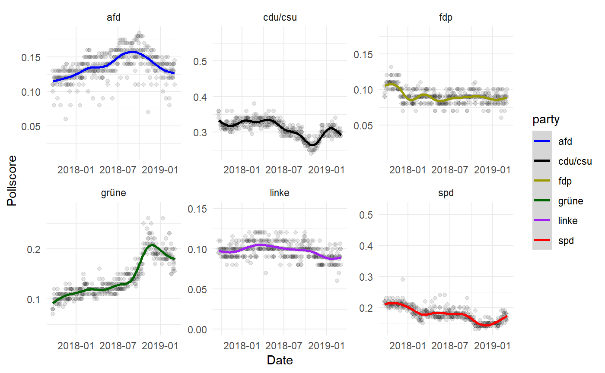

vig_polldata.Rmdintroductory remarks
library(voteR)
#> Loading required package: ggplot2
#> Loading required package: tidyverse
#> -- Attaching packages ----------------------- tidyverse 1.2.1 --
#> v tibble 2.0.1 v purrr 0.3.1
#> v tidyr 0.8.2 v dplyr 0.8.0.1
#> v readr 1.1.1 v stringr 1.4.0
#> v tibble 2.0.1 v forcats 0.3.0
#> -- Conflicts -------------------------- tidyverse_conflicts() --
#> x dplyr::filter() masks stats::filter()
#> x dplyr::lag() masks stats::lag()Scrape all available polls.
df <- scrape_wahlrecht_bund()
#> Starting Scraping from wahlrecht.de
#> Thanks to the developers for providing the database.
#> [1] "http://www.wahlrecht.de/umfragen/allensbach.htm"
#> [1] "http://www.wahlrecht.de/umfragen/allensbach/2002.htm"
#> [1] "http://www.wahlrecht.de/umfragen/allensbach/2005.htm"
#> [1] "http://www.wahlrecht.de/umfragen/allensbach/2009.htm"
#> [1] "http://www.wahlrecht.de/umfragen/allensbach/2013.htm"
#> [1] "http://www.wahlrecht.de/umfragen/emnid.htm"
#> [1] "http://www.wahlrecht.de/umfragen/emnid/1998.htm"
#> [1] "http://www.wahlrecht.de/umfragen/emnid/1999.htm"
#> [1] "http://www.wahlrecht.de/umfragen/emnid/2000.htm"
#> [1] "http://www.wahlrecht.de/umfragen/emnid/2001.htm"
#> [1] "http://www.wahlrecht.de/umfragen/emnid/2002.htm"
#> [1] "http://www.wahlrecht.de/umfragen/emnid/2003.htm"
#> [1] "http://www.wahlrecht.de/umfragen/emnid/2004.htm"
#> [1] "http://www.wahlrecht.de/umfragen/emnid/2005.htm"
#> [1] "http://www.wahlrecht.de/umfragen/emnid/2006.htm"
#> [1] "http://www.wahlrecht.de/umfragen/emnid/2007.htm"
#> [1] "http://www.wahlrecht.de/umfragen/emnid/2008.htm"
#> [1] "http://www.wahlrecht.de/umfragen/emnid/2013.htm"
#> [1] "http://www.wahlrecht.de/umfragen/forsa.htm"
#> [1] "http://www.wahlrecht.de/umfragen/forsa/1998.htm"
#> [1] "http://www.wahlrecht.de/umfragen/forsa/1999.htm"
#> [1] "http://www.wahlrecht.de/umfragen/forsa/2000.htm"
#> [1] "http://www.wahlrecht.de/umfragen/forsa/2001.htm"
#> [1] "http://www.wahlrecht.de/umfragen/forsa/2002.htm"
#> [1] "http://www.wahlrecht.de/umfragen/forsa/2003.htm"
#> [1] "http://www.wahlrecht.de/umfragen/forsa/2004.htm"
#> [1] "http://www.wahlrecht.de/umfragen/forsa/2005.htm"
#> [1] "http://www.wahlrecht.de/umfragen/forsa/2006.htm"
#> [1] "http://www.wahlrecht.de/umfragen/forsa/2007.htm"
#> [1] "http://www.wahlrecht.de/umfragen/forsa/2008.htm"
#> [1] "http://www.wahlrecht.de/umfragen/forsa/2013.htm"
#> [1] "http://www.wahlrecht.de/umfragen/politbarometer/stimmung.htm"
#> [1] "http://www.wahlrecht.de/umfragen/politbarometer/stimmung-1998.htm"
#> [1] "http://www.wahlrecht.de/umfragen/politbarometer/stimmung-2002.htm"
#> [1] "http://www.wahlrecht.de/umfragen/politbarometer/stimmung-2005.htm"
#> [1] "http://www.wahlrecht.de/umfragen/politbarometer/stimmung-2009.htm"
#> [1] "http://www.wahlrecht.de/umfragen/politbarometer/stimmung-2013.htm"
#> [1] "http://www.wahlrecht.de/umfragen/politbarometer/stimmung-2017.htm"
#> [1] "http://www.wahlrecht.de/umfragen/politbarometer.htm"
#> [1] "http://www.wahlrecht.de/umfragen/politbarometer/politbarometer-1998.htm"
#> [1] "http://www.wahlrecht.de/umfragen/politbarometer/politbarometer-2002.htm"
#> [1] "http://www.wahlrecht.de/umfragen/politbarometer/politbarometer-2005.htm"
#> [1] "http://www.wahlrecht.de/umfragen/politbarometer/politbarometer-2009.htm"
#> [1] "http://www.wahlrecht.de/umfragen/politbarometer/politbarometer-2013.htm"
#> [1] "http://www.wahlrecht.de/umfragen/politbarometer/politbarometer-2017.htm"
#> [1] "http://www.wahlrecht.de/umfragen/gms.htm"
#> [1] "http://www.wahlrecht.de/umfragen/gms/projektion-2005.htm"
#> [1] "http://www.wahlrecht.de/umfragen/gms/projektion-2009.htm"
#> [1] "http://www.wahlrecht.de/umfragen/gms/stimmung.htm"
#> [1] "http://www.wahlrecht.de/umfragen/gms/stimmung-2005.htm"
#> [1] "http://www.wahlrecht.de/umfragen/gms/stimmung-2009.htm"
#> [1] "http://www.wahlrecht.de/umfragen/dimap.htm"
#> [1] "http://www.wahlrecht.de/umfragen/dimap/1998.htm"
#> [1] "http://www.wahlrecht.de/umfragen/dimap/1999.htm"
#> [1] "http://www.wahlrecht.de/umfragen/dimap/2000.htm"
#> [1] "http://www.wahlrecht.de/umfragen/dimap/2001.htm"
#> [1] "http://www.wahlrecht.de/umfragen/dimap/2002.htm"
#> [1] "http://www.wahlrecht.de/umfragen/dimap/2003.htm"
#> [1] "http://www.wahlrecht.de/umfragen/dimap/2004.htm"
#> [1] "http://www.wahlrecht.de/umfragen/dimap/2005.htm"
#> [1] "http://www.wahlrecht.de/umfragen/dimap/2006.htm"
#> [1] "http://www.wahlrecht.de/umfragen/dimap/2007.htm"
#> [1] "http://www.wahlrecht.de/umfragen/dimap/2008.htm"
#> [1] "http://www.wahlrecht.de/umfragen/dimap/2013.htm"
#> [1] "http://www.wahlrecht.de/umfragen/insa.htm"
#> [1] "http://www.wahlrecht.de/umfragen/yougov.htm"
#> Scraping finished. You have selected polls including cdu/csu, spd, grüne, fdp, linke, afd from the institutes allensbach, emnid, forsa, politbarometer, gms, dimap, insa, yougov. If using the data, please cite both the authors of wahlrecht.de as well as the API proived by voteRExplore how many polls are available in total:
And split up by institute:
df %>% pull(institute) %>% table()
#> .
#> allensbach dimap emnid forsa gms
#> 272 771 1066 1124 395
#> insa politbarometer yougov
#> 361 843 32Check out the availbe variables:
colnames(df)
#> [1] "date" "year" "institute"
#> [4] "raw_by_institute" "participants" "enddate"
#> [7] "startdate" "cdu/csu" "spd"
#> [10] "grüne" "fdp" "linke"
#> [13] "afd" "others"Print the first 10 observations to see an example:
df %>% slice(1:10)
#> date year institute raw_by_institute participants enddate
#> 1 19.02.2019 2019 allensbach FALSE 1222 13.02.
#> 2 23.01.2019 2019 allensbach FALSE 1249 17.01.
#> 3 20.12.2018 2018 allensbach FALSE 1295 12.12.
#> 4 30.11.2018 2018 allensbach FALSE 1242 15.11.
#> 5 18.10.2018 2018 allensbach FALSE 1259 11.10.
#> 6 18.09.2018 2018 allensbach FALSE 1258 13.09.
#> 7 15.08.2018 2018 allensbach FALSE 1295 09.08.
#> 8 17.07.2018 2018 allensbach FALSE 1295 12.07.
#> 9 20.06.2018 2018 allensbach FALSE 1279 13.06.
#> 10 17.05.2018 2018 allensbach FALSE 1253 08.05.
#> startdate cdu/csu spd grüne fdp linke afd others
#> 1 01.02. 0.300 0.180 0.185 0.080 0.080 0.135 0.040
#> 2 05.01. 0.315 0.165 0.180 0.085 0.085 0.130 0.040
#> 3 01.12. 0.290 0.165 0.190 0.085 0.090 0.140 0.040
#> 4 02.11. 0.280 0.170 0.190 0.095 0.090 0.135 0.040
#> 5 28.09. 0.290 0.190 0.150 0.085 0.090 0.150 0.045
#> 6 01.09. 0.315 0.195 0.125 0.085 0.090 0.150 0.040
#> 7 27.07. 0.310 0.200 0.125 0.090 0.090 0.145 0.040
#> 8 01.07. 0.305 0.200 0.120 0.095 0.090 0.150 0.040
#> 9 01.06. 0.330 0.210 0.110 0.095 0.095 0.130 0.030
#> 10 24.04. 0.340 0.200 0.110 0.090 0.100 0.115 0.045Furthermore, a set of institutes to be included can be selected via a character vector passed to the institutes parameter. Possible options include allensbach, emnid, forsa, politbarometer, gms, dimap, insa, and yougov
scrape_wahlrecht_bund(institutes = c("dimap","politbarometer"))
#> Starting Scraping from wahlrecht.de
#> Thanks to the developers for providing the database.
#> [1] "http://www.wahlrecht.de/umfragen/politbarometer/stimmung.htm"
#> [1] "http://www.wahlrecht.de/umfragen/politbarometer/stimmung-1998.htm"
#> [1] "http://www.wahlrecht.de/umfragen/politbarometer/stimmung-2002.htm"
#> [1] "http://www.wahlrecht.de/umfragen/politbarometer/stimmung-2005.htm"
#> [1] "http://www.wahlrecht.de/umfragen/politbarometer/stimmung-2009.htm"
#> [1] "http://www.wahlrecht.de/umfragen/politbarometer/stimmung-2013.htm"
#> [1] "http://www.wahlrecht.de/umfragen/politbarometer/stimmung-2017.htm"
#> [1] "http://www.wahlrecht.de/umfragen/politbarometer.htm"
#> [1] "http://www.wahlrecht.de/umfragen/politbarometer/politbarometer-1998.htm"
#> [1] "http://www.wahlrecht.de/umfragen/politbarometer/politbarometer-2002.htm"
#> [1] "http://www.wahlrecht.de/umfragen/politbarometer/politbarometer-2005.htm"
#> [1] "http://www.wahlrecht.de/umfragen/politbarometer/politbarometer-2009.htm"
#> [1] "http://www.wahlrecht.de/umfragen/politbarometer/politbarometer-2013.htm"
#> [1] "http://www.wahlrecht.de/umfragen/politbarometer/politbarometer-2017.htm"
#> [1] "http://www.wahlrecht.de/umfragen/dimap.htm"
#> [1] "http://www.wahlrecht.de/umfragen/dimap/1998.htm"
#> [1] "http://www.wahlrecht.de/umfragen/dimap/1999.htm"
#> [1] "http://www.wahlrecht.de/umfragen/dimap/2000.htm"
#> [1] "http://www.wahlrecht.de/umfragen/dimap/2001.htm"
#> [1] "http://www.wahlrecht.de/umfragen/dimap/2002.htm"
#> [1] "http://www.wahlrecht.de/umfragen/dimap/2003.htm"
#> [1] "http://www.wahlrecht.de/umfragen/dimap/2004.htm"
#> [1] "http://www.wahlrecht.de/umfragen/dimap/2005.htm"
#> [1] "http://www.wahlrecht.de/umfragen/dimap/2006.htm"
#> [1] "http://www.wahlrecht.de/umfragen/dimap/2007.htm"
#> [1] "http://www.wahlrecht.de/umfragen/dimap/2008.htm"
#> [1] "http://www.wahlrecht.de/umfragen/dimap/2013.htm"
#> Scraping finished. You have selected polls including cdu/csu, spd, grüne, fdp, linke, afd from the institutes dimap, politbarometer. If using the data, please cite both the authors of wahlrecht.de as well as the API proived by voteR
#> date year institute raw_by_institute participants enddate
#> 1 08.02.2019 2019 politbarometer TRUE NA <NA>
#> 2 08.02.2019 2019 politbarometer TRUE NA <NA>
#> 3 25.01.2019 2019 politbarometer TRUE NA <NA>
#> 4 11.01.2019 2019 politbarometer TRUE NA <NA>
#> 5 14.12.2018 2018 politbarometer TRUE NA <NA>
#> 6 23.11.2018 2018 politbarometer TRUE NA <NA>
#> 7 09.11.2018 2018 politbarometer TRUE NA <NA>
#> 8 19.10.2018 2018 politbarometer TRUE NA <NA>
#> 9 28.09.2018 2018 politbarometer TRUE NA <NA>
#> 10 14.09.2018 2018 politbarometer TRUE NA <NA>
#> 11 31.08.2018 2018 politbarometer TRUE NA <NA>
#> 12 10.08.2018 2018 politbarometer TRUE NA <NA>
#> 13 13.07.2018 2018 politbarometer TRUE NA <NA>
#> 14 29.06.2018 2018 politbarometer TRUE NA <NA>
#> 15 08.06.2018 2018 politbarometer TRUE NA <NA>
#> 16 18.05.2018 2018 politbarometer TRUE NA <NA>
#> 17 27.04.2018 2018 politbarometer TRUE NA <NA>
#> 18 13.04.2018 2018 politbarometer TRUE NA <NA>
#> 19 16.03.2018 2018 politbarometer TRUE NA <NA>
#> 20 23.02.2018 2018 politbarometer TRUE NA <NA>
#> 21 02.02.2018 2018 politbarometer TRUE NA <NA>
#> 22 19.01.2018 2018 politbarometer TRUE NA <NA>
#> 23 08.12.2017 2017 politbarometer TRUE NA <NA>
#> 24 17.11.2017 2017 politbarometer TRUE NA <NA>
#> 25 27.10.2017 2017 politbarometer TRUE NA <NA>
#> 26 13.10.2017 2017 politbarometer TRUE NA <NA>
#> 27 29.09.2017 2017 politbarometer TRUE NA <NA>
#> 28 Wahl 2017 NA politbarometer TRUE NA <NA>
#> 29 Wahl 1998 NA politbarometer TRUE NA <NA>
#> 30 Sep. 1998 NA politbarometer TRUE NA <NA>
#> 31 14.08.1998 1998 politbarometer TRUE NA <NA>
#> 32 17.07.1998 1998 politbarometer TRUE NA <NA>
#> 33 19.06.1998 1998 politbarometer TRUE NA <NA>
#> 34 15.05.1998 1998 politbarometer TRUE NA <NA>
#> 35 17.04.1998 1998 politbarometer TRUE NA <NA>
#> 36 13.03.1998 1998 politbarometer TRUE NA <NA>
#> 37 13.02.1998 1998 politbarometer TRUE NA <NA>
#> 38 16.01.1998 1998 politbarometer TRUE NA <NA>
#> 39 Dez. 1997 NA politbarometer TRUE NA <NA>
#> 40 Nov. 1997 NA politbarometer TRUE NA <NA>
#> 41 Okt. 1997 NA politbarometer TRUE NA <NA>
#> 42 Sep. 1997 NA politbarometer TRUE NA <NA>
#> 43 Aug. 1997 NA politbarometer TRUE NA <NA>
#> 44 Jun. 1997 NA politbarometer TRUE NA <NA>
#> 45 Mai 1997 NA politbarometer TRUE NA <NA>
#> 46 Apr. 1997 NA politbarometer TRUE NA <NA>
#> 47 Mrz. 1997 NA politbarometer TRUE NA <NA>
#> 48 Feb. 1997 NA politbarometer TRUE NA <NA>
#> 49 Jan. 1997 NA politbarometer TRUE NA <NA>
#> 50 Dez. 1996 NA politbarometer TRUE NA <NA>
#> 51 Nov. 1996 NA politbarometer TRUE NA <NA>
#> 52 Okt. 1996 NA politbarometer TRUE NA <NA>
#> 53 Sep. 1996 NA politbarometer TRUE NA <NA>
#> 54 Aug. 1996 NA politbarometer TRUE NA <NA>
#> 55 Jun. 1996 NA politbarometer TRUE NA <NA>
#> 56 Mai 1996 NA politbarometer TRUE NA <NA>
#> 57 Apr. 1996 NA politbarometer TRUE NA <NA>
#> 58 Mrz. 1996 NA politbarometer TRUE NA <NA>
#> 59 Feb. 1996 NA politbarometer TRUE NA <NA>
#> 60 Jan. 1996 NA politbarometer TRUE NA <NA>
#> 61 Dez. 1995 NA politbarometer TRUE NA <NA>
#> 62 Nov. 1995 NA politbarometer TRUE NA <NA>
#> 63 Okt. 1995 NA politbarometer TRUE NA <NA>
#> 64 Sep. 1995 NA politbarometer TRUE NA <NA>
#> 65 Jul. 1995 NA politbarometer TRUE NA <NA>
#> 66 Jun. 1995 NA politbarometer TRUE NA <NA>
#> 67 Mai 1995 NA politbarometer TRUE NA <NA>
#> 68 Apr. 1995 NA politbarometer TRUE NA <NA>
#> 69 Mrz. 1995 NA politbarometer TRUE NA <NA>
#> 70 Feb. 1995 NA politbarometer TRUE NA <NA>
#> 71 Jan. 1995 NA politbarometer TRUE NA <NA>
#> 72 Dez. 1994 NA politbarometer TRUE NA <NA>
#> 73 Nov. 1994 NA politbarometer TRUE NA <NA>
#> 74 Wahl 2002 NA politbarometer TRUE NA <NA>
#> 75 13.09.2002 2002 politbarometer TRUE NA <NA>
#> 76 06.09.2002 2002 politbarometer TRUE NA <NA>
#> 77 30.08.2002 2002 politbarometer TRUE NA <NA>
#> 78 23.08.2002 2002 politbarometer TRUE NA <NA>
#> 79 16.08.2002 2002 politbarometer TRUE NA <NA>
#> 80 09.08.2002 2002 politbarometer TRUE NA <NA>
#> 81 26.07.2002 2002 politbarometer TRUE NA <NA>
#> 82 12.07.2002 2002 politbarometer TRUE NA <NA>
#> 83 28.06.2002 2002 politbarometer TRUE NA <NA>
#> 84 14.06.2002 2002 politbarometer TRUE NA <NA>
#> 85 31.05.2002 2002 politbarometer TRUE NA <NA>
#> 86 10.05.2002 2002 politbarometer TRUE NA <NA>
#> 87 26.04.2002 2002 politbarometer TRUE NA <NA>
#> 88 12.04.2002 2002 politbarometer TRUE NA <NA>
#> 89 22.03.2002 2002 politbarometer TRUE NA <NA>
#> 90 08.03.2002 2002 politbarometer TRUE NA <NA>
#> 91 22.02.2002 2002 politbarometer TRUE NA <NA>
#> 92 08.02.2002 2002 politbarometer TRUE NA <NA>
#> 93 18.01.2002 2002 politbarometer TRUE NA <NA>
#> 94 11.01.2002 2002 politbarometer TRUE NA <NA>
#> 95 14.12.2001 2001 politbarometer TRUE NA <NA>
#> 96 15.11.2001 2001 politbarometer TRUE NA <NA>
#> 97 12.10.2001 2001 politbarometer TRUE NA <NA>
#> 98 14.09.2001 2001 politbarometer TRUE NA <NA>
#> 99 24.08.2001 2001 politbarometer TRUE NA <NA>
#> 100 20.07.2001 2001 politbarometer TRUE NA <NA>
#> 101 22.06.2001 2001 politbarometer TRUE NA <NA>
#> 102 18.05.2001 2001 politbarometer TRUE NA <NA>
#> 103 06.04.2001 2001 politbarometer TRUE NA <NA>
#> 104 16.03.2001 2001 politbarometer TRUE NA <NA>
#> 105 16.02.2001 2001 politbarometer TRUE NA <NA>
#> 106 19.01.2001 2001 politbarometer TRUE NA <NA>
#> 107 15.12.2000 2000 politbarometer TRUE NA <NA>
#> 108 17.11.2000 2000 politbarometer TRUE NA <NA>
#> 109 17.11.2000 2000 politbarometer TRUE NA <NA>
#> 110 20.10.2000 2000 politbarometer TRUE NA <NA>
#> 111 22.09.2000 2000 politbarometer TRUE NA <NA>
#> 112 25.08.2000 2000 politbarometer TRUE NA <NA>
#> 113 28.07.2000 2000 politbarometer TRUE NA <NA>
#> 114 23.06.2000 2000 politbarometer TRUE NA <NA>
#> 115 19.05.2000 2000 politbarometer TRUE NA <NA>
#> 116 14.04.2000 2000 politbarometer TRUE NA <NA>
#> 117 17.03.2000 2000 politbarometer TRUE NA <NA>
#> 118 18.02.2000 2000 politbarometer TRUE NA <NA>
#> 119 21.01.2000 2000 politbarometer TRUE NA <NA>
#> 120 10.12.1999 1999 politbarometer TRUE NA <NA>
#> 121 12.11.1999 1999 politbarometer TRUE NA <NA>
#> 122 15.10.1999 1999 politbarometer TRUE NA <NA>
#> 123 24.09.1999 1999 politbarometer TRUE NA <NA>
#> 124 20.08.1999 1999 politbarometer TRUE NA <NA>
#> 125 23.07.1999 1999 politbarometer TRUE NA <NA>
#> 126 25.06.1999 1999 politbarometer TRUE NA <NA>
#> 127 21.05.1999 1999 politbarometer TRUE NA <NA>
#> 128 16.04.1999 1999 politbarometer TRUE NA <NA>
#> 129 19.03.1999 1999 politbarometer TRUE NA <NA>
#> 130 26.02.1999 1999 politbarometer TRUE NA <NA>
#> 131 22.01.1999 1999 politbarometer TRUE NA <NA>
#> 132 11.12.1998 1998 politbarometer TRUE NA <NA>
#> 133 13.11.1998 1998 politbarometer TRUE NA <NA>
#> 134 16.10.1998 1998 politbarometer TRUE NA <NA>
#> 135 Wahl 1998 NA politbarometer TRUE NA <NA>
#> 136 Wahl 2005 NA politbarometer TRUE NA <NA>
#> 137 09.09.2005 2005 politbarometer TRUE NA <NA>
#> 138 02.09.2005 2005 politbarometer TRUE NA <NA>
#> 139 26.08.2005 2005 politbarometer TRUE NA <NA>
#> 140 19.08.2005 2005 politbarometer TRUE NA <NA>
#> 141 12.08.2005 2005 politbarometer TRUE NA <NA>
#> 142 05.08.2005 2005 politbarometer TRUE NA <NA>
#> 143 22.07.2005 2005 politbarometer TRUE NA <NA>
#> 144 08.07.2005 2005 politbarometer TRUE NA <NA>
#> 145 24.06.2005 2005 politbarometer TRUE NA <NA>
#> 146 10.06.2005 2005 politbarometer TRUE NA <NA>
#> 147 27.05.2005 2005 politbarometer TRUE NA <NA>
#> 148 29.04.2005 2005 politbarometer TRUE NA <NA>
#> 149 15.04.2005 2005 politbarometer TRUE NA <NA>
#> 150 18.03.2005 2005 politbarometer TRUE NA <NA>
#> 151 25.02.2005 2005 politbarometer TRUE NA <NA>
#> 152 28.01.2005 2005 politbarometer TRUE NA <NA>
#> 153 14.01.2005 2005 politbarometer TRUE NA <NA>
#> 154 10.12.2004 2004 politbarometer TRUE NA <NA>
#> 155 26.11.2004 2004 politbarometer TRUE NA <NA>
#> 156 12.11.2004 2004 politbarometer TRUE NA <NA>
#> 157 29.10.2004 2004 politbarometer TRUE NA <NA>
#> 158 15.10.2004 2004 politbarometer TRUE NA <NA>
#> 159 24.09.2004 2004 politbarometer TRUE NA <NA>
#> 160 27.08.2004 2004 politbarometer TRUE NA <NA>
#> 161 23.07.2004 2004 politbarometer TRUE NA <NA>
#> 162 09.07.2004 2004 politbarometer TRUE NA <NA>
#> 163 25.06.2004 2004 politbarometer TRUE NA <NA>
#> 164 28.05.2004 2004 politbarometer TRUE NA <NA>
#> 165 14.05.2004 2004 politbarometer TRUE NA <NA>
#> 166 23.04.2004 2004 politbarometer TRUE NA <NA>
#> 167 02.04.2004 2004 politbarometer TRUE NA <NA>
#> 168 19.03.2004 2004 politbarometer TRUE NA <NA>
#> 169 05.03.2004 2004 politbarometer TRUE NA <NA>
#> 170 13.02.2004 2004 politbarometer TRUE NA <NA>
#> 171 16.01.2004 2004 politbarometer TRUE NA <NA>
#> 172 12.12.2003 2003 politbarometer TRUE NA <NA>
#> 173 28.11.2003 2003 politbarometer TRUE NA <NA>
#> 174 14.11.2003 2003 politbarometer TRUE NA <NA>
#> 175 24.10.2003 2003 politbarometer TRUE NA <NA>
#> 176 10.10.2003 2003 politbarometer TRUE NA <NA>
#> 177 12.09.2003 2003 politbarometer TRUE NA <NA>
#> 178 22.08.2003 2003 politbarometer TRUE NA <NA>
#> 179 18.07.2003 2003 politbarometer TRUE NA <NA>
#> 180 27.06.2003 2003 politbarometer TRUE NA <NA>
#> 181 06.06.2003 2003 politbarometer TRUE NA <NA>
#> 182 16.05.2003 2003 politbarometer TRUE NA <NA>
#> 183 02.05.2003 2003 politbarometer TRUE NA <NA>
#> 184 11.04.2003 2003 politbarometer TRUE NA <NA>
#> 185 28.03.2003 2003 politbarometer TRUE NA <NA>
#> 186 14.03.2003 2003 politbarometer TRUE NA <NA>
#> 187 21.02.2003 2003 politbarometer TRUE NA <NA>
#> 188 07.02.2003 2003 politbarometer TRUE NA <NA>
#> 189 24.01.2003 2003 politbarometer TRUE NA <NA>
#> 190 13.12.2002 2002 politbarometer TRUE NA <NA>
#> 191 15.11.2002 2002 politbarometer TRUE NA <NA>
#> 192 18.10.2002 2002 politbarometer TRUE NA <NA>
#> 193 Wahl 2002 NA politbarometer TRUE NA <NA>
#> 194 Wahl 2009 NA politbarometer TRUE NA <NA>
#> 195 18.09.2009 2009 politbarometer TRUE NA <NA>
#> 196 11.09.2009 2009 politbarometer TRUE NA <NA>
#> 197 04.09.2009 2009 politbarometer TRUE NA <NA>
#> 198 28.08.2009 2009 politbarometer TRUE NA <NA>
#> 199 21.08.2009 2009 politbarometer TRUE NA <NA>
#> 200 07.08.2009 2009 politbarometer TRUE NA <NA>
#> 201 24.07.2009 2009 politbarometer TRUE NA <NA>
#> 202 03.07.2009 2009 politbarometer TRUE NA <NA>
#> 203 12.06.2009 2009 politbarometer TRUE NA <NA>
#> 204 29.05.2009 2009 politbarometer TRUE NA <NA>
#> 205 08.05.2009 2009 politbarometer TRUE NA <NA>
#> 206 24.04.2009 2009 politbarometer TRUE NA <NA>
#> 207 27.03.2009 2009 politbarometer TRUE NA <NA>
#> 208 06.03.2009 2009 politbarometer TRUE NA <NA>
#> 209 13.02.2009 2009 politbarometer TRUE NA <NA>
#> 210 30.01.2009 2009 politbarometer TRUE NA <NA>
#> 211 09.01.2009 2009 politbarometer TRUE NA <NA>
#> 212 12.12.2008 2008 politbarometer TRUE NA <NA>
#> 213 21.11.2008 2008 politbarometer TRUE NA <NA>
#> 214 07.11.2008 2008 politbarometer TRUE NA <NA>
#> 215 24.10.2008 2008 politbarometer TRUE NA <NA>
#> 216 10.10.2008 2008 politbarometer TRUE NA <NA>
#> 217 12.09.2008 2008 politbarometer TRUE NA <NA>
#> 218 15.08.2008 2008 politbarometer TRUE NA <NA>
#> 219 11.07.2008 2008 politbarometer TRUE NA <NA>
#> 220 13.06.2008 2008 politbarometer TRUE NA <NA>
#> 221 30.05.2008 2008 politbarometer TRUE NA <NA>
#> 222 09.05.2008 2008 politbarometer TRUE NA <NA>
#> 223 18.04.2008 2008 politbarometer TRUE NA <NA>
#> 224 04.04.2008 2008 politbarometer TRUE NA <NA>
#> 225 14.03.2008 2008 politbarometer TRUE NA <NA>
#> 226 29.02.2008 2008 politbarometer TRUE NA <NA>
#> 227 08.02.2008 2008 politbarometer TRUE NA <NA>
#> 228 11.01.2008 2008 politbarometer TRUE NA <NA>
#> 229 14.12.2007 2007 politbarometer TRUE NA <NA>
#> 230 23.11.2007 2007 politbarometer TRUE NA <NA>
#> 231 09.11.2007 2007 politbarometer TRUE NA <NA>
#> 232 19.10.2007 2007 politbarometer TRUE NA <NA>
#> 233 05.10.2007 2007 politbarometer TRUE NA <NA>
#> 234 14.09.2007 2007 politbarometer TRUE NA <NA>
#> 235 17.08.2007 2007 politbarometer TRUE NA <NA>
#> 236 20.07.2007 2007 politbarometer TRUE NA <NA>
#> 237 22.06.2007 2007 politbarometer TRUE NA <NA>
#> 238 01.06.2007 2007 politbarometer TRUE NA <NA>
#> 239 18.05.2007 2007 politbarometer TRUE NA <NA>
#> 240 20.04.2007 2007 politbarometer TRUE NA <NA>
#> 241 30.03.2007 2007 politbarometer TRUE NA <NA>
#> 242 16.03.2007 2007 politbarometer TRUE NA <NA>
#> 243 02.03.2007 2007 politbarometer TRUE NA <NA>
#> 244 09.02.2007 2007 politbarometer TRUE NA <NA>
#> 245 12.01.2007 2007 politbarometer TRUE NA <NA>
#> 246 15.12.2006 2006 politbarometer TRUE NA <NA>
#> 247 24.11.2006 2006 politbarometer TRUE NA <NA>
#> 248 10.11.2006 2006 politbarometer TRUE NA <NA>
#> 249 27.10.2006 2006 politbarometer TRUE NA <NA>
#> 250 13.10.2006 2006 politbarometer TRUE NA <NA>
#> 251 29.09.2006 2006 politbarometer TRUE NA <NA>
#> 252 01.09.2006 2006 politbarometer TRUE NA <NA>
#> 253 18.08.2006 2006 politbarometer TRUE NA <NA>
#> 254 14.07.2006 2006 politbarometer TRUE NA <NA>
#> 255 16.06.2006 2006 politbarometer TRUE NA <NA>
#> 256 19.05.2006 2006 politbarometer TRUE NA <NA>
#> 257 28.04.2006 2006 politbarometer TRUE NA <NA>
#> 258 07.04.2006 2006 politbarometer TRUE NA <NA>
#> 259 10.03.2006 2006 politbarometer TRUE NA <NA>
#> 260 17.02.2006 2006 politbarometer TRUE NA <NA>
#> 261 27.01.2006 2006 politbarometer TRUE NA <NA>
#> 262 13.01.2006 2006 politbarometer TRUE NA <NA>
#> 263 09.12.2005 2005 politbarometer TRUE NA <NA>
#> 264 25.11.2005 2005 politbarometer TRUE NA <NA>
#> 265 11.11.2005 2005 politbarometer TRUE NA <NA>
#> 266 28.10.2005 2005 politbarometer TRUE NA <NA>
#> 267 14.10.2005 2005 politbarometer TRUE NA <NA>
#> 268 07.10.2005 2005 politbarometer TRUE NA <NA>
#> 269 23.09.2005 2005 politbarometer TRUE NA <NA>
#> 270 Wahl 2005 NA politbarometer TRUE NA <NA>
#> 271 Wahl 2013 NA politbarometer TRUE NA <NA>
#> 272 19.09.2013 2013 politbarometer TRUE NA <NA>
#> 273 12.09.2013 2013 politbarometer TRUE NA <NA>
#> 274 05.09.2013 2013 politbarometer TRUE NA <NA>
#> 275 29.08.2013 2013 politbarometer TRUE NA <NA>
#> 276 23.08.2013 2013 politbarometer TRUE NA <NA>
#> 277 14.08.2013 2013 politbarometer TRUE NA <NA>
#> 278 02.08.2013 2013 politbarometer TRUE NA <NA>
#> 279 12.07.2013 2013 politbarometer TRUE NA <NA>
#> 280 28.06.2013 2013 politbarometer TRUE NA <NA>
#> 281 07.06.2013 2013 politbarometer TRUE NA <NA>
#> 282 17.05.2013 2013 politbarometer TRUE NA <NA>
#> 283 26.04.2013 2013 politbarometer TRUE NA <NA>
#> 284 12.04.2013 2013 politbarometer TRUE NA <NA>
#> 285 22.03.2013 2013 politbarometer TRUE NA <NA>
#> 286 08.03.2013 2013 politbarometer TRUE NA <NA>
#> 287 22.02.2013 2013 politbarometer TRUE NA <NA>
#> 288 25.01.2013 2013 politbarometer TRUE NA <NA>
#> 289 11.01.2013 2013 politbarometer TRUE NA <NA>
#> 290 14.12.2012 2012 politbarometer TRUE NA <NA>
#> 291 30.11.2012 2012 politbarometer TRUE NA <NA>
#> 292 16.11.2012 2012 politbarometer TRUE NA <NA>
#> 293 26.10.2012 2012 politbarometer TRUE NA <NA>
#> 294 11.10.2012 2012 politbarometer TRUE NA <NA>
#> 295 28.09.2012 2012 politbarometer TRUE NA <NA>
#> 296 14.09.2012 2012 politbarometer TRUE NA <NA>
#> 297 24.08.2012 2012 politbarometer TRUE NA <NA>
#> 298 13.07.2012 2012 politbarometer TRUE NA <NA>
#> 299 15.06.2012 2012 politbarometer TRUE NA <NA>
#> 300 25.05.2012 2012 politbarometer TRUE NA <NA>
#> 301 16.05.2012 2012 politbarometer TRUE NA <NA>
#> 302 27.04.2012 2012 politbarometer TRUE NA <NA>
#> 303 30.03.2012 2012 politbarometer TRUE NA <NA>
#> 304 09.03.2012 2012 politbarometer TRUE NA <NA>
#> 305 10.02.2012 2012 politbarometer TRUE NA <NA>
#> 306 27.01.2012 2012 politbarometer TRUE NA <NA>
#> 307 13.01.2012 2012 politbarometer TRUE NA <NA>
#> 308 16.12.2011 2011 politbarometer TRUE NA <NA>
#> 309 25.11.2011 2011 politbarometer TRUE NA <NA>
#> 310 11.11.2011 2011 politbarometer TRUE NA <NA>
#> 311 28.10.2011 2011 politbarometer TRUE NA <NA>
#> 312 14.10.2011 2011 politbarometer TRUE NA <NA>
#> 313 23.09.2011 2011 politbarometer TRUE NA <NA>
#> 314 09.09.2011 2011 politbarometer TRUE NA <NA>
#> 315 12.08.2011 2011 politbarometer TRUE NA <NA>
#> 316 15.07.2011 2011 politbarometer TRUE NA <NA>
#> 317 10.06.2011 2011 politbarometer TRUE NA <NA>
#> 318 27.05.2011 2011 politbarometer TRUE NA <NA>
#> 319 06.05.2011 2011 politbarometer TRUE NA <NA>
#> 320 15.04.2011 2011 politbarometer TRUE NA <NA>
#> 321 01.04.2011 2011 politbarometer TRUE NA <NA>
#> 322 25.02.2011 2011 politbarometer TRUE NA <NA>
#> 323 11.02.2011 2011 politbarometer TRUE NA <NA>
#> 324 28.01.2011 2011 politbarometer TRUE NA <NA>
#> 325 14.01.2011 2011 politbarometer TRUE NA <NA>
#> 326 17.12.2010 2010 politbarometer TRUE NA <NA>
#> 327 03.12.2010 2010 politbarometer TRUE NA <NA>
#> 328 12.11.2010 2010 politbarometer TRUE NA <NA>
#> 329 22.10.2010 2010 politbarometer TRUE NA <NA>
#> 330 01.10.2010 2010 politbarometer TRUE NA <NA>
#> 331 24.09.2010 2010 politbarometer TRUE NA <NA>
#> 332 10.09.2010 2010 politbarometer TRUE NA <NA>
#> 333 27.08.2010 2010 politbarometer TRUE NA <NA>
#> 334 16.07.2010 2010 politbarometer TRUE NA <NA>
#> 335 18.06.2010 2010 politbarometer TRUE NA <NA>
#> 336 04.06.2010 2010 politbarometer TRUE NA <NA>
#> 337 21.05.2010 2010 politbarometer TRUE NA <NA>
#> 338 23.04.2010 2010 politbarometer TRUE NA <NA>
#> 339 26.03.2010 2010 politbarometer TRUE NA <NA>
#> 340 12.03.2010 2010 politbarometer TRUE NA <NA>
#> 341 26.02.2010 2010 politbarometer TRUE NA <NA>
#> 342 29.01.2010 2010 politbarometer TRUE NA <NA>
#> 343 15.01.2010 2010 politbarometer TRUE NA <NA>
#> 344 11.12.2009 2009 politbarometer TRUE NA <NA>
#> 345 27.11.2009 2009 politbarometer TRUE NA <NA>
#> 346 30.10.2009 2009 politbarometer TRUE NA <NA>
#> 347 16.10.2009 2009 politbarometer TRUE NA <NA>
#> 348 02.10.2009 2009 politbarometer TRUE NA <NA>
#> 349 Wahl 2009 NA politbarometer TRUE NA <NA>
#> 350 Wahl 2017 NA politbarometer TRUE NA <NA>
#> 351 21.09.2017 2017 politbarometer TRUE NA <NA>
#> 352 15.09.2017 2017 politbarometer TRUE NA <NA>
#> 353 08.09.2017 2017 politbarometer TRUE NA <NA>
#> 354 01.09.2017 2017 politbarometer TRUE NA <NA>
#> 355 25.08.2017 2017 politbarometer TRUE NA <NA>
#> 356 11.08.2017 2017 politbarometer TRUE NA <NA>
#> 357 21.07.2017 2017 politbarometer TRUE NA <NA>
#> 358 07.07.2017 2017 politbarometer TRUE NA <NA>
#> 359 23.06.2017 2017 politbarometer TRUE NA <NA>
#> 360 02.06.2017 2017 politbarometer TRUE NA <NA>
#> 361 19.05.2017 2017 politbarometer TRUE NA <NA>
#> 362 28.04.2017 2017 politbarometer TRUE NA <NA>
#> 363 07.04.2017 2017 politbarometer TRUE NA <NA>
#> 364 10.03.2017 2017 politbarometer TRUE NA <NA>
#> 365 17.02.2017 2017 politbarometer TRUE NA <NA>
#> 366 27.01.2017 2017 politbarometer TRUE NA <NA>
#> 367 13.01.2017 2017 politbarometer TRUE NA <NA>
#> 368 09.12.2016 2016 politbarometer TRUE NA <NA>
#> 369 25.11.2016 2016 politbarometer TRUE NA <NA>
#> 370 11.11.2016 2016 politbarometer TRUE NA <NA>
#> 371 28.10.2016 2016 politbarometer TRUE NA <NA>
#> 372 14.10.2016 2016 politbarometer TRUE NA <NA>
#> 373 23.09.2016 2016 politbarometer TRUE NA <NA>
#> 374 12.08.2016 2016 politbarometer TRUE NA <NA>
#> 375 22.07.2016 2016 politbarometer TRUE NA <NA>
#> 376 08.07.2016 2016 politbarometer TRUE NA <NA>
#> 377 24.06.2016 2016 politbarometer TRUE NA <NA>
#> 378 03.06.2016 2016 politbarometer TRUE NA <NA>
#> 379 13.05.2016 2016 politbarometer TRUE NA <NA>
#> 380 22.04.2016 2016 politbarometer TRUE NA <NA>
#> 381 08.04.2016 2016 politbarometer TRUE NA <NA>
#> 382 18.03.2016 2016 politbarometer TRUE NA <NA>
#> 383 19.02.2016 2016 politbarometer TRUE NA <NA>
#> 384 29.01.2016 2016 politbarometer TRUE NA <NA>
#> 385 15.01.2016 2016 politbarometer TRUE NA <NA>
#> 386 11.12.2015 2015 politbarometer TRUE NA <NA>
#> 387 27.11.2015 2015 politbarometer TRUE NA <NA>
#> 388 13.11.2015 2015 politbarometer TRUE NA <NA>
#> 389 23.10.2015 2015 politbarometer TRUE NA <NA>
#> 390 09.10.2015 2015 politbarometer TRUE NA <NA>
#> 391 25.09.2015 2015 politbarometer TRUE NA <NA>
#> 392 11.09.2015 2015 politbarometer TRUE NA <NA>
#> 393 21.08.2015 2015 politbarometer TRUE NA <NA>
#> 394 24.07.2015 2015 politbarometer TRUE NA <NA>
#> 395 03.07.2015 2015 politbarometer TRUE NA <NA>
#> 396 12.06.2015 2015 politbarometer TRUE NA <NA>
#> 397 22.05.2015 2015 politbarometer TRUE NA <NA>
#> 398 17.04.2015 2015 politbarometer TRUE NA <NA>
#> 399 27.03.2015 2015 politbarometer TRUE NA <NA>
#> 400 13.03.2015 2015 politbarometer TRUE NA <NA>
#> 401 27.02.2015 2015 politbarometer TRUE NA <NA>
#> 402 30.01.2015 2015 politbarometer TRUE NA <NA>
#> 403 16.01.2015 2015 politbarometer TRUE NA <NA>
#> 404 12.12.2014 2014 politbarometer TRUE NA <NA>
#> 405 28.11.2014 2014 politbarometer TRUE NA <NA>
#> 406 14.11.2014 2014 politbarometer TRUE NA <NA>
#> 407 24.10.2014 2014 politbarometer TRUE NA <NA>
#> 408 10.10.2014 2014 politbarometer TRUE NA <NA>
#> 409 26.09.2014 2014 politbarometer TRUE NA <NA>
#> 410 05.09.2014 2014 politbarometer TRUE NA <NA>
#> 411 22.08.2014 2014 politbarometer TRUE NA <NA>
#> 412 18.07.2014 2014 politbarometer TRUE NA <NA>
#> 413 27.06.2014 2014 politbarometer TRUE NA <NA>
#> 414 05.06.2014 2014 politbarometer TRUE NA <NA>
#> 415 09.05.2014 2014 politbarometer TRUE NA <NA>
#> 416 11.04.2014 2014 politbarometer TRUE NA <NA>
#> 417 28.03.2014 2014 politbarometer TRUE NA <NA>
#> 418 14.03.2014 2014 politbarometer TRUE NA <NA>
#> 419 21.02.2014 2014 politbarometer TRUE NA <NA>
#> 420 31.01.2014 2014 politbarometer TRUE NA <NA>
#> 421 17.01.2014 2014 politbarometer TRUE NA <NA>
#> 422 13.12.2013 2013 politbarometer TRUE NA <NA>
#> 423 29.11.2013 2013 politbarometer TRUE NA <NA>
#> 424 08.11.2013 2013 politbarometer TRUE NA <NA>
#> 425 18.10.2013 2013 politbarometer TRUE NA <NA>
#> 426 27.09.2013 2013 politbarometer TRUE NA <NA>
#> 427 Wahl 2013 NA politbarometer TRUE NA <NA>
#> 428 22.02.2019 2019 politbarometer FALSE 1266 21.02.
#> 429 08.02.2019 2019 politbarometer FALSE 1350 07.02.
#> 430 25.01.2019 2019 politbarometer FALSE 1285 24.01.
#> 431 11.01.2019 2019 politbarometer FALSE 1267 10.01.
#> 432 14.12.2018 2018 politbarometer FALSE 1268 13.12.
#> 433 23.11.2018 2018 politbarometer FALSE 1336 22.11.
#> 434 09.11.2018 2018 politbarometer FALSE 1200 08.11.
#> 435 19.10.2018 2018 politbarometer FALSE 1117 18.10.
#> 436 28.09.2018 2018 politbarometer FALSE 1260 27.09.
#> 437 14.09.2018 2018 politbarometer FALSE 1339 13.09.
#> 438 31.08.2018 2018 politbarometer FALSE 1216 30.08.
#> 439 10.08.2018 2018 politbarometer FALSE 1294 09.08.
#> 440 13.07.2018 2018 politbarometer FALSE 1340 12.07.
#> 441 29.06.2018 2018 politbarometer FALSE 1290 28.06.
#> 442 08.06.2018 2018 politbarometer FALSE 1284 07.06.
#> 443 18.05.2018 2018 politbarometer FALSE 1200 17.05.
#> 444 27.04.2018 2018 politbarometer FALSE 1285 26.04.
#> 445 13.04.2018 2018 politbarometer FALSE 1159 12.04.
#> 446 16.03.2018 2018 politbarometer FALSE 1214 15.03.
#> 447 23.02.2018 2018 politbarometer FALSE 1360 22.02.
#> 448 02.02.2018 2018 politbarometer FALSE 1302 01.02.
#> 449 19.01.2018 2018 politbarometer FALSE 1332 18.01.
#> 450 08.12.2017 2017 politbarometer FALSE 1353 07.12.
#> 451 17.11.2017 2017 politbarometer FALSE 1303 16.11.
#> 452 27.10.2017 2017 politbarometer FALSE 1325 26.10.
#> 453 13.10.2017 2017 politbarometer FALSE 1180 12.10.
#> 454 29.09.2017 2017 politbarometer FALSE 1425 28.09.
#> 455 18.09.1998 1998 politbarometer FALSE NA <NA>
#> 456 11.09.1998 1998 politbarometer FALSE NA <NA>
#> 457 04.09.1998 1998 politbarometer FALSE NA <NA>
#> 458 14.08.1998 1998 politbarometer FALSE NA <NA>
#> 459 17.07.1998 1998 politbarometer FALSE NA <NA>
#> 460 19.06.1998 1998 politbarometer FALSE NA <NA>
#> 461 15.05.1998 1998 politbarometer FALSE NA <NA>
#> 462 17.04.1998 1998 politbarometer FALSE NA <NA>
#> 463 13.03.1998 1998 politbarometer FALSE NA <NA>
#> 464 13.02.1998 1998 politbarometer FALSE NA <NA>
#> 465 16.01.1998 1998 politbarometer FALSE NA <NA>
#> 466 Dez. 1997 NA politbarometer FALSE NA <NA>
#> 467 Nov. 1997 NA politbarometer FALSE NA <NA>
#> 468 Okt. 1997 NA politbarometer FALSE NA <NA>
#> 469 Sep. 1997 NA politbarometer FALSE NA <NA>
#> 470 Aug. 1997 NA politbarometer FALSE NA <NA>
#> 471 Jun. 1997 NA politbarometer FALSE NA <NA>
#> 472 Mai 1997 NA politbarometer FALSE NA <NA>
#> 473 Apr. 1997 NA politbarometer FALSE NA <NA>
#> 474 Mrz. 1997 NA politbarometer FALSE NA <NA>
#> 475 Feb. 1997 NA politbarometer FALSE NA <NA>
#> 476 Jan. 1997 NA politbarometer FALSE NA <NA>
#> 477 Dez. 1996 NA politbarometer FALSE NA <NA>
#> 478 Nov. 1996 NA politbarometer FALSE NA <NA>
#> 479 Okt. 1996 NA politbarometer FALSE NA <NA>
#> 480 Sep. 1996 NA politbarometer FALSE NA <NA>
#> 481 Aug. 1996 NA politbarometer FALSE NA <NA>
#> 482 Jun. 1996 NA politbarometer FALSE NA <NA>
#> 483 Mai 1996 NA politbarometer FALSE NA <NA>
#> 484 Apr. 1996 NA politbarometer FALSE NA <NA>
#> 485 Mrz. 1996 NA politbarometer FALSE NA <NA>
#> 486 Feb. 1996 NA politbarometer FALSE NA <NA>
#> 487 Jan. 1996 NA politbarometer FALSE NA <NA>
#> 488 Dez. 1995 NA politbarometer FALSE NA <NA>
#> 489 Nov. 1995 NA politbarometer FALSE NA <NA>
#> 490 Okt. 1995 NA politbarometer FALSE NA <NA>
#> 491 Sep. 1995 NA politbarometer FALSE NA <NA>
#> 492 Jul. 1995 NA politbarometer FALSE NA <NA>
#> 493 Jun. 1995 NA politbarometer FALSE NA <NA>
#> 494 Mai 1995 NA politbarometer FALSE NA <NA>
#> 495 Apr. 1995 NA politbarometer FALSE NA <NA>
#> 496 Mrz. 1995 NA politbarometer FALSE NA <NA>
#> 497 Feb. 1995 NA politbarometer FALSE NA <NA>
#> 498 Jan. 1995 NA politbarometer FALSE NA <NA>
#> 499 Dez. 1994 NA politbarometer FALSE NA <NA>
#> 500 Nov. 1994 NA politbarometer FALSE NA <NA>
#> 501 13.09.2002 2002 politbarometer FALSE 1326 12.09.
#> 502 06.09.2002 2002 politbarometer FALSE 1476 05.09.
#> 503 30.08.2002 2002 politbarometer FALSE 1254 29.08.
#> 504 23.08.2002 2002 politbarometer FALSE 1292 22.08.
#> 505 16.08.2002 2002 politbarometer FALSE 1068 15.08.
#> 506 09.08.2002 2002 politbarometer FALSE 1106 08.08.
#> 507 26.07.2002 2002 politbarometer FALSE 1262 25.07.
#> 508 12.07.2002 2002 politbarometer FALSE 1031 11.07.
#> 509 28.06.2002 2002 politbarometer FALSE 1281 27.06.
#> 510 14.06.2002 2002 politbarometer FALSE 1018 13.06.
#> 511 31.05.2002 2002 politbarometer FALSE 1312 29.05.
#> 512 10.05.2002 2002 politbarometer FALSE 1014 09.05.
#> 513 26.04.2002 2002 politbarometer FALSE 1287 25.04.
#> 514 12.04.2002 2002 politbarometer FALSE 1000 11.04.
#> 515 22.03.2002 2002 politbarometer FALSE 1274 21.03.
#> 516 08.03.2002 2002 politbarometer FALSE 1050 07.03.
#> 517 22.02.2002 2002 politbarometer FALSE 1191 21.02.
#> 518 08.02.2002 2002 politbarometer FALSE 1027 07.02.
#> 519 18.01.2002 2002 politbarometer FALSE 1306 17.01.
#> 520 11.01.2002 2002 politbarometer FALSE 1038 10.01.
#> 521 14.12.2001 2001 politbarometer FALSE 1254 13.12.
#> 522 15.11.2001 2001 politbarometer FALSE 1098 14.11.
#> 523 12.10.2001 2001 politbarometer FALSE 1250 11.10.
#> 524 14.09.2001 2001 politbarometer FALSE 1031 13.09.
#> 525 24.08.2001 2001 politbarometer FALSE 1245 23.08.
#> 526 20.07.2001 2001 politbarometer FALSE 1224 19.07.
#> 527 22.06.2001 2001 politbarometer FALSE 1237 21.06.
#> 528 18.05.2001 2001 politbarometer FALSE 1266 17.05.
#> 529 06.04.2001 2001 politbarometer FALSE 1264 05.04.
#> 530 16.03.2001 2001 politbarometer FALSE 1264 15.03.
#> 531 16.02.2001 2001 politbarometer FALSE 1207 15.02.
#> 532 19.01.2001 2001 politbarometer FALSE 1276 18.01.
#> 533 15.12.2000 2000 politbarometer FALSE 1271 14.12.
#> 534 17.11.2000 2000 politbarometer FALSE 1259 16.11.
#> 535 20.10.2000 2000 politbarometer FALSE 1294 19.10.
#> 536 22.09.2000 2000 politbarometer FALSE 1174 21.09.
#> 537 25.08.2000 2000 politbarometer FALSE 1219 24.08.
#> 538 28.07.2000 2000 politbarometer FALSE 1255 27.07.
#> 539 23.06.2000 2000 politbarometer FALSE NA <NA>
#> 540 19.05.2000 2000 politbarometer FALSE NA <NA>
#> 541 14.04.2000 2000 politbarometer FALSE NA <NA>
#> 542 17.03.2000 2000 politbarometer FALSE NA <NA>
#> 543 18.02.2000 2000 politbarometer FALSE NA <NA>
#> 544 21.01.2000 2000 politbarometer FALSE NA <NA>
#> 545 10.12.1999 1999 politbarometer FALSE NA <NA>
#> 546 12.11.1999 1999 politbarometer FALSE NA <NA>
#> 547 15.10.1999 1999 politbarometer FALSE NA <NA>
#> 548 24.09.1999 1999 politbarometer FALSE NA <NA>
#> 549 20.08.1999 1999 politbarometer FALSE NA <NA>
#> 550 23.07.1999 1999 politbarometer FALSE NA <NA>
#> 551 25.06.1999 1999 politbarometer FALSE NA <NA>
#> 552 21.05.1999 1999 politbarometer FALSE NA <NA>
#> 553 16.04.1999 1999 politbarometer FALSE NA <NA>
#> 554 19.03.1999 1999 politbarometer FALSE NA <NA>
#> 555 26.02.1999 1999 politbarometer FALSE NA <NA>
#> 556 22.01.1999 1999 politbarometer FALSE NA <NA>
#> 557 11.12.1998 1998 politbarometer FALSE NA <NA>
#> 558 13.11.1998 1998 politbarometer FALSE NA <NA>
#> 559 16.10.1998 1998 politbarometer FALSE NA <NA>
#> 560 09.09.2005 2005 politbarometer FALSE 1299 08.09.
#> 561 02.09.2005 2005 politbarometer FALSE 1305 01.09.
#> 562 26.08.2005 2005 politbarometer FALSE 1305 25.08.
#> 563 19.08.2005 2005 politbarometer FALSE 1257 18.08.
#> 564 12.08.2005 2005 politbarometer FALSE 1227 11.08.
#> 565 05.08.2005 2005 politbarometer FALSE 1303 04.08.
#> 566 22.07.2005 2005 politbarometer FALSE 1300 21.07.
#> 567 08.07.2005 2005 politbarometer FALSE 1257 07.07.
#> 568 24.06.2005 2005 politbarometer FALSE 1175 23.06.
#> 569 10.06.2005 2005 politbarometer FALSE 1298 09.06.
#> 570 27.05.2005 2005 politbarometer FALSE 1162 26.05.
#> 571 29.04.2005 2005 politbarometer FALSE 1285 28.04.
#> 572 15.04.2005 2005 politbarometer FALSE 1280 14.04.
#> 573 18.03.2005 2005 politbarometer FALSE 1237 17.03.
#> 574 25.02.2005 2005 politbarometer FALSE 1268 24.02.
#> 575 28.01.2005 2005 politbarometer FALSE 1257 27.01.
#> 576 14.01.2005 2005 politbarometer FALSE 1273 13.01.
#> 577 10.12.2004 2004 politbarometer FALSE 1233 09.12.
#> 578 26.11.2004 2004 politbarometer FALSE 1289 25.11.
#> 579 12.11.2004 2004 politbarometer FALSE 1265 11.11.
#> 580 29.10.2004 2004 politbarometer FALSE 1239 28.10.
#> 581 15.10.2004 2004 politbarometer FALSE 1240 14.10.
#> 582 24.09.2004 2004 politbarometer FALSE 1245 23.09.
#> 583 27.08.2004 2004 politbarometer FALSE 1173 26.08.
#> 584 23.07.2004 2004 politbarometer FALSE 1225 22.07.
#> 585 09.07.2004 2004 politbarometer FALSE 1255 08.07.
#> 586 25.06.2004 2004 politbarometer FALSE 1230 24.06.
#> 587 28.05.2004 2004 politbarometer FALSE 1217 27.05.
#> 588 14.05.2004 2004 politbarometer FALSE 1213 13.05.
#> 589 23.04.2004 2004 politbarometer FALSE 1289 22.04.
#> 590 02.04.2004 2004 politbarometer FALSE 1315 01.04.
#> 591 19.03.2004 2004 politbarometer FALSE 1230 18.03.
#> 592 05.03.2004 2004 politbarometer FALSE 1285 04.03.
#> 593 13.02.2004 2004 politbarometer FALSE 1250 12.02.
#> 594 16.01.2004 2004 politbarometer FALSE 1305 15.01.
#> 595 12.12.2003 2003 politbarometer FALSE 1263 11.12.
#> 596 28.11.2003 2003 politbarometer FALSE 1274 27.11.
#> 597 14.11.2003 2003 politbarometer FALSE 1240 13.11.
#> 598 24.10.2003 2003 politbarometer FALSE 1199 23.10.
#> 599 10.10.2003 2003 politbarometer FALSE 1274 09.10.
#> 600 12.09.2003 2003 politbarometer FALSE 1251 11.09.
#> 601 22.08.2003 2003 politbarometer FALSE 1189 21.08.
#> 602 18.07.2003 2003 politbarometer FALSE 1272 17.07.
#> 603 27.06.2003 2003 politbarometer FALSE 1284 26.06.
#> 604 06.06.2003 2003 politbarometer FALSE 1255 05.06.
#> 605 16.05.2003 2003 politbarometer FALSE 1263 15.05.
#> 606 02.05.2003 2003 politbarometer FALSE 1230 30.04.
#> 607 11.04.2003 2003 politbarometer FALSE 1297 10.04.
#> 608 28.03.2003 2003 politbarometer FALSE 1274 27.03.
#> 609 14.03.2003 2003 politbarometer FALSE 1252 13.03.
#> 610 21.02.2003 2003 politbarometer FALSE 1267 20.02.
#> 611 07.02.2003 2003 politbarometer FALSE 1308 06.02.
#> 612 24.01.2003 2003 politbarometer FALSE 1333 23.01.
#> 613 13.12.2002 2002 politbarometer FALSE 1280 12.12.
#> 614 15.11.2002 2002 politbarometer FALSE 1268 14.11.
#> 615 18.10.2002 2002 politbarometer FALSE 1277 17.10.
#> 616 18.09.2009 2009 politbarometer FALSE 1352 17.09.
#> 617 11.09.2009 2009 politbarometer FALSE 1336 10.09.
#> 618 04.09.2009 2009 politbarometer FALSE 1332 03.09.
#> 619 28.08.2009 2009 politbarometer FALSE 1338 26.08.
#> 620 21.08.2009 2009 politbarometer FALSE 1262 20.08.
#> 621 07.08.2009 2009 politbarometer FALSE 1194 06.08.
#> 622 24.07.2009 2009 politbarometer FALSE 1224 23.07.
#> 623 03.07.2009 2009 politbarometer FALSE 1206 02.07.
#> 624 12.06.2009 2009 politbarometer FALSE 1343 10.06.
#> 625 29.05.2009 2009 politbarometer FALSE 1348 28.05.
#> 626 08.05.2009 2009 politbarometer FALSE 1343 07.05.
#> 627 24.04.2009 2009 politbarometer FALSE 1445 23.04.
#> 628 27.03.2009 2009 politbarometer FALSE 1245 26.03.
#> 629 06.03.2009 2009 politbarometer FALSE 1319 05.03.
#> 630 13.02.2009 2009 politbarometer FALSE 1202 12.02.
#> 631 30.01.2009 2009 politbarometer FALSE 1296 29.01.
#> 632 09.01.2009 2009 politbarometer FALSE 1369 08.01.
#> 633 12.12.2008 2008 politbarometer FALSE 1268 11.12.
#> 634 21.11.2008 2008 politbarometer FALSE 1301 20.11.
#> 635 07.11.2008 2008 politbarometer FALSE 1171 06.11.
#> 636 24.10.2008 2008 politbarometer FALSE 1327 23.10.
#> 637 10.10.2008 2008 politbarometer FALSE 1276 09.10.
#> 638 12.09.2008 2008 politbarometer FALSE 1250 11.09.
#> 639 15.08.2008 2008 politbarometer FALSE 1263 14.08.
#> 640 11.07.2008 2008 politbarometer FALSE 1292 10.07.
#> 641 13.06.2008 2008 politbarometer FALSE 1257 11.06.
#> 642 30.05.2008 2008 politbarometer FALSE 1224 29.05.
#> 643 09.05.2008 2008 politbarometer FALSE 1191 08.05.
#> 644 18.04.2008 2008 politbarometer FALSE 1210 17.04.
#> 645 04.04.2008 2008 politbarometer FALSE 1230 03.04.
#> 646 14.03.2008 2008 politbarometer FALSE 1232 13.03.
#> 647 29.02.2008 2008 politbarometer FALSE 1280 28.02.
#> 648 08.02.2008 2008 politbarometer FALSE 1275 07.02.
#> 649 11.01.2008 2008 politbarometer FALSE 1280 10.01.
#> 650 14.12.2007 2007 politbarometer FALSE 1352 13.12.
#> 651 23.11.2007 2007 politbarometer FALSE 1303 21.11.
#> 652 09.11.2007 2007 politbarometer FALSE 1255 08.11.
#> 653 19.10.2007 2007 politbarometer FALSE 1260 18.10.
#> 654 05.10.2007 2007 politbarometer FALSE 1329 04.10.
#> 655 14.09.2007 2007 politbarometer FALSE 1209 13.09.
#> 656 17.08.2007 2007 politbarometer FALSE 1267 16.08.
#> 657 20.07.2007 2007 politbarometer FALSE 1174 19.07.
#> 658 22.06.2007 2007 politbarometer FALSE 1306 21.06.
#> 659 01.06.2007 2007 politbarometer FALSE 1234 31.05.
#> 660 18.05.2007 2007 politbarometer FALSE 1260 16.05.
#> 661 20.04.2007 2007 politbarometer FALSE 1251 19.04.
#> 662 30.03.2007 2007 politbarometer FALSE 1287 29.03.
#> 663 16.03.2007 2007 politbarometer FALSE 1235 15.03.
#> 664 02.03.2007 2007 politbarometer FALSE 1286 01.03.
#> 665 09.02.2007 2007 politbarometer FALSE 1185 08.02.
#> 666 12.01.2007 2007 politbarometer FALSE 1269 11.01.
#> 667 15.12.2006 2006 politbarometer FALSE 1202 14.12.
#> 668 24.11.2006 2006 politbarometer FALSE 1310 23.11.
#> 669 10.11.2006 2006 politbarometer FALSE 1303 09.11.
#> 670 27.10.2006 2006 politbarometer FALSE 1275 26.10.
#> 671 13.10.2006 2006 politbarometer FALSE 1300 12.10.
#> 672 29.09.2006 2006 politbarometer FALSE 1288 28.09.
#> 673 01.09.2006 2006 politbarometer FALSE 1290 31.08.
#> 674 18.08.2006 2006 politbarometer FALSE 1259 17.08.
#> 675 14.07.2006 2006 politbarometer FALSE 1207 13.07.
#> 676 16.06.2006 2006 politbarometer FALSE 1210 15.06.
#> 677 19.05.2006 2006 politbarometer FALSE 1164 18.05.
#> 678 28.04.2006 2006 politbarometer FALSE 1194 27.04.
#> 679 07.04.2006 2006 politbarometer FALSE 1234 06.04.
#> 680 10.03.2006 2006 politbarometer FALSE 1277 09.03.
#> 681 17.02.2006 2006 politbarometer FALSE 1260 16.02.
#> 682 27.01.2006 2006 politbarometer FALSE 1279 26.01.
#> 683 13.01.2006 2006 politbarometer FALSE 1249 12.01.
#> 684 09.12.2005 2005 politbarometer FALSE 1237 08.12.
#> 685 25.11.2005 2005 politbarometer FALSE 1298 24.11.
#> 686 11.11.2005 2005 politbarometer FALSE 1230 10.11.
#> 687 28.10.2005 2005 politbarometer FALSE 1269 27.10.
#> 688 14.10.2005 2005 politbarometer FALSE 1280 13.10.
#> 689 07.10.2005 2005 politbarometer FALSE 1259 06.10.
#> 690 23.09.2005 2005 politbarometer FALSE 1345 22.09.
#> 691 19.09.2013 2013 politbarometer FALSE 1369 19.09.
#> 692 13.09.2013 2013 politbarometer FALSE 1298 12.09.
#> 693 05.09.2013 2013 politbarometer FALSE 1296 04.09.
#> 694 29.08.2013 2013 politbarometer FALSE 1358 28.08.
#> 695 23.08.2013 2013 politbarometer FALSE 1287 22.08.
#> 696 16.08.2013 2013 politbarometer FALSE 1316 15.08.
#> 697 02.08.2013 2013 politbarometer FALSE 1340 01.08.
#> 698 12.07.2013 2013 politbarometer FALSE 1338 11.07.
#> 699 28.06.2013 2013 politbarometer FALSE 1276 27.06.
#> 700 07.06.2013 2013 politbarometer FALSE 1275 06.06.
#> 701 17.05.2013 2013 politbarometer FALSE 1244 16.05.
#> 702 26.04.2013 2013 politbarometer FALSE 1231 25.04.
#> 703 12.04.2013 2013 politbarometer FALSE 1302 11.04.
#> 704 22.03.2013 2013 politbarometer FALSE 1296 21.03.
#> 705 08.03.2013 2013 politbarometer FALSE 1345 07.03.
#> 706 22.02.2013 2013 politbarometer FALSE 1298 21.02.
#> 707 25.01.2013 2013 politbarometer FALSE 1249 24.01.
#> 708 11.01.2013 2013 politbarometer FALSE 1358 10.01.
#> 709 14.12.2012 2012 politbarometer FALSE 1280 13.12.
#> 710 30.11.2012 2012 politbarometer FALSE 1288 29.11.
#> 711 16.11.2012 2012 politbarometer FALSE 1262 15.11.
#> 712 26.10.2012 2012 politbarometer FALSE 1286 25.10.
#> 713 11.10.2012 2012 politbarometer FALSE 1225 10.10.
#> 714 28.09.2012 2012 politbarometer FALSE 1187 27.09.
#> 715 14.09.2012 2012 politbarometer FALSE 1198 13.09.
#> 716 24.08.2012 2012 politbarometer FALSE 1154 23.08.
#> 717 13.07.2012 2012 politbarometer FALSE 1255 12.07.
#> 718 15.06.2012 2012 politbarometer FALSE 1232 14.06.
#> 719 25.05.2012 2012 politbarometer FALSE 1312 24.05.
#> 720 16.05.2012 2012 politbarometer FALSE 1053 15.05.
#> 721 27.04.2012 2012 politbarometer FALSE 1254 26.04.
#> 722 30.03.2012 2012 politbarometer FALSE 1271 29.03.
#> 723 09.03.2012 2012 politbarometer FALSE 1246 08.03.
#> 724 10.02.2012 2012 politbarometer FALSE 1272 09.02.
#> 725 27.01.2012 2012 politbarometer FALSE 1262 26.01.
#> 726 13.01.2012 2012 politbarometer FALSE 1359 12.01.
#> 727 16.12.2011 2011 politbarometer FALSE 1232 15.12.
#> 728 25.11.2011 2011 politbarometer FALSE 1276 24.11.
#> 729 11.11.2011 2011 politbarometer FALSE 1278 10.11.
#> 730 28.10.2011 2011 politbarometer FALSE 1226 27.10.
#> 731 14.10.2011 2011 politbarometer FALSE 1255 13.10.
#> 732 23.09.2011 2011 politbarometer FALSE 1229 22.09.
#> 733 09.09.2011 2011 politbarometer FALSE 1287 08.09.
#> 734 12.08.2011 2011 politbarometer FALSE 1280 11.08.
#> 735 15.07.2011 2011 politbarometer FALSE 1273 14.07.
#> 736 10.06.2011 2011 politbarometer FALSE 1332 09.06.
#> 737 27.05.2011 2011 politbarometer FALSE 1228 26.05.
#> 738 06.05.2011 2011 politbarometer FALSE 1325 05.05.
#> 739 15.04.2011 2011 politbarometer FALSE 1254 14.04.
#> 740 01.04.2011 2011 politbarometer FALSE 1283 31.03.
#> 741 25.02.2011 2011 politbarometer FALSE 1306 24.02.
#> 742 11.02.2011 2011 politbarometer FALSE 1257 10.02.
#> 743 28.01.2011 2011 politbarometer FALSE 1336 27.01.
#> 744 14.01.2011 2011 politbarometer FALSE 1245 12.01.
#> 745 17.12.2010 2010 politbarometer FALSE 1421 16.12.
#> 746 03.12.2010 2010 politbarometer FALSE 1317 02.12.
#> 747 12.11.2010 2010 politbarometer FALSE 1262 11.11.
#> 748 22.10.2010 2010 politbarometer FALSE 1250 21.10.
#> 749 01.10.2010 2010 politbarometer FALSE 1323 30.09.
#> 750 24.09.2010 2010 politbarometer FALSE 1227 23.09.
#> 751 10.09.2010 2010 politbarometer FALSE 1221 09.09.
#> 752 27.08.2010 2010 politbarometer FALSE 1211 26.08.
#> 753 16.07.2010 2010 politbarometer FALSE 1178 15.07.
#> 754 18.06.2010 2010 politbarometer FALSE 1265 17.06.
#> 755 04.06.2010 2010 politbarometer FALSE 1271 02.06.
#> 756 21.05.2010 2010 politbarometer FALSE 1260 20.05.
#> 757 23.04.2010 2010 politbarometer FALSE 1203 22.04.
#> 758 26.03.2010 2010 politbarometer FALSE 1260 25.03.
#> 759 12.03.2010 2010 politbarometer FALSE 1204 11.03.
#> 760 26.02.2010 2010 politbarometer FALSE 1324 25.02.
#> 761 29.01.2010 2010 politbarometer FALSE 1256 28.01.
#> 762 15.01.2010 2010 politbarometer FALSE 1256 14.01.
#> 763 11.12.2009 2009 politbarometer FALSE 1221 10.12.
#> 764 27.11.2009 2009 politbarometer FALSE 1253 26.11.
#> 765 30.10.2009 2009 politbarometer FALSE 1207 29.10.
#> 766 16.10.2009 2009 politbarometer FALSE 1298 15.10.
#> 767 02.10.2009 2009 politbarometer FALSE 1326 01.10.
#> 768 21.09.2017 2017 politbarometer FALSE 1725 21.09.
#> 769 15.09.2017 2017 politbarometer FALSE 1383 14.09.
#> 770 08.09.2017 2017 politbarometer FALSE 1378 07.09.
#> 771 01.09.2017 2017 politbarometer FALSE 1309 31.08.
#> 772 25.08.2017 2017 politbarometer FALSE 1283 24.08.
#> 773 11.08.2017 2017 politbarometer FALSE 1352 10.08.
#> 774 21.07.2017 2017 politbarometer FALSE 1277 20.07.
#> 775 07.07.2017 2017 politbarometer FALSE 1321 06.07.
#> 776 23.06.2017 2017 politbarometer FALSE 1261 22.06.
#> 777 02.06.2017 2017 politbarometer FALSE 1301 01.06.
#> 778 19.05.2017 2017 politbarometer FALSE 1344 18.05.
#> 779 28.04.2017 2017 politbarometer FALSE 1328 27.04.
#> 780 07.04.2017 2017 politbarometer FALSE 1384 06.04.
#> 781 10.03.2017 2017 politbarometer FALSE 1212 09.03.
#> 782 17.02.2017 2017 politbarometer FALSE 1231 16.02.
#> 783 27.01.2017 2017 politbarometer FALSE 1303 26.01.
#> 784 13.01.2017 2017 politbarometer FALSE 1292 12.01.
#> 785 09.12.2016 2016 politbarometer FALSE 1234 08.12.
#> 786 25.11.2016 2016 politbarometer FALSE 1258 24.11.
#> 787 11.11.2016 2016 politbarometer FALSE 1276 10.11.
#> 788 28.10.2016 2016 politbarometer FALSE 1287 27.10.
#> 789 14.10.2016 2016 politbarometer FALSE 1188 13.10.
#> 790 23.09.2016 2016 politbarometer FALSE 1241 22.09.
#> 791 12.08.2016 2016 politbarometer FALSE 1221 11.08.
#> 792 22.07.2016 2016 politbarometer FALSE 1271 21.07.
#> 793 08.07.2016 2016 politbarometer FALSE 1320 07.07.
#> 794 24.06.2016 2016 politbarometer FALSE 1224 23.06.
#> 795 03.06.2016 2016 politbarometer FALSE 1292 02.06.
#> 796 13.05.2016 2016 politbarometer FALSE 1263 12.05.
#> 797 22.04.2016 2016 politbarometer FALSE 1226 21.04.
#> 798 08.04.2016 2016 politbarometer FALSE 1261 07.04.
#> 799 18.03.2016 2016 politbarometer FALSE 1205 17.03.
#> 800 19.02.2016 2016 politbarometer FALSE 1289 18.02.
#> 801 29.01.2016 2016 politbarometer FALSE 1380 28.01.
#> 802 15.01.2016 2016 politbarometer FALSE 1203 14.01.
#> 803 11.12.2015 2015 politbarometer FALSE 1246 10.12.
#> 804 27.11.2015 2015 politbarometer FALSE 1246 26.11.
#> 805 13.11.2015 2015 politbarometer FALSE 1262 12.11.
#> 806 23.10.2015 2015 politbarometer FALSE 1258 22.10.
#> 807 09.10.2015 2015 politbarometer FALSE 1268 08.10.
#> 808 25.09.2015 2015 politbarometer FALSE 1252 24.09.
#> 809 11.09.2015 2015 politbarometer FALSE 1352 10.09.
#> 810 21.08.2015 2015 politbarometer FALSE 1251 20.08.
#> 811 24.07.2015 2015 politbarometer FALSE 1304 23.07.
#> 812 03.07.2015 2015 politbarometer FALSE 1234 02.07.
#> 813 12.06.2015 2015 politbarometer FALSE 1230 11.06.
#> 814 22.05.2015 2015 politbarometer FALSE 1230 21.05.
#> 815 17.04.2015 2015 politbarometer FALSE 1224 16.04.
#> 816 27.03.2015 2015 politbarometer FALSE 1219 26.03.
#> 817 13.03.2015 2015 politbarometer FALSE 1266 12.03.
#> 818 27.02.2015 2015 politbarometer FALSE 1154 26.02.
#> 819 30.01.2015 2015 politbarometer FALSE 1258 29.01.
#> 820 16.01.2015 2015 politbarometer FALSE 1287 15.01.
#> 821 12.12.2014 2014 politbarometer FALSE 1269 11.12.
#> 822 28.11.2014 2014 politbarometer FALSE 1289 27.11.
#> 823 14.11.2014 2014 politbarometer FALSE 1242 13.11.
#> 824 24.10.2014 2014 politbarometer FALSE 1268 23.10.
#> 825 10.10.2014 2014 politbarometer FALSE 1379 09.10.
#> 826 26.09.2014 2014 politbarometer FALSE 1184 25.09.
#> 827 05.09.2014 2014 politbarometer FALSE 1179 04.09.
#> 828 22.08.2014 2014 politbarometer FALSE 1264 21.08.
#> 829 18.07.2014 2014 politbarometer FALSE 1273 17.07.
#> 830 27.06.2014 2014 politbarometer FALSE 1315 25.06.
#> 831 05.06.2014 2014 politbarometer FALSE 1215 04.06.
#> 832 09.05.2014 2014 politbarometer FALSE 1223 08.05.
#> 833 11.04.2014 2014 politbarometer FALSE 1226 10.04.
#> 834 28.03.2014 2014 politbarometer FALSE 1255 27.03.
#> 835 14.03.2014 2014 politbarometer FALSE 1284 13.03.
#> 836 21.02.2014 2014 politbarometer FALSE 1219 20.02.
#> 837 31.01.2014 2014 politbarometer FALSE 1208 30.01.
#> 838 17.01.2014 2014 politbarometer FALSE 1237 16.01.
#> 839 13.12.2013 2013 politbarometer FALSE 1255 12.12.
#> 840 29.11.2013 2013 politbarometer FALSE 1270 28.11.
#> 841 08.11.2013 2013 politbarometer FALSE 1288 07.11.
#> 842 18.10.2013 2013 politbarometer FALSE 1183 17.10.
#> 843 27.09.2013 2013 politbarometer FALSE 1293 26.09.
#> 844 21.02.2019 2019 dimap FALSE 1029 20.02.
#> 845 14.02.2019 2019 dimap FALSE 1503 13.02.
#> 846 24.01.2019 2019 dimap FALSE 1051 23.01.
#> 847 10.01.2019 2019 dimap FALSE 1505 09.01.
#> 848 13.12.2018 2018 dimap FALSE 1048 12.12.
#> 849 06.12.2018 2018 dimap FALSE 1502 05.12.
#> 850 29.11.2018 2018 dimap FALSE 1052 28.11.
#> 851 15.11.2018 2018 dimap FALSE 1506 14.11.
#> 852 18.10.2018 2018 dimap FALSE 1040 17.10.
#> 853 11.10.2018 2018 dimap FALSE 1508 10.10.
#> 854 20.09.2018 2018 dimap FALSE 1035 19.09.
#> 855 06.09.2018 2018 dimap FALSE 1502 05.09.
#> 856 23.08.2018 2018 dimap FALSE 1047 22.08.
#> 857 02.08.2018 2018 dimap FALSE 1508 01.08.
#> 858 26.07.2018 2018 dimap FALSE 1047 25.07.
#> 859 05.07.2018 2018 dimap FALSE 1505 04.07.
#> 860 27.06.2018 2018 dimap FALSE 1025 26.06.
#> 861 14.06.2018 2018 dimap FALSE 1506 13.06.
#> 862 17.05.2018 2018 dimap FALSE 1009 16.05.
#> 863 09.05.2018 2018 dimap FALSE 1507 08.05.
#> 864 19.04.2018 2018 dimap FALSE 1039 18.04.
#> 865 05.04.2018 2018 dimap FALSE 1503 04.04.
#> 866 22.03.2018 2018 dimap FALSE 1038 21.03.
#> 867 01.03.2018 2018 dimap FALSE 1502 28.02.
#> 868 22.02.2018 2018 dimap FALSE 1052 21.02.
#> 869 15.02.2018 2018 dimap FALSE 1001 15.02.
#> 870 01.02.2018 2018 dimap FALSE 1502 31.01.
#> 871 25.01.2018 2018 dimap FALSE 1043 24.01.
#> 872 04.01.2018 2018 dimap FALSE 1506 03.01.
#> 873 14.12.2017 2017 dimap FALSE 1029 13.12.
#> 874 07.12.2017 2017 dimap FALSE 1504 06.12.
#> 875 20.11.2017 2017 dimap FALSE 1011 <NA>
#> 876 16.11.2017 2017 dimap FALSE 1382 15.11.
#> 877 09.11.2017 2017 dimap FALSE 1505 08.11.
#> 878 20.10.2017 2017 dimap FALSE 1026 18.10.
#> 879 12.10.2017 2017 dimap FALSE 1506 11.10.
#> 880 14.09.2017 2017 dimap FALSE 1503 13.09.
#> 881 07.09.2017 2017 dimap FALSE 1503 06.09.
#> 882 31.08.2017 2017 dimap FALSE 1411 30.08.
#> 883 24.08.2017 2017 dimap FALSE 1035 23.08.
#> 884 09.08.2017 2017 dimap FALSE 1505 08.08.
#> 885 27.07.2017 2017 dimap FALSE 1004 26.07.
#> 886 06.07.2017 2017 dimap FALSE 1500 05.07.
#> 887 15.06.2017 2017 dimap FALSE 1018 13.06.
#> 888 08.06.2017 2017 dimap FALSE 1503 07.06.
#> 889 18.05.2017 2017 dimap FALSE 1017 17.05.
#> 890 11.05.2017 2017 dimap FALSE 1500 10.05.
#> 891 20.04.2017 2017 dimap FALSE 934 19.04.
#> 892 13.04.2017 2017 dimap FALSE 1502 12.04.
#> 893 23.03.2017 2017 dimap FALSE 1023 22.03.
#> 894 09.03.2017 2017 dimap FALSE 1502 08.03.
#> 895 23.02.2017 2017 dimap FALSE 1047 22.02.
#> 896 02.02.2017 2017 dimap FALSE 1506 01.02.
#> 897 27.01.2017 2017 dimap FALSE 1029 25.01.
#> 898 05.01.2017 2017 dimap FALSE 1505 04.01.
#> 899 16.12.2016 2016 dimap FALSE 1005 14.12.
#> 900 08.12.2016 2016 dimap FALSE 1504 07.12.
#> 901 18.11.2016 2016 dimap FALSE 1014 16.11.
#> 902 03.11.2016 2016 dimap FALSE 1505 02.11.
#> 903 20.10.2016 2016 dimap FALSE 1018 19.10.
#> 904 06.10.2016 2016 dimap FALSE 1503 05.10.
#> 905 23.09.2016 2016 dimap FALSE 1018 21.09.
#> 906 01.09.2016 2016 dimap FALSE 1504 31.08.
#> 907 26.08.2016 2016 dimap FALSE 1008 24.08.
#> 908 04.08.2016 2016 dimap FALSE 1503 03.08.
#> 909 15.07.2016 2016 dimap FALSE 1037 13.07.
#> 910 07.07.2016 2016 dimap FALSE 1504 06.07.
#> 911 17.06.2016 2016 dimap FALSE 1000 15.06.
#> 912 02.06.2016 2016 dimap FALSE 1506 01.06.
#> 913 20.05.2016 2016 dimap FALSE 1015 18.05.
#> 914 04.05.2016 2016 dimap FALSE 1503 03.05.
#> 915 22.04.2016 2016 dimap FALSE 1011 20.04.
#> 916 07.04.2016 2016 dimap FALSE 1505 06.04.
#> 917 24.03.2016 2016 dimap FALSE 1000 22.03.
#> 918 29.02.2016 2016 dimap FALSE 1505 27.02.
#> 919 26.02.2016 2016 dimap FALSE 1028 24.02.
#> 920 03.02.2016 2016 dimap FALSE 1504 02.02.
#> 921 15.01.2016 2016 dimap FALSE 1027 13.01.
#> 922 07.01.2016 2016 dimap FALSE 1504 07.01.
#> 923 18.12.2015 2015 dimap FALSE 1021 16.12.
#> 924 03.12.2015 2015 dimap FALSE 1503 01.12.
#> 925 20.11.2015 2015 dimap FALSE 1851 19.11.
#> 926 05.11.2015 2015 dimap FALSE 1503 04.11.
#> 927 23.10.2015 2015 dimap FALSE 1000 21.10.
#> 928 01.10.2015 2015 dimap FALSE 1501 30.09.
#> 929 11.09.2015 2015 dimap FALSE 1021 09.09.
#> 930 03.09.2015 2015 dimap FALSE 1501 02.09.
#> 931 14.08.2015 2015 dimap FALSE 1033 12.08.
#> 932 30.07.2015 2015 dimap FALSE 1504 29.07.
#> 933 17.07.2015 2015 dimap FALSE 1029 15.07.
#> 934 02.07.2015 2015 dimap FALSE 1501 01.07.
#> 935 19.06.2015 2015 dimap FALSE 1001 17.06.
#> 936 03.06.2015 2015 dimap FALSE 1503 02.06.
#> 937 21.05.2015 2015 dimap FALSE 1011 20.05.
#> 938 07.05.2015 2015 dimap FALSE 1506 06.05.
#> 939 24.04.2015 2015 dimap FALSE 1002 22.04.
#> 940 02.04.2015 2015 dimap FALSE 1501 01.04.
#> 941 13.03.2015 2015 dimap FALSE 1000 11.03.
#> 942 05.03.2015 2015 dimap FALSE 1506 04.03.
#> 943 13.02.2015 2015 dimap FALSE 1023 11.02.
#> 944 05.02.2015 2015 dimap FALSE 1503 04.02.
#> 945 16.01.2015 2015 dimap FALSE 1017 14.01.
#> 946 08.01.2015 2015 dimap FALSE 1506 07.01.
#> 947 19.12.2014 2014 dimap FALSE 1006 17.12.
#> 948 04.12.2014 2014 dimap FALSE 1502 03.12.
#> 949 21.11.2014 2014 dimap FALSE 1023 19.11.
#> 950 06.11.2014 2014 dimap FALSE 1504 05.11.
#> 951 24.10.2014 2014 dimap FALSE 1022 22.10.
#> 952 02.10.2014 2014 dimap FALSE 1502 01.10.
#> 953 26.09.2014 2014 dimap FALSE 1008 24.09.
#> 954 04.09.2014 2014 dimap FALSE 1503 03.09.
#> 955 29.08.2014 2014 dimap FALSE 1027 27.08.
#> 956 07.08.2014 2014 dimap FALSE 1503 06.08.
#> 957 18.07.2014 2014 dimap FALSE 1008 16.07.
#> 958 03.07.2014 2014 dimap FALSE 1505 02.07.
#> 959 20.06.2014 2014 dimap FALSE 1000 18.06.
#> 960 05.06.2014 2014 dimap FALSE 1504 04.06.
#> 961 16.05.2014 2014 dimap FALSE 1500 14.05.
#> 962 30.04.2014 2014 dimap FALSE 1600 29.04.
#> 963 25.04.2014 2014 dimap FALSE 1008 23.04.
#> 964 03.04.2014 2014 dimap FALSE 1506 02.04.
#> 965 28.03.2014 2014 dimap FALSE 1000 26.03.
#> 966 06.03.2014 2014 dimap FALSE 1515 05.03.
#> 967 28.02.2014 2014 dimap FALSE 1026 26.02.
#> 968 06.02.2014 2014 dimap FALSE 1536 05.02.
#> 969 31.01.2014 2014 dimap FALSE 1014 29.01.
#> 970 09.01.2014 2014 dimap FALSE 1559 08.01.
#> 971 20.12.2013 2013 dimap FALSE 1000 18.12.
#> 972 05.12.2013 2013 dimap FALSE 1523 04.12.
#> 973 22.11.2013 2013 dimap FALSE 1006 20.11.
#> 974 07.11.2013 2013 dimap FALSE 1520 06.11.
#> 975 25.10.2013 2013 dimap FALSE 1028 23.10.
#> 976 10.10.2013 2013 dimap FALSE 1503 09.10.
#> 977 19.12.1998 1998 dimap FALSE NA <NA>
#> 978 12.12.1998 1998 dimap FALSE NA <NA>
#> 979 05.12.1998 1998 dimap FALSE NA <NA>
#> 980 28.11.1998 1998 dimap FALSE NA <NA>
#> 981 21.11.1998 1998 dimap FALSE NA <NA>
#> 982 14.11.1998 1998 dimap FALSE NA <NA>
#> 983 07.11.1998 1998 dimap FALSE NA <NA>
#> 984 31.10.1998 1998 dimap FALSE NA <NA>
#> 985 24.10.1998 1998 dimap FALSE NA <NA>
#> 986 17.10.1998 1998 dimap FALSE NA <NA>
#> 987 10.10.1998 1998 dimap FALSE NA <NA>
#> 988 02.10.1998 1998 dimap FALSE NA <NA>
#> 989 Wahl 1998 NA dimap FALSE NA <NA>
#> 990 26.09.1998 1998 dimap FALSE NA <NA>
#> 991 19.09.1998 1998 dimap FALSE NA <NA>
#> 992 12.09.1998 1998 dimap FALSE NA <NA>
#> 993 05.09.1998 1998 dimap FALSE NA <NA>
#> 994 29.08.1998 1998 dimap FALSE NA <NA>
#> 995 22.08.1998 1998 dimap FALSE NA <NA>
#> 996 15.08.1998 1998 dimap FALSE NA <NA>
#> 997 08.08.1998 1998 dimap FALSE NA <NA>
#> 998 01.08.1998 1998 dimap FALSE NA <NA>
#> 999 25.07.1998 1998 dimap FALSE NA <NA>
#> 1000 18.07.1998 1998 dimap FALSE NA <NA>
#> 1001 11.07.1998 1998 dimap FALSE NA <NA>
#> 1002 04.07.1998 1998 dimap FALSE NA <NA>
#> 1003 27.06.1998 1998 dimap FALSE NA <NA>
#> 1004 20.06.1998 1998 dimap FALSE NA <NA>
#> 1005 13.06.1998 1998 dimap FALSE NA <NA>
#> 1006 06.06.1998 1998 dimap FALSE NA <NA>
#> 1007 30.05.1998 1998 dimap FALSE NA <NA>
#> 1008 23.05.1998 1998 dimap FALSE NA <NA>
#> 1009 16.05.1998 1998 dimap FALSE NA <NA>
#> 1010 09.05.1998 1998 dimap FALSE NA <NA>
#> 1011 02.05.1998 1998 dimap FALSE NA <NA>
#> 1012 25.04.1998 1998 dimap FALSE NA <NA>
#> 1013 18.04.1998 1998 dimap FALSE NA <NA>
#> 1014 11.04.1998 1998 dimap FALSE NA <NA>
#> 1015 04.04.1998 1998 dimap FALSE NA <NA>
#> 1016 24.12.1999 1999 dimap FALSE NA <NA>
#> 1017 18.12.1999 1999 dimap FALSE NA <NA>
#> 1018 11.12.1999 1999 dimap FALSE NA <NA>
#> 1019 04.12.1999 1999 dimap FALSE NA <NA>
#> 1020 27.11.1999 1999 dimap FALSE NA <NA>
#> 1021 20.11.1999 1999 dimap FALSE NA <NA>
#> 1022 13.11.1999 1999 dimap FALSE NA <NA>
#> 1023 06.11.1999 1999 dimap FALSE NA <NA>
#> 1024 30.10.1999 1999 dimap FALSE NA <NA>
#> 1025 23.10.1999 1999 dimap FALSE NA <NA>
#> 1026 16.10.1999 1999 dimap FALSE NA <NA>
#> 1027 09.10.1999 1999 dimap FALSE NA <NA>
#> 1028 02.10.1999 1999 dimap FALSE NA <NA>
#> 1029 25.09.1999 1999 dimap FALSE NA <NA>
#> 1030 18.09.1999 1999 dimap FALSE NA <NA>
#> 1031 11.09.1999 1999 dimap FALSE NA <NA>
#> 1032 04.09.1999 1999 dimap FALSE NA <NA>
#> 1033 28.08.1999 1999 dimap FALSE NA <NA>
#> 1034 21.08.1999 1999 dimap FALSE NA <NA>
#> 1035 14.08.1999 1999 dimap FALSE NA <NA>
#> 1036 07.08.1999 1999 dimap FALSE NA <NA>
#> 1037 31.07.1999 1999 dimap FALSE NA <NA>
#> 1038 24.07.1999 1999 dimap FALSE NA <NA>
#> 1039 17.07.1999 1999 dimap FALSE NA <NA>
#> 1040 10.07.1999 1999 dimap FALSE NA <NA>
#> 1041 03.07.1999 1999 dimap FALSE NA <NA>
#> 1042 26.06.1999 1999 dimap FALSE NA <NA>
#> 1043 19.06.1999 1999 dimap FALSE NA <NA>
#> 1044 12.06.1999 1999 dimap FALSE NA <NA>
#> 1045 05.06.1999 1999 dimap FALSE NA <NA>
#> 1046 29.05.1999 1999 dimap FALSE NA <NA>
#> 1047 22.05.1999 1999 dimap FALSE NA <NA>
#> 1048 15.05.1999 1999 dimap FALSE NA <NA>
#> 1049 08.05.1999 1999 dimap FALSE NA <NA>
#> 1050 01.05.1999 1999 dimap FALSE NA <NA>
#> 1051 24.04.1999 1999 dimap FALSE NA <NA>
#> 1052 17.04.1999 1999 dimap FALSE NA <NA>
#> 1053 10.04.1999 1999 dimap FALSE NA <NA>
#> 1054 03.04.1999 1999 dimap FALSE NA <NA>
#> 1055 27.03.1999 1999 dimap FALSE NA <NA>
#> 1056 20.03.1999 1999 dimap FALSE NA <NA>
#> 1057 13.03.1999 1999 dimap FALSE NA <NA>
#> 1058 06.03.1999 1999 dimap FALSE NA <NA>
#> 1059 27.02.1999 1999 dimap FALSE NA <NA>
#> 1060 20.02.1999 1999 dimap FALSE NA <NA>
#> 1061 13.02.1999 1999 dimap FALSE NA <NA>
#> 1062 06.02.1999 1999 dimap FALSE NA <NA>
#> 1063 30.01.1999 1999 dimap FALSE NA <NA>
#> 1064 23.01.1999 1999 dimap FALSE NA <NA>
#> 1065 16.01.1999 1999 dimap FALSE NA <NA>
#> 1066 09.01.1999 1999 dimap FALSE NA <NA>
#> 1067 22.12.2000 2000 dimap FALSE NA <NA>
#> 1068 15.12.2000 2000 dimap FALSE NA <NA>
#> 1069 08.12.2000 2000 dimap FALSE NA <NA>
#> 1070 01.12.2000 2000 dimap FALSE NA <NA>
#> 1071 24.11.2000 2000 dimap FALSE NA <NA>
#> 1072 17.11.2000 2000 dimap FALSE NA <NA>
#> 1073 10.11.2000 2000 dimap FALSE NA <NA>
#> 1074 03.11.2000 2000 dimap FALSE NA <NA>
#> 1075 27.10.2000 2000 dimap FALSE NA <NA>
#> 1076 20.10.2000 2000 dimap FALSE NA <NA>
#> 1077 13.10.2000 2000 dimap FALSE NA <NA>
#> 1078 06.10.2000 2000 dimap FALSE NA <NA>
#> 1079 29.09.2000 2000 dimap FALSE NA <NA>
#> 1080 22.09.2000 2000 dimap FALSE NA <NA>
#> 1081 15.09.2000 2000 dimap FALSE NA <NA>
#> 1082 08.09.2000 2000 dimap FALSE NA <NA>
#> 1083 01.09.2000 2000 dimap FALSE NA <NA>
#> 1084 25.08.2000 2000 dimap FALSE NA <NA>
#> 1085 18.08.2000 2000 dimap FALSE NA <NA>
#> 1086 11.08.2000 2000 dimap FALSE NA <NA>
#> 1087 04.08.2000 2000 dimap FALSE NA <NA>
#> 1088 28.07.2000 2000 dimap FALSE NA <NA>
#> 1089 21.07.2000 2000 dimap FALSE NA <NA>
#> 1090 14.07.2000 2000 dimap FALSE NA <NA>
#> 1091 07.07.2000 2000 dimap FALSE NA <NA>
#> 1092 30.06.2000 2000 dimap FALSE NA <NA>
#> 1093 23.06.2000 2000 dimap FALSE NA <NA>
#> 1094 16.06.2000 2000 dimap FALSE NA <NA>
#> 1095 09.06.2000 2000 dimap FALSE NA <NA>
#> 1096 02.06.2000 2000 dimap FALSE NA <NA>
#> 1097 26.05.2000 2000 dimap FALSE NA <NA>
#> 1098 19.05.2000 2000 dimap FALSE NA <NA>
#> 1099 12.05.2000 2000 dimap FALSE NA <NA>
#> 1100 05.05.2000 2000 dimap FALSE NA <NA>
#> 1101 28.04.2000 2000 dimap FALSE NA <NA>
#> 1102 21.04.2000 2000 dimap FALSE NA <NA>
#> 1103 14.04.2000 2000 dimap FALSE NA <NA>
#> 1104 07.04.2000 2000 dimap FALSE NA <NA>
#> 1105 31.03.2000 2000 dimap FALSE NA <NA>
#> 1106 24.03.2000 2000 dimap FALSE NA <NA>
#> 1107 17.03.2000 2000 dimap FALSE NA <NA>
#> 1108 10.03.2000 2000 dimap FALSE NA <NA>
#> 1109 03.03.2000 2000 dimap FALSE NA <NA>
#> 1110 25.02.2000 2000 dimap FALSE NA <NA>
#> 1111 18.02.2000 2000 dimap FALSE NA <NA>
#> 1112 11.02.2000 2000 dimap FALSE NA <NA>
#> 1113 04.02.2000 2000 dimap FALSE NA <NA>
#> 1114 28.01.2000 2000 dimap FALSE NA <NA>
#> 1115 21.01.2000 2000 dimap FALSE NA <NA>
#> 1116 14.01.2000 2000 dimap FALSE NA <NA>
#> 1117 07.01.2000 2000 dimap FALSE NA <NA>
#> 1118 21.12.2001 2001 dimap FALSE NA <NA>
#> 1119 14.12.2001 2001 dimap FALSE NA <NA>
#> 1120 07.12.2001 2001 dimap FALSE NA 04.12.
#> 1121 30.11.2001 2001 dimap FALSE NA <NA>
#> 1122 23.11.2001 2001 dimap FALSE NA <NA>
#> 1123 16.11.2001 2001 dimap FALSE NA <NA>
#> 1124 09.11.2001 2001 dimap FALSE NA <NA>
#> 1125 02.11.2001 2001 dimap FALSE NA 30.10.
#> 1126 26.10.2001 2001 dimap FALSE NA <NA>
#> 1127 19.10.2001 2001 dimap FALSE NA <NA>
#> 1128 12.10.2001 2001 dimap FALSE NA <NA>
#> 1129 05.10.2001 2001 dimap FALSE NA 02.10.
#> 1130 29.09.2001 2001 dimap FALSE NA <NA>
#> 1131 21.09.2001 2001 dimap FALSE NA <NA>
#> 1132 14.09.2001 2001 dimap FALSE NA <NA>
#> 1133 07.09.2001 2001 dimap FALSE NA 04.09.
#> 1134 31.08.2001 2001 dimap FALSE NA <NA>
#> 1135 24.08.2001 2001 dimap FALSE NA <NA>
#> 1136 17.08.2001 2001 dimap FALSE NA <NA>
#> 1137 10.08.2001 2001 dimap FALSE NA <NA>
#> 1138 03.08.2001 2001 dimap FALSE NA 31.07.
#> 1139 27.07.2001 2001 dimap FALSE NA <NA>
#> 1140 20.07.2001 2001 dimap FALSE NA <NA>
#> 1141 13.07.2001 2001 dimap FALSE NA <NA>
#> 1142 06.07.2001 2001 dimap FALSE NA 03.07.
#> 1143 29.06.2001 2001 dimap FALSE NA <NA>
#> 1144 22.06.2001 2001 dimap FALSE NA <NA>
#> 1145 15.06.2001 2001 dimap FALSE NA <NA>
#> 1146 08.06.2001 2001 dimap FALSE NA 06.06.
#> 1147 01.06.2001 2001 dimap FALSE NA <NA>
#> 1148 18.05.2001 2001 dimap FALSE NA <NA>
#> 1149 18.05.2001 2001 dimap FALSE NA <NA>
#> 1150 11.05.2001 2001 dimap FALSE NA <NA>
#> 1151 04.05.2001 2001 dimap FALSE NA 02.05.
#> 1152 27.04.2001 2001 dimap FALSE NA <NA>
#> 1153 20.04.2001 2001 dimap FALSE NA <NA>
#> 1154 13.04.2001 2001 dimap FALSE NA <NA>
#> 1155 06.04.2001 2001 dimap FALSE NA <NA>
#> 1156 30.03.2001 2001 dimap FALSE NA <NA>
#> 1157 23.03.2001 2001 dimap FALSE NA <NA>
#> 1158 16.03.2001 2001 dimap FALSE NA <NA>
#> 1159 09.03.2001 2001 dimap FALSE NA <NA>
#> 1160 02.03.2001 2001 dimap FALSE NA <NA>
#> 1161 23.02.2001 2001 dimap FALSE NA <NA>
#> 1162 16.02.2001 2001 dimap FALSE NA <NA>
#> 1163 09.02.2001 2001 dimap FALSE NA <NA>
#> 1164 02.02.2001 2001 dimap FALSE NA <NA>
#> 1165 26.01.2001 2001 dimap FALSE NA <NA>
#> 1166 19.01.2001 2001 dimap FALSE NA <NA>
#> 1167 12.01.2001 2001 dimap FALSE NA <NA>
#> 1168 05.01.2001 2001 dimap FALSE NA <NA>
#> 1169 20.12.2002 2002 dimap FALSE 1000 17.12.
#> 1170 12.12.2002 2002 dimap FALSE NA <NA>
#> 1171 06.12.2002 2002 dimap FALSE 1300 04.12.
#> 1172 29.11.2002 2002 dimap FALSE 1000 27.11.
#> 1173 21.11.2002 2002 dimap FALSE 1000 20.11.
#> 1174 15.11.2002 2002 dimap FALSE 1000 13.11.
#> 1175 07.11.2002 2002 dimap FALSE 1000 06.11.
#> 1176 01.11.2002 2002 dimap FALSE 1299 30.10.
#> 1177 25.10.2002 2002 dimap FALSE 1000 23.10
#> 1178 18.10.2002 2002 dimap FALSE 1000 16.10.
#> 1179 11.10.2002 2002 dimap FALSE 1100 09.10.
#> 1180 04.10.2002 2002 dimap FALSE 1300 02.10.
#> 1181 13.09.2002 2002 dimap FALSE 2000 12.09.
#> 1182 09.09.2002 2002 dimap FALSE 1000 <NA>
#> 1183 06.09.2002 2002 dimap FALSE 2324 04.09.
#> 1184 04.09.2002* 2002 dimap FALSE 1000 03.09.
#> 1185 30.08.2002 2002 dimap FALSE 1000 29.08.
#> 1186 23.08.2002 2002 dimap FALSE 1000 22.08.
#> 1187 16.08.2002 2002 dimap FALSE NA <NA>
#> 1188 09.08.2002 2002 dimap FALSE 1000 08.08.
#> 1189 02.08.2002 2002 dimap FALSE 1821 01.08.
#> 1190 26.07.2002 2002 dimap FALSE 1100 <NA>
#> 1191 19.07.2002 2002 dimap FALSE 1000 18.07.
#> 1192 11.07.2002 2002 dimap FALSE 1100 <NA>
#> 1193 05.07.2002 2002 dimap FALSE 1300 03.07.
#> 1194 27.06.2002 2002 dimap FALSE 550 <NA>
#> 1195 21.06.2002 2002 dimap FALSE 1100 <NA>
#> 1196 13.06.2002 2002 dimap FALSE NA <NA>
#> 1197 06.06.2002 2002 dimap FALSE 1303 05.06.
#> 1198 31.05.2002 2002 dimap FALSE NA <NA>
#> 1199 24.05.2002 2002 dimap FALSE NA <NA>
#> 1200 17.05.2002 2002 dimap FALSE NA <NA>
#> 1201 15.05.2002* 2002 dimap FALSE NA <NA>
#> 1202 10.05.2002 2002 dimap FALSE NA <NA>
#> 1203 03.05.2002 2002 dimap FALSE 1000 01.05.
#> 1204 26.04.2002 2002 dimap FALSE NA <NA>
#> 1205 19.04.2002 2002 dimap FALSE NA <NA>
#> 1206 12.04.2002 2002 dimap FALSE NA <NA>
#> 1207 10.04.2002* 2002 dimap FALSE NA <NA>
#> 1208 05.04.2002 2002 dimap FALSE 1300 03.04.
#> 1209 27.03.2002 2002 dimap FALSE NA <NA>
#> 1210 22.03.2002 2002 dimap FALSE NA <NA>
#> 1211 15.03.2002 2002 dimap FALSE NA <NA>
#> 1212 08.03.2002 2002 dimap FALSE NA <NA>
#> 1213 01.03.2002 2002 dimap FALSE 1300 26.02.
#> 1214 22.02.2002 2002 dimap FALSE NA <NA>
#> 1215 15.02.2002 2002 dimap FALSE NA <NA>
#> 1216 08.02.2002 2002 dimap FALSE NA <NA>
#> 1217 01.02.2002 2002 dimap FALSE NA 29.01.
#> 1218 25.01.2002 2002 dimap FALSE NA <NA>
#> 1219 18.01.2002 2002 dimap FALSE NA <NA>
#> 1220 11.01.2002 2002 dimap FALSE NA 08.01.
#> 1221 04.01.2002 2002 dimap FALSE NA <NA>
#> 1222 19.12.2003 2003 dimap FALSE 1000 17.12.
#> 1223 12.12.2003 2003 dimap FALSE 1000 10.12.
#> 1224 05.12.2003 2003 dimap FALSE 1200 03.12.
#> 1225 28.11.2003 2003 dimap FALSE 1000 26.11.
#> 1226 21.11.2003 2003 dimap FALSE 1000 19.11.
#> 1227 14.11.2003 2003 dimap FALSE 1000 12.11.
#> 1228 07.11.2003 2003 dimap FALSE 1200 05.11.
#> 1229 31.10.2003 2003 dimap FALSE 1000 29.10.
#> 1230 24.10.2003 2003 dimap FALSE 1000 22.10.
#> 1231 22.10.2003 2003 dimap FALSE 1000 21.10.
#> 1232 17.10.2003 2003 dimap FALSE 1000 16.10.
#> 1233 10.10.2003 2003 dimap FALSE 1000 08.10.
#> 1234 03.10.2003 2003 dimap FALSE 1200 01.10.
#> 1235 26.09.2003 2003 dimap FALSE 1000 24.09.
#> 1236 19.09.2003 2003 dimap FALSE 1000 17.09.
#> 1237 12.09.2003 2003 dimap FALSE 1000 11.09.
#> 1238 05.09.2003 2003 dimap FALSE 1200 03.09.
#> 1239 29.08.2003 2003 dimap FALSE 1000 27.08.
#> 1240 22.08.2003 2003 dimap FALSE 1000 21.08.
#> 1241 15.08.2003 2003 dimap FALSE 1000 14.08.
#> 1242 08.08.2003 2003 dimap FALSE 1000 07.08.
#> 1243 01.08.2003 2003 dimap FALSE 1200 30.07.
#> 1244 25.07.2003 2003 dimap FALSE 1000 23.07.
#> 1245 18.07.2003 2003 dimap FALSE 1000 16.07.
#> 1246 11.07.2003 2003 dimap FALSE 1000 09.07.
#> 1247 04.07.2003 2003 dimap FALSE 1200 02.07.
#> 1248 27.06.2003 2003 dimap FALSE 1000 25.06.
#> 1249 20.06.2003 2003 dimap FALSE 1000 18.06.
#> 1250 13.06.2003 2003 dimap FALSE 1000 11.06.
#> 1251 06.06.2003 2003 dimap FALSE 1200 04.06.
#> 1252 30.05.2003 2003 dimap FALSE 1000 27.05.
#> 1253 23.05.2003 2003 dimap FALSE 1000 22.05.
#> 1254 16.05.2003 2003 dimap FALSE 1000 15.05.
#> 1255 09.05.2003 2003 dimap FALSE 1000 07.05.
#> 1256 02.05.2003 2003 dimap FALSE 1000 30.04.
#> 1257 25.04.2003 2003 dimap FALSE 1000 23.04.
#> 1258 18.04.2003 2003 dimap FALSE 1000 15.04.
#> 1259 11.04.2003 2003 dimap FALSE 1000 09.04.
#> 1260 04.04.2003 2003 dimap FALSE 1300 02.04.
#> 1261 28.03.2003 2003 dimap FALSE 1000 27.03.
#> 1262 21.03.2003 2003 dimap FALSE 1000 20.03.
#> 1263 14.03.2003 2003 dimap FALSE 1000 12.03.
#> 1264 07.03.2003 2003 dimap FALSE 1300 05.03.
#> 1265 28.02.2003 2003 dimap FALSE 1000 27.02.
#> 1266 21.02.2003 2003 dimap FALSE 1000 <NA>
#> 1267 14.02.2003 2003 dimap FALSE 1000 12.02.
#> 1268 07.02.2003 2003 dimap FALSE 1300 05.02.
#> 1269 31.01.2003 2003 dimap FALSE 1000 29.01.
#> 1270 24.01.2003 2003 dimap FALSE NA <NA>
#> 1271 17.01.2003 2003 dimap FALSE 1000 15.01.
#> 1272 10.01.2003 2003 dimap FALSE 1000 09.01.
#> 1273 03.01.2003 2003 dimap FALSE 1000 <NA>
#> 1274 23.12.2004 2004 dimap FALSE 1000 21.12.
#> 1275 17.12.2004 2004 dimap FALSE 1000 15.12.
#> 1276 10.12.2004 2004 dimap FALSE 1000 09.12.
#> 1277 03.12.2004 2004 dimap FALSE 1500 01.12.
#> 1278 26.11.2004 2004 dimap FALSE 1000 24.11.
#> 1279 19.11.2004 2004 dimap FALSE 1000 17.11.
#> 1280 12.11.2004 2004 dimap FALSE 1000 11.11.
#> 1281 05.11.2004 2004 dimap FALSE 1500 04.11.
#> 1282 29.10.2004 2004 dimap FALSE 1000 26.10.
#> 1283 22.10.2004 2004 dimap FALSE 1000 20.10.
#> 1284 15.10.2004 2004 dimap FALSE 1000 13.10.
#> 1285 08.10.2004 2004 dimap FALSE 1000 07.10.
#> 1286 01.10.2004 2004 dimap FALSE 1500 29.09.
#> 1287 24.09.2004 2004 dimap FALSE 1000 22.09.
#> 1288 17.09.2004 2004 dimap FALSE 1000 15.09.
#> 1289 10.09.2004 2004 dimap FALSE 1000 09.09.
#> 1290 03.09.2004 2004 dimap FALSE 1500 01.09.
#> 1291 28.08.2004 2004 dimap FALSE 1000 25.08.
#> 1292 20.08.2004 2004 dimap FALSE 1000 19.08.
#> 1293 13.08.2004 2004 dimap FALSE NA <NA>
#> 1294 06.08.2004 2004 dimap FALSE 1500 04.08.
#> 1295 30.07.2004 2004 dimap FALSE 1000 29.07.
#> 1296 23.07.2004 2004 dimap FALSE 1000 21.07.
#> 1297 16.07.2004 2004 dimap FALSE 1000 14.07.
#> 1298 12.07.2004 2004 dimap FALSE 1000 07.07.
#> 1299 02.07.2004 2004 dimap FALSE 1500 30.06.
#> 1300 25.06.2004 2004 dimap FALSE 1000 23.06.
#> 1301 18.06.2004 2004 dimap FALSE 1000 16.06.
#> 1302 11.06.2004 2004 dimap FALSE 1000 09.06.
#> 1303 04.06.2004 2004 dimap FALSE 1500 02.06.
#> 1304 28.05.2004 2004 dimap FALSE 1000 25.05.
#> 1305 21.05.2004 2004 dimap FALSE NA <NA>
#> 1306 14.05.2004 2004 dimap FALSE 1000 13.05.
#> 1307 07.05.2004 2004 dimap FALSE 1200 05.05.
#> 1308 30.04.2004 2004 dimap FALSE 1000 28.04.
#> 1309 23.04.2004 2004 dimap FALSE 1000 21.04.
#> 1310 16.04.2004 2004 dimap FALSE 1000 14.04.
#> 1311 08.04.2004 2004 dimap FALSE 1000 06.04.
#> 1312 02.04.2004 2004 dimap FALSE 1200 31.03.
#> 1313 26.03.2004 2004 dimap FALSE 1000 24.03.
#> 1314 19.03.2004 2004 dimap FALSE 1000 18.03.
#> 1315 12.03.2004 2004 dimap FALSE 1000 10.03.
#> 1316 05.03.2004 2004 dimap FALSE 1200 03.03.
#> 1317 27.02.2004 2004 dimap FALSE 1000 25.02.
#> 1318 20.02.2004 2004 dimap FALSE 1000 17.02.
#> 1319 13.02.2004 2004 dimap FALSE 1000 11.02.
#> 1320 06.02.2004 2004 dimap FALSE 1200 04.02.
#> 1321 30.01.2004 2004 dimap FALSE 1000 28.01.
#> 1322 23.01.2004 2004 dimap FALSE 1000 21.01.
#> 1323 16.01.2004 2004 dimap FALSE 1000 14.01.
#> 1324 09.01.2004 2004 dimap FALSE 1200 07.01.
#> 1325 21.12.2005 2005 dimap FALSE 1000 20.12.
#> 1326 15.12.2005 2005 dimap FALSE 998 14.12.
#> 1327 08.12.2005 2005 dimap FALSE 1000 07.12.
#> 1328 01.12.2005 2005 dimap FALSE 1507 30.11.
#> 1329 24.11.2005 2005 dimap FALSE 1000 23.11.
#> 1330 17.11.2005 2005 dimap FALSE 1000 16.11.
#> 1331 10.11.2005 2005 dimap FALSE 1000 09.11.
#> 1332 03.11.2005 2005 dimap FALSE 1509 02.11.
#> 1333 27.10.2005 2005 dimap FALSE 1000 26.10.
#> 1334 20.10.2005 2005 dimap FALSE 1000 19.10.
#> 1335 13.10.2005 2005 dimap FALSE 1000 12.10.
#> 1336 06.10.2005 2005 dimap FALSE 1508 05.10.
#> 1337 29.09.2005 2005 dimap FALSE 1000 27.09.
#> 1338 22.09.2005 2005 dimap FALSE 1500 21.09.
#> 1339 08.09.2005 2005 dimap FALSE 1000 07.09.
#> 1340 01.09.2005 2005 dimap FALSE 1636 31.08.
#> 1341 25.08.2005 2005 dimap FALSE 1000 24.08.
#> 1342 17.08.2005 2005 dimap FALSE 1000 16.08.
#> 1343 11.08.2005 2005 dimap FALSE 1000 10.08.
#> 1344 04.08.2005 2005 dimap FALSE 1620 03.08.
#> 1345 28.07.2005 2005 dimap FALSE 1000 27.07.
#> 1346 21.07.2005 2005 dimap FALSE 1000 20.07.
#> 1347 14.07.2005 2005 dimap FALSE 1000 13.07.
#> 1348 07.07.2005 2005 dimap FALSE 1500 06.07.
#> 1349 30.06.2005 2005 dimap FALSE 1000 29.06.
#> 1350 24.06.2005 2005 dimap FALSE 1000 22.06.
#> 1351 17.06.2005 2005 dimap FALSE 1000 15.06
#> 1352 10.06.2005 2005 dimap FALSE 1000 08.06.
#> 1353 02.06.2005 2005 dimap FALSE 1500 31.05.
#> 1354 27.05.2005 2005 dimap FALSE 1000 24.05.
#> 1355 23.05.2005 2005 dimap FALSE 1000 <NA>
#> 1356 22.05.2005 2005 dimap FALSE 675 <NA>
#> 1357 20.05.2005 2005 dimap FALSE 1000 18.05.
#> 1358 13.05.2005 2005 dimap FALSE 1000 11.05.
#> 1359 04.05.2005 2005 dimap FALSE 1512 03.05.
#> 1360 29.04.2005 2005 dimap FALSE 1000 27.04.
#> 1361 22.04.2005 2005 dimap FALSE 1000 20.04.
#> 1362 15.04.2005 2005 dimap FALSE 1000 13.04.
#> 1363 07.04.2005 2005 dimap FALSE 1500 06.04.
#> 1364 01.04.2005 2005 dimap FALSE 1000 30.03.
#> 1365 23.03.2005 2005 dimap FALSE 1000 22.03.
#> 1366 18.03.2005 2005 dimap FALSE 1000 16.03.
#> 1367 11.03.2005 2005 dimap FALSE 1000 09.03.
#> 1368 04.03.2005 2005 dimap FALSE 1500 02.03.
#> 1369 25.02.2005 2005 dimap FALSE 1000 23.02.
#> 1370 18.02.2005 2005 dimap FALSE 1000 16.02.
#> 1371 11.02.2005 2005 dimap FALSE 1000 09.02.
#> 1372 04.02.2005 2005 dimap FALSE 1500 02.02.
#> 1373 28.01.2005 2005 dimap FALSE 1000 26.01.
#> 1374 21.01.2005 2005 dimap FALSE 1000 19.01.
#> 1375 14.01.2005 2005 dimap FALSE 1000 12.01.
#> 1376 07.01.2005 2005 dimap FALSE 1500 05.01.
#> 1377 14.12.2006 2006 dimap FALSE 1000 13.12.
#> 1378 07.12.2006 2006 dimap FALSE 1500 06.12.
#> 1379 16.11.2006 2006 dimap FALSE 1000 15.11.
#> 1380 02.11.2006 2006 dimap FALSE 1500 01.11.
#> 1381 19.10.2006 2006 dimap FALSE 1000 18.10.
#> 1382 05.10.2006 2006 dimap FALSE 1500 04.10.
#> 1383 22.09.2006 2006 dimap FALSE 1000 20.09.
#> 1384 07.09.2006 2006 dimap FALSE 1500 06.09.
#> 1385 25.08.2006 2006 dimap FALSE 1000 23.08.
#> 1386 03.08.2006 2006 dimap FALSE 1500 02.08.
#> 1387 21.07.2006 2006 dimap FALSE 1000 20.07.
#> 1388 13.07.2006 2006 dimap FALSE 1000 12.07.
#> 1389 06.07.2006 2006 dimap FALSE 1500 05.07.
#> 1390 16.06.2006 2006 dimap FALSE 1000 14.06.
#> 1391 09.06.2006 2006 dimap FALSE 1000 08.06.
#> 1392 01.06.2006 2006 dimap FALSE 1500 31.05.
#> 1393 18.05.2006 2006 dimap FALSE 1000 17.05.
#> 1394 12.05.2006 2006 dimap FALSE 1663 03.05.
#> 1395 05.05.2006 2006 dimap FALSE 1000 03.05.
#> 1396 28.04.2006 2006 dimap FALSE 1000 25.04.
#> 1397 21.04.2006 2006 dimap FALSE 1000 19.04.
#> 1398 13.04.2006 2006 dimap FALSE 1000 11.04.
#> 1399 06.04.2006 2006 dimap FALSE 1692 05.04.
#> 1400 31.03.2006 2006 dimap FALSE 1000 29.03.
#> 1401 24.03.2006 2006 dimap FALSE 1000 22.03.
#> 1402 16.03.2006 2006 dimap FALSE 1000 15.03.
#> 1403 09.03.2006 2006 dimap FALSE 1000 08.03.
#> 1404 02.03.2006 2006 dimap FALSE 1536 01.03.
#> 1405 24.02.2006 2006 dimap FALSE 1000 22.02.
#> 1406 16.02.2006 2006 dimap FALSE 1000 15.02.
#> 1407 09.02.2006 2006 dimap FALSE 1000 08.02.
#> 1408 02.02.2006 2006 dimap FALSE 1536 01.02.
#> 1409 26.01.2006 2006 dimap FALSE 1000 25.01.
#> 1410 19.01.2006 2006 dimap FALSE 1000 18.01.
#> 1411 12.01.2006 2006 dimap FALSE 1000 11.01.
#> 1412 05.01.2006 2006 dimap FALSE 1672 04.01.
#> 1413 14.12.2007 2007 dimap FALSE 1000 12.12.
#> 1414 06.12.2007 2007 dimap FALSE 1500 05.12.
#> 1415 15.11.2007 2007 dimap FALSE 1000 14.11.
#> 1416 01.11.2007 2007 dimap FALSE 1500 31.10.
#> 1417 18.10.2007 2007 dimap FALSE 1000 17.10.
#> 1418 04.10.2007 2007 dimap FALSE 1500 03.10.
#> 1419 20.09.2007 2007 dimap FALSE 1000 19.09.
#> 1420 06.09.2007 2007 dimap FALSE 1500 05.09.
#> 1421 10.08.2007 2007 dimap FALSE 1000 08.08.
#> 1422 02.08.2007 2007 dimap FALSE 1500 01.08.
#> 1423 12.07.2007 2007 dimap FALSE 1000 11.07.
#> 1424 05.07.2007 2007 dimap FALSE 1500 04.07.
#> 1425 24.06.2007 2007 dimap FALSE 1000 21.06.
#> 1426 14.06.2007 2007 dimap FALSE 1000 13.06.
#> 1427 07.06.2007 2007 dimap FALSE 1500 06.06.
#> 1428 16.05.2007 2007 dimap FALSE 1000 15.05.
#> 1429 11.05.2007 2007 dimap FALSE 1000 10.05.
#> 1430 03.05.2007 2007 dimap FALSE 1500 02.05.
#> 1431 19.04.2007 2007 dimap FALSE 1000 18.04.
#> 1432 05.04.2007 2007 dimap FALSE 1500 04.04.
#> 1433 08.03.2007 2007 dimap FALSE 1000 07.03.
#> 1434 01.03.2007 2007 dimap FALSE 1500 28.02.
#> 1435 08.02.2007 2007 dimap FALSE 1000 07.02.
#> 1436 01.02.2007 2007 dimap FALSE 1500 31.01.
#> 1437 12.01.2007 2007 dimap FALSE 1000 10.01.
#> 1438 04.01.2007 2007 dimap FALSE 1524 03.01.
#> 1439 19.12.2008 2008 dimap FALSE 1000 16.12.
#> 1440 12.12.2008 2008 dimap FALSE 1000 10.12.
#> 1441 04.12.2008 2008 dimap FALSE 1500 03.12.
#> 1442 14.11.2008 2008 dimap FALSE 1000 12.11.
#> 1443 06.11.2008 2008 dimap FALSE 1500 05.11.
#> 1444 15.10.2008 2008 dimap FALSE 1000 15.10.
#> 1445 02.10.2008 2008 dimap FALSE 1500 01.10.
#> 1446 19.09.2008 2008 dimap FALSE 1000 17.09.
#> 1447 10.09.2008 2008 dimap FALSE 1000 10.09.
#> 1448 04.09.2008 2008 dimap FALSE 1500 03.09.
#> 1449 22.08.2008 2008 dimap FALSE 1000 20.08.
#> 1450 07.08.2008 2008 dimap FALSE 1501 06.08.
#> 1451 11.07.2008 2008 dimap FALSE 1000 09.07.
#> 1452 03.07.2008 2008 dimap FALSE 1500 02.07.
#> 1453 13.06.2008 2008 dimap FALSE 1000 11.06.
#> 1454 05.06.2008 2008 dimap FALSE 1500 04.06.
#> 1455 16.05.2008 2008 dimap FALSE 1000 14.05.
#> 1456 01.05.2008 2008 dimap FALSE 1500 30.04.
#> 1457 25.04.2008 2008 dimap FALSE 1000 23.04.
#> 1458 03.04.2008 2008 dimap FALSE 1500 02.04.
#> 1459 20.03.2008 2008 dimap FALSE 1000 18.03.
#> 1460 06.03.2008 2008 dimap FALSE 1500 05.03.
#> 1461 01.03.2008 2008 dimap FALSE 1000 28.02.
#> 1462 22.02.2008 2008 dimap FALSE 1000 20.02.
#> 1463 07.02.2008 2008 dimap FALSE 1500 06.02.
#> 1464 24.01.2008 2008 dimap FALSE 1000 23.01.
#> 1465 10.01.2008 2008 dimap FALSE 1500 09.01.
#> 1466 12.09.2013 2013 dimap FALSE 2012 12.09.
#> 1467 05.09.2013 2013 dimap FALSE 1502 04.09.
#> 1468 29.08.2013 2013 dimap FALSE 1500 28.08.
#> 1469 23.08.2013 2013 dimap FALSE 1000 21.08.
#> 1470 15.08.2013 2013 dimap FALSE 1000 14.08.
#> 1471 09.08.2013 2013 dimap FALSE 1000 07.08.
#> 1472 01.08.2013 2013 dimap FALSE 1503 31.07.
#> 1473 25.07.2013 2013 dimap FALSE 1000 24.07.
#> 1474 19.07.2013 2013 dimap FALSE 1000 17.07.
#> 1475 12.07.2013 2013 dimap FALSE 1000 10.07.
#> 1476 04.07.2013 2013 dimap FALSE 1505 03.07.
#> 1477 28.06.2013 2013 dimap FALSE 1000 26.06.
#> 1478 21.06.2013 2013 dimap FALSE 1008 19.06.
#> 1479 14.06.2013 2013 dimap FALSE 1000 13.06.
#> 1480 06.06.2013 2013 dimap FALSE 1503 05.06.
#> 1481 31.05.2013 2013 dimap FALSE 1000 29.05.
#> 1482 24.05.2013 2013 dimap FALSE 1008 22.05.
#> 1483 17.05.2013 2013 dimap FALSE 1000 15.05.
#> 1484 10.05.2013 2013 dimap FALSE 1000 07.05.
#> 1485 02.05.2013 2013 dimap FALSE 1506 01.05.
#> 1486 26.04.2013 2013 dimap FALSE 1008 24.04.
#> 1487 21.04.2013 2013 dimap FALSE 1000 17.04.
#> 1488 12.04.2013 2013 dimap FALSE 1000 10.04.
#> 1489 04.04.2013 2013 dimap FALSE 1502 03.04.
#> 1490 28.03.2013 2013 dimap FALSE 1000 26.03.
#> 1491 22.03.2013 2013 dimap FALSE 1008 20.03.
#> 1492 14.03.2013 2013 dimap FALSE 1000 13.03.
#> 1493 07.03.2013 2013 dimap FALSE 1503 06.03.
#> 1494 28.02.2013 2013 dimap FALSE 1000 27.02.
#> 1495 21.02.2013 2013 dimap FALSE 1000 20.02.
#> 1496 15.02.2013 2013 dimap FALSE 1000 13.02.
#> 1497 07.02.2013 2013 dimap FALSE 1000 06.02.
#> 1498 31.01.2013 2013 dimap FALSE 1507 30.01.
#> 1499 24.01.2013 2013 dimap FALSE 1000 23.01.
#> 1500 18.01.2013 2013 dimap FALSE 1008 16.01.
#> 1501 10.01.2013 2013 dimap FALSE 1501 09.01.
#> 1502 04.01.2013 2013 dimap FALSE 1000 03.01.
#> 1503 21.12.2012 2012 dimap FALSE 1008 19.12.
#> 1504 06.12.2012 2012 dimap FALSE 1501 05.12.
#> 1505 23.11.2012 2012 dimap FALSE 1008 21.11.
#> 1506 08.11.2012 2012 dimap FALSE 1505 07.11.
#> 1507 26.10.2012 2012 dimap FALSE 1000 24.10.
#> 1508 04.10.2012 2012 dimap FALSE 1501 03.10.
#> 1509 28.09.2012 2012 dimap FALSE 1000 26.09.
#> 1510 06.09.2012 2012 dimap FALSE 1503 05.09.
#> 1511 17.08.2012 2012 dimap FALSE 1000 15.08.
#> 1512 01.08.2012 2012 dimap FALSE 1504 31.07.
#> 1513 20.07.2012 2012 dimap FALSE 1000 18.07.
#> 1514 05.07.2012 2012 dimap FALSE 1504 04.07.
#> 1515 22.06.2012 2012 dimap FALSE 1000 19.06.
#> 1516 06.06.2012 2012 dimap FALSE 1501 05.06.
#> 1517 25.05.2012 2012 dimap FALSE 1000 22.05.
#> 1518 18.05.2012 2012 dimap FALSE 1000 15.05.
#> 1519 03.05.2012 2012 dimap FALSE 1504 02.05.
#> 1520 13.04.2012 2012 dimap FALSE 1000 11.04.
#> 1521 04.04.2012 2012 dimap FALSE 1505 03.04.
#> 1522 16.03.2012 2012 dimap FALSE 1000 14.03.
#> 1523 01.03.2012 2012 dimap FALSE 1504 29.02.
#> 1524 17.02.2012 2012 dimap FALSE 1000 15.02.
#> 1525 02.02.2012 2012 dimap FALSE 1501 01.02.
#> 1526 19.01.2012 2012 dimap FALSE 1000 17.01.
#> 1527 05.01.2012 2012 dimap FALSE 1500 04.01.
#> 1528 23.12.2011 2011 dimap FALSE 1000 21.12.
#> 1529 01.12.2011 2011 dimap FALSE 1514 30.11.
#> 1530 25.11.2011 2011 dimap FALSE 1000 23.11.
#> 1531 03.11.2011 2011 dimap FALSE 1502 02.11.
#> 1532 28.10.2011 2011 dimap FALSE 1001 26.10.
#> 1533 06.10.2011 2011 dimap FALSE 1503 05.10.
#> 1534 26.09.2011 2011 dimap FALSE 1031 24.09.
#> 1535 16.09.2011 2011 dimap FALSE 1001 14.09.
#> 1536 09.09.2011 2011 dimap FALSE 1000 07.09.
#> 1537 01.09.2011 2011 dimap FALSE 1502 31.08.
#> 1538 19.08.2011 2011 dimap FALSE 1001 17.08.
#> 1539 04.08.2011 2011 dimap FALSE 1507 03.08.
#> 1540 22.07.2011 2011 dimap FALSE 1001 20.07.
#> 1541 07.07.2011 2011 dimap FALSE 1505 06.07.
#> 1542 24.06.2011 2011 dimap FALSE 1001 22.06.
#> 1543 09.06.2011 2011 dimap FALSE 1507 08.06.
#> 1544 22.05.2011 2011 dimap FALSE 1002 20.05.
#> 1545 13.05.2011 2011 dimap FALSE 1000 10.05.
#> 1546 05.05.2011 2011 dimap FALSE 1501 04.05.
#> 1547 15.04.2011 2011 dimap FALSE 1000 13.04.
#> 1548 07.04.2011 2011 dimap FALSE 1504 05.04.
#> 1549 24.03.2011 2011 dimap FALSE 1000 23.03.
#> 1550 18.03.2011 2011 dimap FALSE 1000 16.03.
#> 1551 10.03.2011 2011 dimap FALSE 1503 09.03.
#> 1552 24.02.2011 2011 dimap FALSE 1900 23.02.
#> 1553 18.02.2011 2011 dimap FALSE 1000 16.02.
#> 1554 14.02.2011 2011 dimap FALSE 1000 <NA>
#> 1555 03.02.2011 2011 dimap FALSE 1505 02.02.
#> 1556 21.01.2011 2011 dimap FALSE 1000 19.01.
#> 1557 06.01.2011 2011 dimap FALSE 1505 05.01.
#> 1558 10.12.2010 2010 dimap FALSE 1000 08.12.
#> 1559 02.12.2010 2010 dimap FALSE 1500 01.12.
#> 1560 12.11.2010 2010 dimap FALSE 1000 10.11.
#> 1561 04.11.2010 2010 dimap FALSE 1000 03.11.
#> 1562 15.10.2010 2010 dimap FALSE 1000 13.10.
#> 1563 07.10.2010 2010 dimap FALSE 2005 06.10.
#> 1564 01.10.2010 2010 dimap FALSE 1000 29.09.
#> 1565 17.09.2010 2010 dimap FALSE 1000 15.09.
#> 1566 02.09.2010 2010 dimap FALSE 2006 01.09.
#> 1567 20.08.2010 2010 dimap FALSE 1000 18.08.
#> 1568 05.08.2010 2010 dimap FALSE 1500 04.08.
#> 1569 23.07.2010 2010 dimap FALSE 1000 21.07.
#> 1570 01.07.2010 2010 dimap FALSE 1624 01.07.
#> 1571 15.06.2010 2010 dimap FALSE 1000 15.06.
#> 1572 11.06.2010 2010 dimap FALSE 1000 09.06.
#> 1573 02.06.2010 2010 dimap FALSE 1002 02.06.
#> 1574 27.05.2010 2010 dimap FALSE 1500 26.05.
#> 1575 14.05.2010 2010 dimap FALSE 1000 11.05.
#> 1576 29.04.2010 2010 dimap FALSE 1500 28.04.
#> 1577 16.04.2010 2010 dimap FALSE 1000 14.04.
#> 1578 31.03.2010 2010 dimap FALSE 1500 30.03.
#> 1579 19.03.2010 2010 dimap FALSE 1000 17.03.
#> 1580 04.03.2010 2010 dimap FALSE 1500 03.03.
#> 1581 19.02.2010 2010 dimap FALSE 1000 17.02.
#> 1582 04.02.2010 2010 dimap FALSE 1502 03.02.
#> 1583 22.01.2010 2010 dimap FALSE 1000 20.01.
#> 1584 07.01.2010 2010 dimap FALSE 1500 06.01.
#> 1585 11.12.2009 2009 dimap FALSE 1000 09.12.
#> 1586 03.12.2009 2009 dimap FALSE 1500 02.12.
#> 1587 20.11.2009 2009 dimap FALSE 1000 19.11.
#> 1588 13.11.2009 2009 dimap FALSE 1000 11.11.
#> 1589 05.11.2009 2009 dimap FALSE 1750 04.11.
#> 1590 16.10.2009 2009 dimap FALSE 1000 14.10.
#> 1591 08.10.2009 2009 dimap FALSE 1500 07.10.
#> 1592 17.09.2009 2009 dimap FALSE 1252 17.09.
#> 1593 10.09.2009 2009 dimap FALSE 1000 09.09.
#> 1594 03.09.2009 2009 dimap FALSE 1500 02.09.
#> 1595 27.08.2009 2009 dimap FALSE 1000 26.08.
#> 1596 21.08.2009 2009 dimap FALSE 1000 19.08.
#> 1597 13.08.2009 2009 dimap FALSE 1000 12.08.
#> 1598 06.08.2009 2009 dimap FALSE 1541 05.08.
#> 1599 30.07.2009 2009 dimap FALSE 1000 29.07.
#> 1600 17.07.2009 2009 dimap FALSE 1000 15.07.
#> 1601 02.07.2009 2009 dimap FALSE 1500 01.07.
#> 1602 26.06.2009 2009 dimap FALSE 1000 24.06.
#> 1603 11.06.2009 2009 dimap FALSE 1500 10.06.
#> 1604 15.05.2009 2009 dimap FALSE 1000 13.05.
#> 1605 07.05.2009 2009 dimap FALSE 1500 06.05.
#> 1606 17.04.2009 2009 dimap FALSE 1000 15.04.
#> 1607 09.04.2009 2009 dimap FALSE 1000 07.04.
#> 1608 02.04.2009 2009 dimap FALSE 1500 01.04.
#> 1609 20.03.2009 2009 dimap FALSE 1000 18.03.
#> 1610 05.03.2009 2009 dimap FALSE 1500 04.03.
#> 1611 19.02.2009 2009 dimap FALSE 1000 18.02.
#> 1612 05.02.2009 2009 dimap FALSE 1750 04.02.
#> 1613 23.01.2009 2009 dimap FALSE 1000 21.01.
#> 1614 08.01.2009 2009 dimap FALSE 1500 07.01.
#> startdate cdu/csu spd grüne fdp linke afd others
#> 1 <NA> 0.340 0.170 0.230 0.060 0.080 0.090 0.030
#> 2 <NA> 0.320 0.190 0.230 0.070 0.090 0.080 0.020
#> 3 <NA> 0.330 0.150 0.220 0.080 0.080 0.090 0.050
#> 4 <NA> 0.300 0.150 0.260 0.090 0.080 0.100 0.020
#> 5 <NA> 0.320 0.170 0.210 0.070 0.080 0.110 0.040
#> 6 <NA> 0.290 0.150 0.250 0.070 0.090 0.110 0.040
#> 7 <NA> 0.290 0.160 0.260 0.090 0.090 0.070 0.040
#> 8 <NA> 0.290 0.130 0.250 0.080 0.100 0.110 0.040
#> 9 <NA> 0.290 0.180 0.180 0.090 0.120 0.110 0.030
#> 10 <NA> 0.310 0.230 0.180 0.070 0.080 0.110 0.020
#> 11 <NA> 0.320 0.200 0.140 0.090 0.080 0.140 0.030
#> 12 <NA> 0.320 0.200 0.160 0.080 0.090 0.120 0.030
#> 13 <NA> 0.310 0.200 0.150 0.070 0.120 0.120 0.030
#> 14 <NA> 0.330 0.180 0.150 0.090 0.110 0.110 0.030
#> 15 <NA> 0.330 0.240 0.130 0.070 0.100 0.090 0.040
#> 16 <NA> 0.360 0.240 0.120 0.080 0.090 0.110 0.000
#> 17 <NA> 0.360 0.230 0.140 0.070 0.100 0.090 0.010
#> 18 <NA> 0.350 0.220 0.160 0.080 0.070 0.080 0.040
#> 19 <NA> 0.340 0.220 0.120 0.100 0.120 0.090 0.010
#> 20 <NA> 0.380 0.190 0.120 0.080 0.110 0.100 0.020
#> 21 <NA> 0.330 0.200 0.150 0.080 0.120 0.110 0.010
#> 22 <NA> 0.360 0.210 0.120 0.080 0.110 0.080 0.040
#> 23 <NA> 0.340 0.290 0.120 0.070 0.080 0.080 0.020
#> 24 <NA> 0.360 0.230 0.130 0.100 0.090 0.060 0.030
#> 25 <NA> 0.360 0.230 0.110 0.100 0.080 0.080 0.040
#> 26 <NA> 0.310 0.230 0.120 0.110 0.100 0.090 0.040
#> 27 <NA> 0.330 0.230 0.120 0.110 0.110 0.080 0.020
#> 28 <NA> 0.329 0.205 0.089 0.107 0.092 0.126 0.052
#> 29 <NA> 0.351 0.409 0.067 0.062 0.051 NA 0.060
#> 30 <NA> 0.379 0.405 0.079 0.053 0.029 NA 0.055
#> 31 <NA> 0.360 0.469 0.066 0.036 0.033 NA 0.036
#> 32 <NA> 0.336 0.491 0.083 0.026 0.032 NA 0.032
#> 33 <NA> 0.310 0.474 0.099 0.037 0.039 NA 0.041
#> 34 <NA> 0.293 0.489 0.077 0.049 0.041 NA 0.051
#> 35 <NA> 0.304 0.519 0.071 0.042 0.031 NA 0.033
#> 36 <NA> 0.303 0.512 0.087 0.035 0.024 NA 0.039
#> 37 <NA> 0.340 0.434 0.118 0.042 0.026 NA 0.040
#> 38 <NA> 0.336 0.403 0.128 0.046 0.035 NA 0.052
#> 39 <NA> 0.344 0.420 0.117 0.036 0.025 NA 0.058
#> 40 <NA> 0.327 0.402 0.132 0.050 0.032 NA 0.057
#> 41 <NA> 0.378 0.398 0.113 0.032 0.037 NA 0.042
#> 42 <NA> 0.365 0.437 0.098 0.030 0.029 NA 0.041
#> 43 <NA> 0.321 0.458 0.118 0.030 0.038 NA 0.035
#> 44 <NA> 0.317 0.423 0.127 0.044 0.044 NA 0.045
#> 45 <NA> 0.358 0.450 0.095 0.025 0.035 NA 0.037
#> 46 <NA> 0.353 0.420 0.123 0.022 0.034 NA 0.048
#> 47 <NA> 0.357 0.378 0.144 0.037 0.039 NA 0.045
#> 48 <NA> 0.374 0.395 0.123 0.030 0.027 NA 0.051
#> 49 <NA> 0.400 0.341 0.133 0.029 0.043 NA 0.054
#> 50 <NA> 0.419 0.370 0.137 0.020 0.031 NA 0.023
#> 51 <NA> 0.399 0.356 0.146 0.039 0.035 NA 0.025
#> 52 <NA> 0.379 0.371 0.136 0.035 0.036 NA 0.043
#> 53 <NA> 0.393 0.364 0.133 0.037 0.035 NA 0.038
#> 54 <NA> 0.376 0.382 0.114 0.045 0.037 NA 0.046
#> 55 <NA> 0.402 0.347 0.130 0.048 0.034 NA 0.039
#> 56 <NA> 0.414 0.342 0.120 0.043 0.038 NA 0.043
#> 57 <NA> 0.425 0.311 0.131 0.048 0.041 NA 0.044
#> 58 <NA> 0.440 0.339 0.138 0.028 0.025 NA 0.030
#> 59 <NA> 0.405 0.347 0.134 0.036 0.045 NA 0.033
#> 60 <NA> 0.434 0.332 0.134 0.031 0.040 NA 0.029
#> 61 <NA> 0.469 0.311 0.119 0.029 0.042 NA 0.030
#> 62 <NA> 0.492 0.303 0.134 0.016 0.028 NA 0.027
#> 63 <NA> 0.518 0.270 0.134 0.026 0.029 NA 0.023
#> 64 <NA> 0.457 0.313 0.145 0.034 0.026 NA 0.025
#> 65 <NA> 0.468 0.320 0.117 0.030 0.031 NA 0.034
#> 66 <NA> 0.406 0.358 0.138 0.027 0.031 NA 0.040
#> 67 <NA> 0.427 0.356 0.132 0.019 0.038 NA 0.028
#> 68 <NA> 0.393 0.405 0.117 0.022 0.035 NA 0.028
#> 69 <NA> 0.401 0.377 0.104 0.041 0.038 NA 0.039
#> 70 <NA> 0.381 0.397 0.119 0.035 0.037 NA 0.031
#> 71 <NA> 0.409 0.383 0.095 0.040 0.037 NA 0.036
#> 72 <NA> 0.438 0.369 0.097 0.030 0.038 NA 0.028
#> 73 <NA> 0.433 0.376 0.092 0.033 0.038 NA 0.028
#> 74 <NA> 0.385 0.385 0.086 0.074 0.040 NA 0.030
#> 75 <NA> 0.350 0.450 0.080 0.080 0.030 NA 0.010
#> 76 <NA> 0.390 0.400 0.080 0.080 0.030 NA 0.020
#> 77 <NA> 0.390 0.420 0.070 0.070 0.040 NA 0.010
#> 78 <NA> 0.390 0.400 0.080 0.100 0.030 NA 0.000
#> 79 <NA> 0.430 0.370 0.080 0.090 0.020 NA 0.010
#> 80 <NA> 0.420 0.370 0.070 0.090 0.040 NA 0.010
#> 81 <NA> 0.430 0.350 0.070 0.100 0.030 NA 0.020
#> 82 <NA> 0.410 0.400 0.070 0.080 0.030 NA 0.010
#> 83 <NA> 0.400 0.380 0.080 0.080 0.040 NA 0.020
#> 84 <NA> 0.400 0.330 0.080 0.120 0.050 NA 0.020
#> 85 <NA> 0.410 0.330 0.080 0.110 0.040 NA 0.030
#> 86 <NA> 0.420 0.330 0.090 0.100 0.040 NA 0.020
#> 87 <NA> 0.450 0.330 0.070 0.100 0.040 NA 0.010
#> 88 <NA> 0.440 0.360 0.070 0.070 0.040 NA 0.020
#> 89 <NA> 0.410 0.350 0.080 0.090 0.050 NA 0.020
#> 90 <NA> 0.450 0.350 0.060 0.070 0.040 NA 0.030
#> 91 <NA> 0.430 0.380 0.080 0.070 0.040 NA 0.000
#> 92 <NA> 0.410 0.400 0.050 0.100 0.040 NA 0.000
#> 93 <NA> 0.430 0.380 0.050 0.080 0.050 NA 0.010
#> 94 <NA> 0.420 0.390 0.050 0.070 0.060 NA 0.010
#> 95 <NA> 0.380 0.440 0.050 0.060 0.050 NA 0.020
#> 96 <NA> 0.390 0.420 0.060 0.060 0.050 NA 0.020
#> 97 <NA> 0.390 0.430 0.060 0.070 0.040 NA 0.010
#> 98 <NA> 0.390 0.430 0.060 0.060 0.030 NA 0.030
#> 99 <NA> 0.390 0.380 0.080 0.070 0.050 NA 0.030
#> 100 <NA> 0.360 0.420 0.060 0.100 0.040 NA 0.020
#> 101 <NA> 0.370 0.420 0.060 0.070 0.040 NA 0.040
#> 102 <NA> 0.360 0.420 0.060 0.100 0.030 NA 0.030
#> 103 <NA> 0.390 0.420 0.070 0.060 0.030 NA 0.030
#> 104 <NA> 0.380 0.430 0.080 0.050 0.030 NA 0.030
#> 105 <NA> 0.350 0.480 0.050 0.060 0.040 NA 0.020
#> 106 <NA> 0.370 0.440 0.060 0.060 0.040 NA 0.030
#> 107 <NA> 0.390 0.440 0.060 0.050 0.040 NA 0.020
#> 108 <NA> 0.390 0.440 0.060 0.050 0.040 NA 0.020
#> 109 <NA> 0.390 0.440 0.060 0.050 0.040 NA 0.020
#> 110 <NA> 0.370 0.430 0.070 0.060 0.040 NA 0.030
#> 111 <NA> 0.420 0.390 0.060 0.050 0.040 NA 0.040
#> 112 <NA> 0.350 0.480 0.060 0.060 0.040 NA 0.010
#> 113 <NA> 0.390 0.460 0.060 0.060 0.030 NA 0.000
#> 114 <NA> 0.440 0.350 0.070 0.080 0.030 NA 0.030
#> 115 <NA> 0.400 0.410 0.060 0.070 0.040 NA 0.020
#> 116 <NA> 0.390 0.430 0.060 0.050 0.040 NA 0.030
#> 117 <NA> 0.330 0.470 0.060 0.060 0.040 NA 0.040
#> 118 <NA> 0.290 0.470 0.090 0.070 0.050 NA 0.030
#> 119 <NA> 0.320 0.450 0.080 0.050 0.060 NA 0.040
#> 120 <NA> 0.430 0.410 0.060 0.030 0.040 NA 0.030
#> 121 <NA> 0.550 0.310 0.050 0.030 0.040 NA 0.020
#> 122 <NA> 0.550 0.280 0.070 0.030 0.050 NA 0.020
#> 123 <NA> 0.560 0.280 0.050 0.030 0.050 NA 0.030
#> 124 <NA> 0.530 0.300 0.050 0.040 0.040 NA 0.040
#> 125 <NA> 0.500 0.350 0.070 0.030 0.040 NA 0.010
#> 126 <NA> 0.530 0.320 0.050 0.030 0.040 NA 0.030
#> 127 <NA> 0.450 0.400 0.040 0.040 0.030 NA 0.040
#> 128 <NA> 0.430 0.420 0.060 0.030 0.030 NA 0.030
#> 129 <NA> 0.450 0.400 0.050 0.030 0.040 NA 0.030
#> 130 <NA> 0.440 0.430 0.060 0.030 0.020 NA 0.020
#> 131 <NA> 0.380 0.460 0.070 0.020 0.030 NA 0.040
#> 132 <NA> 0.357 0.482 0.077 0.033 0.028 NA 0.023
#> 133 <NA> 0.360 0.471 0.078 0.031 0.031 NA 0.029
#> 134 <NA> 0.359 0.496 0.063 0.040 0.022 NA 0.020
#> 135 <NA> 0.351 0.409 0.067 0.062 0.051 NA 0.060
#> 136 <NA> 0.352 0.342 0.081 0.098 0.087 NA 0.040
#> 137 <NA> 0.400 0.380 0.070 0.060 0.070 NA 0.020
#> 138 <NA> 0.420 0.340 0.060 0.070 0.080 NA 0.030
#> 139 <NA> 0.440 0.300 0.080 0.070 0.070 NA 0.040
#> 140 <NA> 0.440 0.280 0.090 0.080 0.080 NA 0.030
#> 141 <NA> 0.410 0.310 0.090 0.080 0.090 NA 0.020
#> 142 <NA> 0.400 0.310 0.090 0.070 0.090 NA 0.040
#> 143 <NA> 0.440 0.240 0.110 0.060 0.120 NA 0.030
#> 144 <NA> 0.470 0.250 0.090 0.070 0.090 NA 0.030
#> 145 <NA> 0.450 0.240 0.100 0.060 0.110 NA 0.040
#> 146 <NA> 0.470 0.260 0.090 0.070 0.050 NA 0.060
#> 147 <NA> 0.520 0.270 0.070 0.050 0.040 NA 0.050
#> 148 <NA> 0.480 0.280 0.100 0.060 0.040 NA 0.040
#> 149 <NA> 0.470 0.310 0.090 0.050 0.040 NA 0.040
#> 150 <NA> 0.450 0.290 0.120 0.060 0.030 NA 0.050
#> 151 <NA> 0.440 0.320 0.100 0.060 0.030 NA 0.050
#> 152 <NA> 0.430 0.320 0.120 0.060 0.040 NA 0.030
#> 153 <NA> 0.400 0.340 0.110 0.060 0.060 NA 0.030
#> 154 <NA> 0.410 0.320 0.100 0.070 0.040 NA 0.060
#> 155 <NA> 0.420 0.320 0.100 0.060 0.050 NA 0.050
#> 156 <NA> 0.430 0.280 0.120 0.080 0.050 NA 0.040
#> 157 <NA> 0.380 0.330 0.130 0.070 0.050 NA 0.040
#> 158 <NA> 0.410 0.300 0.120 0.060 0.060 NA 0.050
#> 159 <NA> 0.430 0.290 0.110 0.070 0.060 NA 0.040
#> 160 <NA> 0.460 0.250 0.100 0.060 0.060 NA 0.070
#> 161 <NA> 0.450 0.260 0.110 0.070 0.060 NA 0.050
#> 162 <NA> 0.470 0.200 0.160 0.060 0.060 NA 0.050
#> 163 <NA> 0.460 0.220 0.150 0.060 0.060 NA 0.050
#> 164 <NA> 0.500 0.270 0.100 0.060 0.040 NA 0.030
#> 165 <NA> 0.530 0.210 0.110 0.060 0.040 NA 0.050
#> 166 <NA> 0.510 0.260 0.110 0.060 0.030 NA 0.030
#> 167 <NA> 0.500 0.250 0.110 0.050 0.040 NA 0.050
#> 168 <NA> 0.510 0.260 0.110 0.050 0.040 NA 0.030
#> 169 <NA> 0.570 0.210 0.110 0.030 0.040 NA 0.040
#> 170 <NA> 0.520 0.260 0.100 0.060 0.040 NA 0.020
#> 171 <NA> 0.520 0.230 0.110 0.050 0.050 NA 0.040
#> 172 <NA> 0.520 0.230 0.110 0.050 0.040 NA 0.050
#> 173 <NA> 0.510 0.260 0.100 0.050 0.040 NA 0.040
#> 174 <NA> 0.520 0.250 0.110 0.050 0.040 NA 0.030
#> 175 <NA> 0.530 0.220 0.090 0.060 0.040 NA 0.060
#> 176 <NA> 0.520 0.270 0.110 0.050 0.020 NA 0.030
#> 177 <NA> 0.490 0.260 0.110 0.080 0.030 NA 0.030
#> 178 <NA> 0.480 0.280 0.120 0.060 0.030 NA 0.030
#> 179 <NA> 0.490 0.310 0.090 0.050 0.030 NA 0.030
#> 180 <NA> 0.550 0.240 0.100 0.050 0.030 NA 0.030
#> 181 <NA> 0.510 0.280 0.100 0.060 0.030 NA 0.020
#> 182 <NA> 0.520 0.270 0.100 0.060 0.030 NA 0.020
#> 183 <NA> 0.510 0.290 0.090 0.070 0.030 NA 0.010
#> 184 <NA> 0.470 0.310 0.100 0.060 0.030 NA 0.030
#> 185 <NA> 0.500 0.300 0.110 0.050 0.030 NA 0.010
#> 186 <NA> 0.540 0.270 0.100 0.050 0.020 NA 0.020
#> 187 <NA> 0.550 0.240 0.110 0.060 0.020 NA 0.020
#> 188 <NA> 0.580 0.220 0.100 0.060 0.030 NA 0.010
#> 189 <NA> 0.560 0.250 0.100 0.040 0.030 NA 0.020
#> 190 <NA> 0.550 0.260 0.090 0.040 0.030 NA 0.030
#> 191 <NA> 0.550 0.260 0.090 0.050 0.030 NA 0.020
#> 192 <NA> 0.450 0.360 0.090 0.060 0.020 NA 0.020
#> 193 <NA> 0.385 0.385 0.086 0.074 0.040 NA 0.030
#> 194 <NA> 0.338 0.230 0.107 0.146 0.119 NA 0.060
#> 195 <NA> 0.380 0.250 0.100 0.140 0.100 NA 0.030
#> 196 <NA> 0.390 0.230 0.090 0.130 0.120 NA 0.040
#> 197 <NA> 0.390 0.230 0.100 0.160 0.090 NA 0.030
#> 198 <NA> 0.400 0.240 0.120 0.120 0.070 NA 0.050
#> 199 <NA> 0.410 0.240 0.110 0.120 0.070 NA 0.050
#> 200 <NA> 0.370 0.240 0.120 0.130 0.070 NA 0.070
#> 201 <NA> 0.370 0.250 0.110 0.130 0.070 NA 0.070
#> 202 <NA> 0.370 0.260 0.110 0.120 0.080 NA 0.060
#> 203 <NA> 0.400 0.220 0.120 0.140 0.060 NA 0.060
#> 204 <NA> 0.380 0.300 0.110 0.090 0.070 NA 0.050
#> 205 <NA> 0.390 0.300 0.090 0.100 0.080 NA 0.040
#> 206 <NA> 0.410 0.270 0.080 0.110 0.090 NA 0.040
#> 207 <NA> 0.400 0.250 0.080 0.140 0.090 NA 0.040
#> 208 <NA> 0.390 0.230 0.100 0.160 0.080 NA 0.040
#> 209 <NA> 0.390 0.250 0.120 0.120 0.090 NA 0.030
#> 210 <NA> 0.370 0.270 0.090 0.160 0.070 NA 0.040
#> 211 <NA> 0.420 0.270 0.070 0.110 0.090 NA 0.040
#> 212 <NA> 0.410 0.280 0.080 0.100 0.090 NA 0.040
#> 213 <NA> 0.410 0.260 0.100 0.110 0.080 NA 0.040
#> 214 <NA> 0.430 0.250 0.090 0.100 0.090 NA 0.040
#> 215 <NA> 0.390 0.260 0.100 0.110 0.090 NA 0.050
#> 216 <NA> 0.390 0.250 0.080 0.120 0.110 NA 0.050
#> 217 <NA> 0.420 0.280 0.080 0.070 0.110 NA 0.040
#> 218 <NA> 0.430 0.250 0.100 0.080 0.100 NA 0.040
#> 219 <NA> 0.400 0.270 0.090 0.090 0.120 NA 0.030
#> 220 <NA> 0.400 0.270 0.100 0.100 0.100 NA 0.030
#> 221 <NA> 0.420 0.210 0.110 0.090 0.120 NA 0.050
#> 222 <NA> 0.420 0.280 0.090 0.070 0.110 NA 0.030
#> 223 <NA> 0.420 0.270 0.090 0.070 0.110 NA 0.040
#> 224 <NA> 0.380 0.290 0.100 0.100 0.120 NA 0.010
#> 225 <NA> 0.400 0.290 0.110 0.080 0.080 NA 0.040
#> 226 <NA> 0.400 0.300 0.080 0.090 0.100 NA 0.030
#> 227 <NA> 0.430 0.310 0.080 0.070 0.090 NA 0.020
#> 228 <NA> 0.450 0.290 0.070 0.060 0.080 NA 0.050
#> 229 <NA> 0.440 0.320 0.080 0.070 0.070 NA 0.020
#> 230 <NA> 0.410 0.330 0.100 0.050 0.070 NA 0.040
#> 231 <NA> 0.410 0.300 0.080 0.070 0.120 NA 0.020
#> 232 <NA> 0.400 0.340 0.080 0.060 0.080 NA 0.040
#> 233 <NA> 0.430 0.320 0.080 0.060 0.090 NA 0.020
#> 234 <NA> 0.430 0.300 0.090 0.050 0.090 NA 0.040
#> 235 <NA> 0.430 0.300 0.080 0.070 0.080 NA 0.040
#> 236 <NA> 0.450 0.290 0.090 0.070 0.080 NA 0.020
#> 237 <NA> 0.390 0.310 0.090 0.080 0.100 NA 0.030
#> 238 <NA> 0.430 0.310 0.080 0.070 0.070 NA 0.040
#> 239 <NA> 0.420 0.320 0.090 0.060 0.080 NA 0.030
#> 240 <NA> 0.390 0.340 0.100 0.070 0.060 NA 0.040
#> 241 <NA> 0.400 0.310 0.100 0.070 0.080 NA 0.040
#> 242 <NA> 0.390 0.350 0.080 0.070 0.060 NA 0.050
#> 243 <NA> 0.410 0.320 0.090 0.090 0.060 NA 0.030
#> 244 <NA> 0.400 0.300 0.100 0.100 0.070 NA 0.030
#> 245 <NA> 0.370 0.330 0.100 0.110 0.070 NA 0.020
#> 246 <NA> 0.400 0.300 0.110 0.090 0.070 NA 0.030
#> 247 <NA> 0.390 0.300 0.110 0.100 0.080 NA 0.020
#> 248 <NA> 0.390 0.300 0.100 0.110 0.070 NA 0.030
#> 249 <NA> 0.360 0.290 0.110 0.110 0.080 NA 0.050
#> 250 <NA> 0.350 0.330 0.110 0.100 0.070 NA 0.040
#> 251 <NA> 0.350 0.320 0.100 0.130 0.060 NA 0.040
#> 252 <NA> 0.380 0.310 0.100 0.100 0.070 NA 0.040
#> 253 <NA> 0.370 0.300 0.110 0.120 0.050 NA 0.050
#> 254 <NA> 0.380 0.310 0.100 0.120 0.060 NA 0.030
#> 255 <NA> 0.390 0.310 0.100 0.090 0.070 NA 0.040
#> 256 <NA> 0.430 0.310 0.090 0.100 0.050 NA 0.020
#> 257 <NA> 0.470 0.280 0.080 0.070 0.060 NA 0.040
#> 258 <NA> 0.440 0.320 0.090 0.050 0.070 NA 0.030
#> 259 <NA> 0.430 0.320 0.070 0.070 0.070 NA 0.040
#> 260 <NA> 0.460 0.290 0.090 0.080 0.060 NA 0.020
#> 261 <NA> 0.480 0.300 0.060 0.070 0.070 NA 0.020
#> 262 <NA> 0.430 0.310 0.090 0.090 0.060 NA 0.020
#> 263 <NA> 0.430 0.330 0.080 0.080 0.060 NA 0.020
#> 264 <NA> 0.400 0.350 0.090 0.080 0.070 NA 0.010
#> 265 <NA> 0.380 0.310 0.100 0.090 0.090 NA 0.030
#> 266 <NA> 0.400 0.360 0.080 0.080 0.070 NA 0.010
#> 267 <NA> 0.410 0.360 0.070 0.070 0.070 NA 0.020
#> 268 <NA> 0.430 0.340 0.070 0.060 0.070 NA 0.030
#> 269 <NA> 0.410 0.350 0.090 0.080 0.060 NA 0.010
#> 270 <NA> 0.352 0.342 0.081 0.098 0.087 NA 0.040
#> 271 <NA> 0.415 0.257 0.084 0.048 0.086 0.047 0.063
#> 272 <NA> NA NA NA NA 0.000 NA 1.000
#> 273 <NA> 0.440 0.260 0.100 0.050 0.060 0.040 0.050
#> 274 <NA> 0.460 0.270 0.090 0.040 0.070 0.030 0.040
#> 275 <NA> 0.450 0.280 0.120 0.040 0.050 0.030 0.030
#> 276 <NA> 0.460 0.270 0.120 0.040 0.060 NA 0.050
#> 277 <NA> 0.470 0.250 0.120 0.030 0.060 NA 0.070
#> 278 <NA> 0.410 0.310 0.150 0.030 0.040 NA 0.060
#> 279 <NA> 0.440 0.260 0.130 0.040 0.060 0.020 0.050
#> 280 <NA> 0.500 0.250 0.110 0.030 0.050 0.020 0.040
#> 281 <NA> 0.450 0.290 0.120 0.020 0.050 0.030 0.040
#> 282 <NA> 0.430 0.310 0.130 0.030 0.050 0.020 0.030
#> 283 <NA> 0.400 0.310 0.150 0.020 0.050 0.030 0.040
#> 284 <NA> 0.480 0.260 0.140 0.030 0.040 NA 0.050
#> 285 <NA> 0.420 0.310 0.130 0.020 0.060 NA 0.060
#> 286 <NA> 0.460 0.260 0.140 0.030 0.060 NA 0.050
#> 287 <NA> 0.410 0.330 0.150 0.030 0.050 NA 0.030
#> 288 <NA> 0.450 0.310 0.130 0.020 0.050 NA 0.040
#> 289 <NA> 0.490 0.270 0.130 0.020 0.040 NA 0.050
#> 290 <NA> 0.440 0.340 0.130 0.020 0.050 NA 0.020
#> 291 <NA> 0.400 0.320 0.150 0.020 0.060 NA 0.050
#> 292 <NA> 0.430 0.340 0.130 0.020 0.040 NA 0.040
#> 293 <NA> 0.430 0.310 0.130 0.020 0.040 NA 0.070
#> 294 <NA> 0.410 0.370 0.110 0.010 0.050 NA 0.050
#> 295 <NA> 0.420 0.310 0.130 0.020 0.050 NA 0.070
#> 296 <NA> 0.380 0.330 0.130 0.020 0.050 NA 0.090
#> 297 <NA> 0.400 0.300 0.120 0.040 0.050 NA 0.090
#> 298 <NA> 0.380 0.320 0.140 0.020 0.060 NA 0.080
#> 299 <NA> 0.340 0.360 0.130 0.030 0.050 NA 0.090
#> 300 <NA> 0.380 0.340 0.140 0.020 0.040 NA 0.080
#> 301 <NA> 0.360 0.330 0.130 0.030 0.040 NA 0.110
#> 302 <NA> 0.360 0.330 0.140 0.020 0.040 NA 0.110
#> 303 <NA> 0.370 0.320 0.130 0.020 0.050 NA 0.110
#> 304 <NA> 0.380 0.360 0.120 0.020 0.060 NA 0.060
#> 305 <NA> 0.410 0.300 0.130 0.020 0.050 NA 0.090
#> 306 <NA> 0.390 0.310 0.160 0.010 0.070 NA 0.060
#> 307 <NA> 0.410 0.330 0.140 0.020 0.040 NA 0.060
#> 308 <NA> 0.350 0.340 0.180 0.030 0.050 NA 0.050
#> 309 <NA> 0.380 0.320 0.160 0.020 0.040 NA 0.080
#> 310 <NA> 0.360 0.310 0.170 0.030 0.060 NA 0.070
#> 311 <NA> 0.350 0.330 0.160 0.030 0.050 NA 0.080
#> 312 <NA> 0.360 0.330 0.150 0.020 0.040 NA 0.100
#> 313 <NA> 0.350 0.330 0.170 0.020 0.050 NA 0.080
#> 314 <NA> 0.360 0.340 0.190 0.020 0.050 NA 0.040
#> 315 <NA> 0.370 0.320 0.180 0.040 0.060 NA 0.030
#> 316 <NA> 0.320 0.320 0.240 0.030 0.060 NA 0.030
#> 317 <NA> 0.350 0.300 0.230 0.030 0.060 NA 0.030
#> 318 <NA> 0.340 0.300 0.230 0.030 0.060 NA 0.040
#> 319 <NA> 0.370 0.260 0.240 0.030 0.060 NA 0.040
#> 320 <NA> 0.340 0.280 0.270 0.020 0.060 NA 0.030
#> 321 <NA> 0.330 0.300 0.230 0.030 0.060 NA 0.050
#> 322 <NA> 0.380 0.360 0.110 0.040 0.070 NA 0.040
#> 323 <NA> 0.400 0.290 0.160 0.030 0.080 NA 0.040
#> 324 <NA> 0.400 0.280 0.190 0.040 0.070 NA 0.020
#> 325 <NA> 0.380 0.330 0.170 0.030 0.070 NA 0.020
#> 326 <NA> 0.360 0.310 0.190 0.030 0.070 NA 0.040
#> 327 <NA> 0.370 0.280 0.210 0.040 0.060 NA 0.040
#> 328 <NA> 0.370 0.280 0.210 0.040 0.070 NA 0.030
#> 329 <NA> 0.360 0.300 0.210 0.030 0.070 NA 0.030
#> 330 <NA> 0.300 0.320 0.210 0.040 0.090 NA 0.040
#> 331 <NA> 0.310 0.320 0.220 0.040 0.070 NA 0.040
#> 332 <NA> 0.330 0.330 0.170 0.030 0.100 NA 0.040
#> 333 <NA> 0.350 0.300 0.170 0.040 0.100 NA 0.040
#> 334 <NA> 0.320 0.360 0.150 0.040 0.100 NA 0.030
#> 335 <NA> 0.320 0.340 0.160 0.030 0.110 NA 0.040
#> 336 <NA> 0.330 0.310 0.170 0.060 0.090 NA 0.040
#> 337 <NA> 0.380 0.290 0.150 0.030 0.110 NA 0.040
#> 338 <NA> 0.410 0.270 0.130 0.060 0.090 NA 0.040
#> 339 <NA> 0.400 0.280 0.130 0.060 0.110 NA 0.020
#> 340 <NA> 0.390 0.260 0.140 0.090 0.090 NA 0.030
#> 341 <NA> 0.370 0.240 0.160 0.090 0.100 NA 0.040
#> 342 <NA> 0.410 0.280 0.110 0.090 0.090 NA 0.020
#> 343 <NA> 0.410 0.260 0.120 0.090 0.090 NA 0.030
#> 344 <NA> 0.370 0.280 0.120 0.100 0.090 NA 0.040
#> 345 <NA> 0.360 0.270 0.100 0.110 0.100 NA 0.060
#> 346 <NA> 0.410 0.200 0.110 0.110 0.120 NA 0.050
#> 347 <NA> 0.380 0.210 0.110 0.140 0.120 NA 0.040
#> 348 <NA> 0.360 0.220 0.110 0.140 0.130 NA 0.040
#> 349 <NA> 0.338 0.230 0.107 0.146 0.119 NA 0.060
#> 350 <NA> 0.329 0.205 0.089 0.107 0.092 0.126 0.052
#> 351 <NA> NA NA NA NA 0.000 NA 1.000
#> 352 <NA> 0.340 0.280 0.080 0.110 0.090 0.070 0.030
#> 353 <NA> 0.390 0.240 0.090 0.090 0.090 0.070 0.030
#> 354 <NA> 0.420 0.220 0.090 0.110 0.090 0.060 0.010
#> 355 <NA> 0.410 0.220 0.090 0.100 0.080 0.080 0.020
#> 356 <NA> 0.430 0.240 0.090 0.080 0.070 0.070 0.020
#> 357 <NA> 0.440 0.260 0.070 0.070 0.070 0.080 0.010
#> 358 <NA> 0.450 0.240 0.080 0.080 0.080 0.050 0.020
#> 359 <NA> 0.440 0.250 0.080 0.070 0.080 0.050 0.030
#> 360 <NA> 0.440 0.260 0.070 0.070 0.080 0.070 0.010
#> 361 <NA> 0.420 0.280 0.060 0.090 0.080 0.060 0.010
#> 362 <NA> 0.410 0.280 0.080 0.070 0.080 0.060 0.020
#> 363 <NA> 0.370 0.360 0.070 0.040 0.060 0.060 0.040
#> 364 <NA> 0.360 0.380 0.060 0.050 0.070 0.060 0.020
#> 365 <NA> 0.320 0.420 0.090 0.060 0.050 0.060 0.000
#> 366 <NA> 0.400 0.290 0.070 0.060 0.090 0.070 0.020
#> 367 <NA> 0.400 0.210 0.100 0.080 0.080 0.100 0.030
#> 368 <NA> 0.410 0.240 0.100 0.040 0.100 0.090 0.020
#> 369 <NA> 0.440 0.220 0.100 0.050 0.080 0.100 0.010
#> 370 <NA> 0.380 0.240 0.140 0.040 0.080 0.090 0.030
#> 371 <NA> 0.340 0.280 0.130 0.050 0.090 0.090 0.020
#> 372 <NA> 0.360 0.230 0.120 0.050 0.090 0.120 0.030
#> 373 <NA> 0.340 0.220 0.140 0.050 0.100 0.130 0.020
#> 374 <NA> 0.370 0.210 0.140 0.070 0.090 0.090 0.030
#> 375 <NA> 0.370 0.270 0.140 0.040 0.060 0.080 0.040
#> 376 <NA> 0.360 0.270 0.150 0.050 0.080 0.080 0.010
#> 377 <NA> 0.380 0.250 0.130 0.060 0.080 0.090 0.010
#> 378 <NA> 0.330 0.230 0.150 0.060 0.090 0.110 0.030
#> 379 <NA> 0.340 0.220 0.170 0.070 0.080 0.110 0.010
#> 380 <NA> 0.320 0.230 0.160 0.070 0.100 0.090 0.030
#> 381 <NA> 0.380 0.220 0.140 0.080 0.060 0.090 0.030
#> 382 <NA> 0.350 0.230 0.160 0.060 0.060 0.100 0.040
#> 383 <NA> 0.350 0.290 0.110 0.050 0.080 0.090 0.030
#> 384 <NA> 0.380 0.260 0.120 0.050 0.060 0.110 0.020
#> 385 <NA> 0.340 0.230 0.110 0.060 0.080 0.130 0.050
#> 386 <NA> 0.410 0.220 0.110 0.040 0.090 0.100 0.030
#> 387 <NA> 0.420 0.260 0.100 0.030 0.070 0.080 0.040
#> 388 <NA> 0.420 0.290 0.080 0.030 0.080 0.080 0.020
#> 389 <NA> 0.400 0.260 0.130 0.040 0.080 0.050 0.040
#> 390 <NA> 0.430 0.250 0.090 0.020 0.090 0.060 0.060
#> 391 <NA> 0.430 0.270 0.100 0.030 0.090 0.050 0.030
#> 392 <NA> 0.440 0.280 0.110 0.040 0.070 0.030 0.030
#> 393 <NA> 0.460 0.280 0.080 0.030 0.070 0.020 0.060
#> 394 <NA> 0.460 0.250 0.110 0.030 0.080 0.040 0.030
#> 395 <NA> 0.450 0.280 0.110 0.030 0.080 0.040 0.010
#> 396 <NA> 0.460 0.250 0.120 0.030 0.100 0.020 0.020
#> 397 <NA> 0.400 0.300 0.120 0.050 0.080 0.030 0.020
#> 398 <NA> 0.430 0.300 0.100 0.020 0.080 0.050 0.020
#> 399 <NA> 0.430 0.270 0.110 0.030 0.080 0.060 0.020
#> 400 <NA> 0.490 0.250 0.090 0.020 0.080 0.040 0.030
#> 401 <NA> 0.430 0.270 0.110 0.030 0.080 0.070 0.010
#> 402 <NA> 0.440 0.260 0.120 0.020 0.070 0.040 0.050
#> 403 <NA> 0.450 0.260 0.110 0.040 0.070 0.050 0.020
#> 404 <NA> 0.450 0.260 0.120 NA 0.070 0.050 0.050
#> 405 <NA> 0.430 0.280 0.120 NA 0.070 0.050 0.050
#> 406 <NA> 0.420 0.280 0.120 NA 0.060 0.060 0.060
#> 407 <NA> 0.430 0.290 0.100 0.020 0.060 0.070 0.030
#> 408 <NA> 0.430 0.270 0.090 0.020 0.060 0.090 0.040
#> 409 <NA> 0.420 0.290 0.100 0.020 0.060 0.080 0.030
#> 410 <NA> 0.460 0.270 0.070 0.020 0.070 0.080 0.030
#> 411 <NA> 0.440 0.290 0.100 0.030 0.070 0.030 0.040
#> 412 <NA> 0.440 0.260 0.120 0.020 0.080 0.050 0.030
#> 413 <NA> 0.410 0.280 0.110 0.030 0.080 0.060 0.030
#> 414 <NA> 0.400 0.300 0.110 0.020 0.080 0.060 0.030
#> 415 <NA> 0.400 0.280 0.130 0.030 0.080 0.040 0.040
#> 416 <NA> 0.420 0.290 0.100 0.030 0.080 0.030 0.050
#> 417 <NA> 0.430 0.290 0.100 0.020 0.080 0.040 0.040
#> 418 <NA> 0.420 0.300 0.110 0.030 0.090 0.040 0.010
#> 419 <NA> 0.470 0.250 0.100 0.030 0.080 0.040 0.030
#> 420 <NA> 0.470 0.280 0.100 0.020 0.070 0.020 0.040
#> 421 <NA> 0.480 0.240 0.080 0.030 0.080 0.040 0.050
#> 422 <NA> 0.440 0.260 0.100 0.040 0.090 0.040 0.030
#> 423 <NA> 0.460 0.260 0.080 0.030 0.090 0.050 0.030
#> 424 <NA> 0.430 0.270 0.120 0.020 0.070 0.060 0.030
#> 425 <NA> 0.450 0.270 0.080 0.010 0.090 0.050 0.050
#> 426 <NA> 0.490 0.250 0.060 0.020 0.090 0.050 0.040
#> 427 <NA> 0.415 0.257 0.084 0.048 0.086 0.047 0.063
#> 428 19.02. 0.310 0.150 0.200 0.070 0.090 0.130 0.050
#> 429 05.02. 0.300 0.160 0.200 0.080 0.090 0.120 0.050
#> 430 22.01. 0.310 0.140 0.200 0.080 0.090 0.130 0.050
#> 431 08.01. 0.290 0.140 0.210 0.080 0.090 0.140 0.050
#> 432 11.12. 0.300 0.150 0.190 0.070 0.090 0.150 0.050
#> 433 20.11. 0.270 0.140 0.220 0.080 0.090 0.160 0.040
#> 434 06.11. 0.270 0.140 0.220 0.090 0.090 0.140 0.050
#> 435 16.10. 0.270 0.140 0.200 0.080 0.100 0.160 0.050
#> 436 25.09. 0.280 0.170 0.170 0.080 0.100 0.160 0.040
#> 437 11.09. 0.300 0.200 0.160 0.070 0.080 0.150 0.040
#> 438 28.08. 0.310 0.180 0.140 0.080 0.080 0.170 0.040
#> 439 07.08. 0.310 0.180 0.150 0.080 0.090 0.160 0.030
#> 440 09.07. 0.310 0.180 0.140 0.070 0.110 0.150 0.040
#> 441 25.06. 0.320 0.180 0.140 0.090 0.100 0.140 0.030
#> 442 05.06. 0.330 0.200 0.130 0.080 0.100 0.130 0.030
#> 443 15.05. 0.340 0.200 0.120 0.080 0.090 0.140 0.030
#> 444 24.04. 0.340 0.200 0.130 0.070 0.100 0.130 0.030
#> 445 10.04. 0.330 0.190 0.140 0.080 0.090 0.130 0.040
#> 446 13.03. 0.320 0.190 0.120 0.090 0.110 0.130 0.040
#> 447 20.02. 0.330 0.170 0.120 0.080 0.110 0.140 0.050
#> 448 30.01. 0.310 0.190 0.140 0.070 0.110 0.140 0.040
#> 449 16.01. 0.330 0.200 0.120 0.080 0.100 0.120 0.050
#> 450 05.12. 0.320 0.230 0.120 0.080 0.090 0.120 0.040
#> 451 14.11. 0.330 0.210 0.120 0.100 0.090 0.110 0.040
#> 452 24.10. 0.330 0.210 0.110 0.100 0.090 0.120 0.040
#> 453 10.10. 0.310 0.210 0.110 0.110 0.100 0.120 0.040
#> 454 26.09. 0.320 0.210 0.110 0.100 0.100 0.120 0.040
#> 455 <NA> 0.375 0.395 0.060 0.055 0.045 NA 0.070
#> 456 <NA> 0.370 0.410 0.060 0.060 0.040 NA 0.060
#> 457 <NA> 0.380 0.410 0.060 0.050 0.040 NA 0.060
#> 458 <NA> 0.380 0.420 0.060 0.050 0.040 NA 0.050
#> 459 <NA> 0.370 0.420 0.070 0.050 0.040 NA 0.050
#> 460 <NA> 0.360 0.420 0.080 0.050 0.040 NA 0.050
#> 461 <NA> 0.350 0.430 0.080 0.050 0.050 NA 0.040
#> 462 <NA> 0.350 0.430 0.080 0.050 0.040 NA 0.050
#> 463 <NA> 0.360 0.410 0.090 0.050 0.040 NA 0.050
#> 464 <NA> 0.370 0.390 0.100 0.060 0.040 NA 0.040
#> 465 <NA> 0.370 0.380 0.100 0.060 0.040 NA 0.050
#> 466 <NA> 0.370 0.380 0.100 0.060 0.040 NA 0.050
#> 467 <NA> 0.370 0.380 0.100 0.060 0.040 NA 0.050
#> 468 <NA> 0.380 0.380 0.090 0.060 0.040 NA 0.050
#> 469 <NA> 0.370 0.390 0.090 0.060 0.040 NA 0.050
#> 470 <NA> 0.360 0.400 0.100 0.060 0.040 NA 0.040
#> 471 <NA> 0.370 0.380 0.110 0.060 0.040 NA 0.040
#> 472 <NA> 0.380 0.380 0.100 0.050 0.040 NA 0.050
#> 473 <NA> 0.390 0.360 0.110 0.050 0.040 NA 0.050
#> 474 <NA> 0.390 0.350 0.120 0.050 0.040 NA 0.050
#> 475 <NA> 0.400 0.350 0.110 0.050 0.040 NA 0.050
#> 476 <NA> 0.420 0.330 0.120 0.050 0.040 NA 0.040
#> 477 <NA> 0.420 0.340 0.120 0.050 0.040 NA 0.030
#> 478 <NA> 0.420 0.340 0.120 0.050 0.040 NA 0.030
#> 479 <NA> 0.410 0.350 0.110 0.050 0.040 NA 0.040
#> 480 <NA> 0.410 0.350 0.110 0.050 0.040 NA 0.040
#> 481 <NA> 0.410 0.350 0.110 0.050 0.040 NA 0.040
#> 482 <NA> 0.420 0.330 0.120 0.060 0.040 NA 0.030
#> 483 <NA> 0.430 0.320 0.120 0.060 0.040 NA 0.030
#> 484 <NA> 0.430 0.310 0.120 0.060 0.040 NA 0.040
#> 485 <NA> 0.440 0.330 0.120 0.040 0.040 NA 0.030
#> 486 <NA> 0.430 0.330 0.120 0.040 0.040 NA 0.040
#> 487 <NA> 0.440 0.320 0.120 0.040 0.040 NA 0.040
#> 488 <NA> 0.420 0.340 0.120 0.050 0.040 NA 0.030
#> 489 <NA> 0.420 0.340 0.120 0.050 0.040 NA 0.030
#> 490 <NA> 0.410 0.350 0.110 0.050 0.040 NA 0.040
#> 491 <NA> 0.410 0.350 0.110 0.050 0.040 NA 0.040
#> 492 <NA> 0.410 0.350 0.110 0.050 0.040 NA 0.040
#> 493 <NA> 0.420 0.360 0.100 0.040 0.040 NA 0.040
#> 494 <NA> 0.420 0.360 0.100 0.040 0.040 NA 0.040
#> 495 <NA> 0.410 0.370 0.090 0.050 0.040 NA 0.040
#> 496 <NA> 0.410 0.370 0.090 0.050 0.040 NA 0.040
#> 497 <NA> 0.410 0.370 0.090 0.050 0.040 NA 0.040
#> 498 <NA> 0.420 0.370 0.090 0.050 0.040 NA 0.030
#> 499 <NA> 0.430 0.360 0.090 0.050 0.040 NA 0.030
#> 500 <NA> 0.420 0.370 0.080 0.060 0.040 NA 0.030
#> 501 09.09. 0.370 0.400 0.070 0.075 0.045 NA 0.040
#> 502 02.09. 0.380 0.380 0.070 0.080 0.040 NA 0.050
#> 503 26.08. 0.390 0.380 0.070 0.080 0.040 NA 0.040
#> 504 19.08. 0.390 0.380 0.070 0.090 0.040 NA 0.030
#> 505 12.08. 0.410 0.360 0.070 0.090 0.040 NA 0.030
#> 506 05.08. 0.410 0.360 0.060 0.090 0.050 NA 0.030
#> 507 22.07. 0.410 0.360 0.060 0.090 0.050 NA 0.030
#> 508 08.07. 0.400 0.370 0.060 0.080 0.050 NA 0.040
#> 509 24.06. 0.390 0.360 0.070 0.090 0.050 NA 0.040
#> 510 10.06. 0.390 0.350 0.070 0.100 0.050 NA 0.040
#> 511 24.05. 0.400 0.350 0.060 0.090 0.050 NA 0.050
#> 512 06.05. 0.410 0.360 0.060 0.080 0.050 NA 0.040
#> 513 22.04. 0.410 0.360 0.060 0.080 0.050 NA 0.040
#> 514 08.04. 0.410 0.360 0.060 0.080 0.050 NA 0.040
#> 515 18.03. 0.400 0.360 0.060 0.080 0.060 NA 0.040
#> 516 04.03. 0.410 0.370 0.050 0.080 0.050 NA 0.040
#> 517 18.02. 0.400 0.380 0.050 0.080 0.050 NA 0.040
#> 518 04.02. 0.400 0.390 0.040 0.080 0.060 NA 0.030
#> 519 14.01. 0.400 0.380 0.050 0.070 0.060 NA 0.040
#> 520 08.01. 0.390 0.390 0.050 0.070 0.060 NA 0.040
#> 521 10.12. 0.370 0.410 0.050 0.070 0.060 NA 0.040
#> 522 12.11. 0.380 0.410 0.050 0.070 0.060 NA 0.030
#> 523 08.10. 0.380 0.410 0.050 0.070 0.050 NA 0.040
#> 524 12.09. 0.380 0.400 0.050 0.070 0.050 NA 0.050
#> 525 20.08. 0.370 0.390 0.060 0.080 0.050 NA 0.050
#> 526 16.07. 0.350 0.410 0.050 0.090 0.050 NA 0.050
#> 527 18.06. 0.360 0.410 0.050 0.080 0.050 NA 0.050
#> 528 14.05. 0.360 0.410 0.050 0.080 0.050 NA 0.050
#> 529 02.04. 0.380 0.410 0.060 0.060 0.050 NA 0.040
#> 530 12.03. 0.370 0.420 0.060 0.060 0.050 NA 0.040
#> 531 12.02. 0.360 0.430 0.050 0.070 0.050 NA 0.040
#> 532 15.01. 0.380 0.410 0.060 0.060 0.050 NA 0.040
#> 533 11.12. 0.380 0.410 0.060 0.060 0.050 NA 0.040
#> 534 13.11. 0.380 0.410 0.060 0.060 0.050 NA 0.040
#> 535 16.10. 0.370 0.410 0.060 0.060 0.050 NA 0.050
#> 536 18.09. 0.380 0.400 0.060 0.060 0.050 NA 0.050
#> 537 21.08. 0.360 0.420 0.060 0.070 0.050 NA 0.040
#> 538 24.07. 0.380 0.400 0.050 0.070 0.050 NA 0.050
#> 539 <NA> 0.390 0.380 0.060 0.070 0.050 NA 0.050
#> 540 <NA> 0.370 0.400 0.060 0.070 0.050 NA 0.050
#> 541 <NA> 0.360 0.420 0.060 0.060 0.050 NA 0.050
#> 542 <NA> 0.350 0.430 0.060 0.060 0.050 NA 0.050
#> 543 <NA> 0.350 0.420 0.070 0.060 0.060 NA 0.040
#> 544 <NA> 0.400 0.390 0.060 0.050 0.060 NA 0.040
#> 545 <NA> 0.450 0.360 0.050 0.040 0.060 NA 0.040
#> 546 <NA> 0.480 0.330 0.050 0.040 0.060 NA 0.040
#> 547 <NA> 0.470 0.330 0.060 0.040 0.060 NA 0.040
#> 548 <NA> 0.470 0.340 0.050 0.050 0.050 NA 0.040
#> 549 <NA> 0.450 0.360 0.050 0.050 0.050 NA 0.040
#> 550 <NA> 0.440 0.380 0.050 0.050 0.050 NA 0.030
#> 551 <NA> 0.440 0.380 0.050 0.050 0.040 NA 0.040
#> 552 <NA> 0.420 0.400 0.050 0.050 0.040 NA 0.040
#> 553 <NA> 0.410 0.410 0.050 0.050 0.040 NA 0.040
#> 554 <NA> 0.410 0.410 0.050 0.050 0.040 NA 0.040
#> 555 <NA> 0.390 0.420 0.060 0.040 0.040 NA 0.050
#> 556 <NA> 0.370 0.440 0.060 0.040 0.040 NA 0.050
#> 557 <NA> 0.360 0.440 0.070 0.040 0.040 NA 0.050
#> 558 <NA> 0.350 0.440 0.070 0.040 0.040 NA 0.060
#> 559 <NA> 0.350 0.440 0.060 0.050 0.040 NA 0.060
#> 560 06.09. 0.410 0.340 0.070 0.070 0.080 NA 0.030
#> 561 30.08. 0.430 0.320 0.070 0.070 0.080 NA 0.030
#> 562 23.08. 0.430 0.300 0.080 0.080 0.080 NA 0.030
#> 563 16.08. 0.430 0.290 0.090 0.080 0.080 NA 0.030
#> 564 09.08. 0.420 0.290 0.090 0.080 0.090 NA 0.030
#> 565 02.08. 0.420 0.280 0.090 0.080 0.090 NA 0.040
#> 566 19.07. 0.430 0.260 0.100 0.070 0.100 NA 0.040
#> 567 05.07. 0.440 0.270 0.090 0.070 0.080 NA 0.050
#> 568 21.06. 0.440 0.270 0.090 0.070 0.080 NA 0.050
#> 569 07.06. 0.440 0.290 0.080 0.070 0.050 NA 0.070
#> 570 24.05. 0.450 0.300 0.080 0.060 0.050 NA 0.060
#> 571 26.04. 0.440 0.300 0.090 0.060 0.050 NA 0.060
#> 572 12.04. 0.430 0.310 0.090 0.060 0.050 NA 0.060
#> 573 14.03. 0.420 0.310 0.100 0.060 0.050 NA 0.060
#> 574 22.02. 0.410 0.320 0.090 0.070 0.050 NA 0.060
#> 575 25.01. 0.400 0.320 0.100 0.070 0.050 NA 0.060
#> 576 11.01. 0.390 0.320 0.100 0.070 0.060 NA 0.060
#> 577 07.12. 0.410 0.300 0.100 0.070 0.060 NA 0.060
#> 578 23.11. 0.410 0.300 0.100 0.070 0.060 NA 0.060
#> 579 09.11. 0.410 0.290 0.110 0.070 0.060 NA 0.060
#> 580 26.10. 0.400 0.300 0.110 0.070 0.060 NA 0.060
#> 581 12.10. 0.420 0.280 0.110 0.060 0.060 NA 0.070
#> 582 21.09. 0.440 0.270 0.100 0.060 0.060 NA 0.070
#> 583 24.08. 0.450 0.260 0.100 0.060 0.060 NA 0.070
#> 584 20.07. 0.450 0.260 0.110 0.070 0.050 NA 0.060
#> 585 06.07. 0.460 0.250 0.120 0.070 0.050 NA 0.050
#> 586 22.06. 0.460 0.270 0.110 0.070 0.050 NA 0.040
#> 587 25.05. 0.480 0.290 0.090 0.060 0.040 NA 0.040
#> 588 11.05. 0.480 0.280 0.100 0.060 0.040 NA 0.040
#> 589 20.04. 0.480 0.290 0.100 0.050 0.040 NA 0.040
#> 590 29.03. 0.480 0.290 0.100 0.050 0.040 NA 0.040
#> 591 15.03. 0.480 0.290 0.100 0.050 0.040 NA 0.040
#> 592 01.03. 0.490 0.280 0.100 0.050 0.040 NA 0.040
#> 593 09.02. 0.480 0.290 0.100 0.050 0.040 NA 0.040
#> 594 12.01. 0.480 0.280 0.100 0.050 0.040 NA 0.050
#> 595 08.12. 0.480 0.280 0.100 0.050 0.040 NA 0.050
#> 596 24.11. 0.480 0.290 0.100 0.050 0.040 NA 0.040
#> 597 10.11. 0.480 0.290 0.100 0.050 0.040 NA 0.040
#> 598 20.10. 0.480 0.290 0.090 0.060 0.040 NA 0.040
#> 599 06.10. 0.470 0.300 0.100 0.060 0.030 NA 0.040
#> 600 08.09. 0.450 0.300 0.100 0.070 0.040 NA 0.040
#> 601 18.08. 0.450 0.310 0.100 0.060 0.040 NA 0.040
#> 602 14.07. 0.460 0.320 0.080 0.060 0.040 NA 0.040
#> 603 23.06. 0.470 0.300 0.090 0.060 0.040 NA 0.040
#> 604 02.06. 0.460 0.310 0.090 0.060 0.040 NA 0.040
#> 605 12.05. 0.460 0.310 0.090 0.060 0.040 NA 0.040
#> 606 28.04. 0.460 0.320 0.090 0.060 0.040 NA 0.030
#> 607 07.04. 0.450 0.330 0.090 0.060 0.040 NA 0.030
#> 608 24.03. 0.470 0.320 0.090 0.050 0.040 NA 0.030
#> 609 10.03. 0.480 0.310 0.090 0.050 0.040 NA 0.030
#> 610 17.02. 0.480 0.300 0.090 0.060 0.040 NA 0.030
#> 611 03.02. 0.480 0.300 0.090 0.060 0.040 NA 0.030
#> 612 20.01. 0.470 0.310 0.090 0.050 0.040 NA 0.040
#> 613 09.12. 0.460 0.320 0.090 0.050 0.040 NA 0.040
#> 614 11.11. 0.440 0.340 0.090 0.050 0.040 NA 0.040
#> 615 14.10. 0.400 0.380 0.080 0.060 0.040 NA 0.040
#> 616 15.09. 0.360 0.250 0.100 0.130 0.110 NA 0.050
#> 617 08.09. 0.360 0.230 0.110 0.140 0.110 NA 0.050
#> 618 01.09. 0.370 0.230 0.110 0.150 0.100 NA 0.040
#> 619 24.08. 0.370 0.230 0.120 0.140 0.090 NA 0.050
#> 620 18.08. 0.370 0.230 0.120 0.140 0.090 NA 0.050
#> 621 04.08. 0.360 0.230 0.120 0.140 0.090 NA 0.060
#> 622 21.07. 0.360 0.240 0.110 0.140 0.090 NA 0.060
#> 623 30.06. 0.360 0.250 0.110 0.130 0.090 NA 0.060
#> 624 08.06. 0.370 0.250 0.110 0.130 0.080 NA 0.060
#> 625 26.05. 0.360 0.280 0.100 0.120 0.090 NA 0.050
#> 626 05.05. 0.370 0.270 0.090 0.130 0.100 NA 0.040
#> 627 21.04. 0.370 0.260 0.090 0.140 0.100 NA 0.040
#> 628 24.03. 0.370 0.250 0.090 0.150 0.100 NA 0.040
#> 629 03.03. 0.370 0.240 0.100 0.150 0.100 NA 0.040
#> 630 10.02. 0.380 0.250 0.100 0.130 0.100 NA 0.040
#> 631 27.01. 0.370 0.260 0.090 0.140 0.090 NA 0.050
#> 632 05.01. 0.400 0.260 0.080 0.110 0.100 NA 0.050
#> 633 09.12. 0.390 0.260 0.090 0.110 0.100 NA 0.050
#> 634 18.11. 0.390 0.250 0.100 0.110 0.100 NA 0.050
#> 635 04.11. 0.400 0.250 0.090 0.110 0.100 NA 0.050
#> 636 21.10. 0.380 0.250 0.090 0.110 0.110 NA 0.060
#> 637 07.10. 0.380 0.250 0.080 0.110 0.120 NA 0.060
#> 638 09.09. 0.400 0.260 0.090 0.090 0.110 NA 0.050
#> 639 12.08. 0.400 0.250 0.100 0.090 0.110 NA 0.050
#> 640 08.07. 0.390 0.260 0.090 0.100 0.120 NA 0.040
#> 641 09.06. 0.390 0.260 0.100 0.100 0.110 NA 0.040
#> 642 27.05. 0.400 0.250 0.100 0.090 0.110 NA 0.050
#> 643 06.05. 0.400 0.270 0.090 0.080 0.110 NA 0.050
#> 644 15.04. 0.400 0.270 0.090 0.080 0.110 NA 0.050
#> 645 01.04. 0.390 0.280 0.090 0.090 0.110 NA 0.040
#> 646 11.03. 0.400 0.290 0.090 0.080 0.100 NA 0.040
#> 647 26.02. 0.400 0.300 0.070 0.080 0.110 NA 0.040
#> 648 05.02. 0.410 0.300 0.070 0.070 0.100 NA 0.050
#> 649 08.01. 0.420 0.300 0.070 0.070 0.090 NA 0.050
#> 650 11.12. 0.410 0.310 0.080 0.070 0.090 NA 0.040
#> 651 19.11. 0.400 0.310 0.090 0.060 0.090 NA 0.050
#> 652 06.11. 0.400 0.300 0.080 0.070 0.100 NA 0.050
#> 653 16.10. 0.400 0.310 0.080 0.070 0.090 NA 0.050
#> 654 01.10. 0.410 0.300 0.080 0.070 0.100 NA 0.040
#> 655 11.09. 0.400 0.290 0.090 0.080 0.100 NA 0.040
#> 656 14.08. 0.400 0.290 0.080 0.090 0.090 NA 0.050
#> 657 17.07. 0.400 0.290 0.080 0.090 0.100 NA 0.040
#> 658 19.06. 0.380 0.310 0.080 0.090 0.100 NA 0.040
#> 659 29.05. 0.390 0.310 0.080 0.080 0.090 NA 0.050
#> 660 14.05. 0.380 0.320 0.090 0.080 0.090 NA 0.040
#> 661 17.04. 0.370 0.320 0.100 0.090 0.080 NA 0.040
#> 662 27.03. 0.370 0.310 0.090 0.090 0.090 NA 0.050
#> 663 13.03. 0.370 0.320 0.090 0.090 0.080 NA 0.050
#> 664 27.02. 0.370 0.310 0.090 0.100 0.080 NA 0.050
#> 665 06.02. 0.370 0.300 0.100 0.100 0.080 NA 0.050
#> 666 09.01. 0.360 0.320 0.090 0.100 0.080 NA 0.050
#> 667 12.12. 0.370 0.310 0.100 0.090 0.080 NA 0.050
#> 668 21.11. 0.360 0.310 0.100 0.100 0.080 NA 0.050
#> 669 07.11. 0.350 0.310 0.090 0.110 0.080 NA 0.060
#> 670 24.10. 0.340 0.310 0.100 0.110 0.090 NA 0.050
#> 671 10.10. 0.330 0.320 0.100 0.110 0.080 NA 0.060
#> 672 26.09. 0.330 0.310 0.090 0.130 0.070 NA 0.070
#> 673 29.08. 0.360 0.300 0.090 0.110 0.080 NA 0.060
#> 674 15.08. 0.360 0.300 0.090 0.120 0.070 NA 0.060
#> 675 11.07. 0.370 0.310 0.080 0.110 0.070 NA 0.060
#> 676 12.06. 0.390 0.320 0.080 0.090 0.080 NA 0.040
#> 677 16.05. 0.410 0.320 0.080 0.090 0.070 NA 0.030
#> 678 25.04. 0.420 0.310 0.070 0.080 0.080 NA 0.040
#> 679 04.04. 0.410 0.320 0.080 0.070 0.080 NA 0.040
#> 680 07.03. 0.410 0.320 0.070 0.080 0.080 NA 0.040
#> 681 14.02. 0.410 0.320 0.080 0.080 0.070 NA 0.040
#> 682 24.01. 0.410 0.330 0.070 0.080 0.080 NA 0.030
#> 683 10.01. 0.390 0.330 0.080 0.090 0.080 NA 0.030
#> 684 06.12. 0.380 0.340 0.080 0.090 0.080 NA 0.030
#> 685 22.11. 0.370 0.340 0.090 0.090 0.080 NA 0.030
#> 686 08.11. 0.360 0.330 0.090 0.090 0.090 NA 0.040
#> 687 25.10. 0.370 0.350 0.080 0.090 0.080 NA 0.030
#> 688 11.10. 0.380 0.350 0.070 0.080 0.080 NA 0.040
#> 689 04.10. 0.390 0.340 0.070 0.070 0.090 NA 0.040
#> 690 20.09. 0.370 0.350 0.080 0.080 0.080 NA 0.040
#> 691 18.09. 0.400 0.270 0.090 0.055 0.085 0.040 0.060
#> 692 10.09. 0.400 0.260 0.110 0.060 0.080 0.040 0.050
#> 693 02.09. 0.410 0.260 0.100 0.060 0.080 0.030 0.060
#> 694 26.08. 0.410 0.260 0.120 0.060 0.070 0.030 0.050
#> 695 20.08. 0.410 0.250 0.130 0.060 0.080 NA 0.070
#> 696 13.08. 0.410 0.250 0.130 0.050 0.080 NA 0.080
#> 697 30.07. 0.400 0.270 0.140 0.050 0.070 NA 0.070
#> 698 09.07. 0.410 0.260 0.130 0.050 0.070 0.030 0.050
#> 699 25.06. 0.430 0.260 0.130 0.040 0.060 0.030 0.050
#> 700 04.06. 0.420 0.280 0.130 0.040 0.060 0.030 0.040
#> 701 14.05. 0.410 0.290 0.130 0.040 0.060 0.030 0.040
#> 702 23.04. 0.400 0.280 0.140 0.040 0.060 0.030 0.050
#> 703 09.04. 0.420 0.270 0.140 0.040 0.060 NA 0.070
#> 704 19.03. 0.400 0.290 0.140 0.040 0.070 NA 0.060
#> 705 05.03. 0.410 0.280 0.140 0.040 0.070 NA 0.060
#> 706 19.02. 0.400 0.300 0.140 0.040 0.060 NA 0.060
#> 707 22.01. 0.410 0.290 0.130 0.040 0.060 NA 0.070
#> 708 08.01. 0.420 0.280 0.130 0.040 0.060 NA 0.070
#> 709 11.12. 0.400 0.300 0.130 0.040 0.070 NA 0.060
#> 710 27.11. 0.380 0.290 0.140 0.040 0.070 NA 0.080
#> 711 13.11. 0.390 0.300 0.130 0.040 0.060 NA 0.080
#> 712 23.10. 0.390 0.290 0.130 0.040 0.060 NA 0.090
#> 713 08.10. 0.380 0.310 0.120 0.040 0.060 NA 0.090
#> 714 25.09. 0.380 0.290 0.130 0.040 0.060 NA 0.100
#> 715 11.09. 0.360 0.300 0.130 0.040 0.060 NA 0.110
#> 716 21.08. 0.370 0.290 0.120 0.050 0.060 NA 0.110
#> 717 10.07. 0.360 0.300 0.130 0.040 0.060 NA 0.110
#> 718 11.06. 0.340 0.320 0.130 0.050 0.050 NA 0.110
#> 719 22.05. 0.360 0.310 0.140 0.040 0.050 NA 0.100
#> 720 14.05. 0.350 0.300 0.130 0.040 0.050 NA 0.130
#> 721 24.04. 0.350 0.290 0.140 0.030 0.060 NA 0.130
#> 722 27.03. 0.360 0.290 0.140 0.030 0.070 NA 0.110
#> 723 06.03. 0.360 0.300 0.140 0.030 0.070 NA 0.100
#> 724 07.02. 0.370 0.290 0.140 0.030 0.070 NA 0.100
#> 725 24.01. 0.360 0.300 0.160 0.030 0.070 NA 0.080
#> 726 10.01. 0.360 0.310 0.150 0.040 0.060 NA 0.080
#> 727 13.12. 0.340 0.310 0.170 0.040 0.060 NA 0.080
#> 728 22.11. 0.350 0.300 0.160 0.040 0.060 NA 0.090
#> 729 08.11. 0.340 0.300 0.170 0.040 0.070 NA 0.080
#> 730 25.10. 0.340 0.310 0.160 0.040 0.060 NA 0.090
#> 731 11.10. 0.340 0.300 0.160 0.040 0.060 NA 0.100
#> 732 20.09. 0.340 0.300 0.180 0.040 0.060 NA 0.080
#> 733 06.09. 0.340 0.300 0.200 0.040 0.060 NA 0.060
#> 734 09.08. 0.340 0.290 0.200 0.040 0.070 NA 0.060
#> 735 12.07. 0.330 0.290 0.220 0.040 0.070 NA 0.050
#> 736 07.06. 0.340 0.280 0.220 0.040 0.070 NA 0.050
#> 737 24.05. 0.340 0.280 0.220 0.040 0.070 NA 0.050
#> 738 03.05. 0.350 0.260 0.230 0.040 0.070 NA 0.050
#> 739 12.04. 0.340 0.270 0.230 0.040 0.070 NA 0.050
#> 740 29.03. 0.340 0.280 0.190 0.050 0.080 NA 0.060
#> 741 22.02. 0.360 0.290 0.150 0.050 0.090 NA 0.060
#> 742 08.02. 0.360 0.270 0.170 0.050 0.090 NA 0.060
#> 743 25.01. 0.360 0.270 0.190 0.050 0.080 NA 0.050
#> 744 11.01. 0.350 0.290 0.180 0.050 0.080 NA 0.050
#> 745 14.12. 0.340 0.280 0.190 0.050 0.090 NA 0.050
#> 746 30.11. 0.340 0.270 0.200 0.050 0.090 NA 0.050
#> 747 09.11. 0.330 0.280 0.200 0.050 0.090 NA 0.050
#> 748 19.10. 0.320 0.290 0.200 0.050 0.090 NA 0.050
#> 749 28.09. 0.310 0.300 0.190 0.050 0.090 NA 0.060
#> 750 21.09. 0.310 0.300 0.190 0.050 0.090 NA 0.060
#> 751 07.09. 0.320 0.310 0.170 0.050 0.100 NA 0.050
#> 752 24.08. 0.330 0.310 0.160 0.050 0.100 NA 0.050
#> 753 13.07. 0.330 0.320 0.150 0.050 0.100 NA 0.050
#> 754 15.06. 0.330 0.310 0.150 0.050 0.110 NA 0.050
#> 755 13.05. 0.340 0.290 0.150 0.060 0.100 NA 0.060
#> 756 18.05. 0.360 0.270 0.140 0.060 0.110 NA 0.060
#> 757 20.04. 0.380 0.260 0.130 0.080 0.100 NA 0.050
#> 758 23.03. 0.370 0.260 0.130 0.090 0.110 NA 0.040
#> 759 09.03. 0.360 0.250 0.140 0.100 0.100 NA 0.050
#> 760 23.02. 0.360 0.250 0.140 0.100 0.100 NA 0.050
#> 761 26.01. 0.370 0.260 0.120 0.100 0.100 NA 0.050
#> 762 12.01. 0.360 0.250 0.120 0.110 0.110 NA 0.050
#> 763 08.12. 0.350 0.250 0.110 0.120 0.110 NA 0.060
#> 764 24.11. 0.350 0.240 0.100 0.130 0.120 NA 0.060
#> 765 27.10. 0.360 0.220 0.110 0.130 0.130 NA 0.050
#> 766 13.10. 0.350 0.220 0.110 0.140 0.130 NA 0.050
#> 767 29.09. 0.350 0.220 0.110 0.140 0.130 NA 0.050
#> 768 20.09. 0.360 0.215 0.080 0.100 0.085 0.110 0.050
#> 769 12.09. 0.360 0.230 0.080 0.100 0.090 0.100 0.040
#> 770 05.09. 0.380 0.220 0.080 0.090 0.090 0.090 0.050
#> 771 29.08. 0.390 0.220 0.080 0.100 0.090 0.080 0.040
#> 772 22.08. 0.390 0.220 0.080 0.090 0.090 0.090 0.040
#> 773 08.08. 0.400 0.240 0.080 0.080 0.080 0.080 0.040
#> 774 18.07. 0.400 0.240 0.080 0.080 0.080 0.080 0.040
#> 775 04.07. 0.400 0.240 0.080 0.080 0.090 0.070 0.040
#> 776 20.06. 0.390 0.250 0.080 0.080 0.090 0.070 0.040
#> 777 30.05. 0.390 0.250 0.070 0.080 0.090 0.080 0.040
#> 778 16.05. 0.380 0.270 0.070 0.080 0.090 0.070 0.040
#> 779 25.04. 0.370 0.290 0.080 0.060 0.090 0.080 0.030
#> 780 04.04. 0.350 0.320 0.070 0.050 0.080 0.090 0.040
#> 781 07.03. 0.340 0.320 0.070 0.050 0.080 0.090 0.050
#> 782 14.02. 0.340 0.300 0.090 0.060 0.070 0.100 0.040
#> 783 24.01. 0.360 0.240 0.080 0.060 0.100 0.110 0.050
#> 784 10.01. 0.360 0.210 0.100 0.060 0.090 0.130 0.050
#> 785 06.12. 0.360 0.220 0.100 0.050 0.100 0.120 0.050
#> 786 22.11. 0.360 0.210 0.110 0.050 0.100 0.130 0.040
#> 787 08.11. 0.340 0.220 0.130 0.050 0.100 0.120 0.040
#> 788 25.10. 0.330 0.230 0.120 0.050 0.100 0.120 0.050
#> 789 11.10. 0.340 0.220 0.120 0.050 0.100 0.130 0.040
#> 790 20.09. 0.330 0.220 0.130 0.050 0.100 0.130 0.040
#> 791 09.08. 0.350 0.220 0.130 0.060 0.090 0.110 0.040
#> 792 19.07. 0.350 0.240 0.130 0.050 0.080 0.110 0.040
#> 793 04.07. 0.340 0.230 0.130 0.060 0.090 0.110 0.040
#> 794 20.06. 0.340 0.220 0.120 0.060 0.090 0.120 0.050
#> 795 31.05. 0.330 0.210 0.130 0.060 0.090 0.130 0.050
#> 796 10.05. 0.330 0.210 0.140 0.070 0.080 0.130 0.040
#> 797 19.04. 0.330 0.220 0.140 0.070 0.080 0.120 0.040
#> 798 05.04. 0.360 0.220 0.120 0.070 0.070 0.120 0.040
#> 799 15.03. 0.350 0.230 0.120 0.060 0.080 0.120 0.040
#> 800 16.02. 0.360 0.250 0.100 0.050 0.090 0.100 0.050
#> 801 26.01. 0.370 0.240 0.110 0.050 0.080 0.110 0.040
#> 802 12.01. 0.370 0.240 0.100 0.050 0.080 0.110 0.050
#> 803 08.12. 0.390 0.240 0.100 0.040 0.090 0.090 0.050
#> 804 24.11. 0.390 0.250 0.090 0.040 0.080 0.090 0.060
#> 805 10.11. 0.390 0.260 0.090 0.040 0.090 0.080 0.050
#> 806 20.10. 0.390 0.250 0.100 0.050 0.090 0.060 0.060
#> 807 06.10. 0.410 0.250 0.090 0.040 0.090 0.060 0.060
#> 808 22.09. 0.410 0.260 0.100 0.040 0.090 0.050 0.050
#> 809 08.09. 0.420 0.260 0.100 0.040 0.080 0.040 0.060
#> 810 18.08. 0.420 0.260 0.100 0.040 0.090 0.030 0.060
#> 811 21.07. 0.410 0.250 0.110 0.040 0.090 0.040 0.060
#> 812 30.06. 0.410 0.260 0.110 0.040 0.090 0.040 0.050
#> 813 09.06. 0.410 0.250 0.110 0.040 0.100 0.040 0.050
#> 814 19.05. 0.400 0.260 0.110 0.040 0.090 0.050 0.050
#> 815 14.04. 0.410 0.260 0.100 0.030 0.090 0.060 0.050
#> 816 24.03. 0.410 0.250 0.110 0.030 0.090 0.060 0.050
#> 817 10.03. 0.430 0.240 0.100 0.030 0.090 0.060 0.050
#> 818 24.02. 0.410 0.250 0.110 0.030 0.080 0.070 0.050
#> 819 27.01. 0.410 0.250 0.120 0.030 0.080 0.060 0.050
#> 820 13.01. 0.420 0.250 0.110 0.030 0.080 0.060 0.050
#> 821 08.12. 0.420 0.250 0.120 NA 0.080 0.060 0.070
#> 822 25.11. 0.410 0.260 0.110 NA 0.080 0.060 0.080
#> 823 11.11. 0.410 0.260 0.100 NA 0.080 0.070 0.080
#> 824 21.10. 0.410 0.260 0.090 0.030 0.080 0.070 0.060
#> 825 07.10. 0.410 0.250 0.090 0.030 0.080 0.080 0.060
#> 826 23.09. 0.410 0.260 0.090 0.030 0.080 0.070 0.060
#> 827 02.09. 0.420 0.250 0.090 0.030 0.090 0.060 0.060
#> 828 19.08. 0.410 0.250 0.100 0.040 0.090 0.040 0.070
#> 829 15.07. 0.410 0.240 0.110 0.030 0.090 0.050 0.070
#> 830 23.06. 0.390 0.250 0.110 0.030 0.090 0.060 0.070
#> 831 02.06. 0.390 0.260 0.110 0.030 0.090 0.050 0.070
#> 832 06.05. 0.400 0.250 0.110 0.040 0.100 0.040 0.060
#> 833 08.04. 0.410 0.250 0.100 0.040 0.100 0.040 0.060
#> 834 25.03. 0.410 0.250 0.100 0.030 0.100 0.050 0.060
#> 835 11.03. 0.410 0.250 0.100 0.040 0.100 0.040 0.060
#> 836 18.02. 0.430 0.240 0.100 0.040 0.100 0.040 0.050
#> 837 28.01. 0.430 0.250 0.100 0.040 0.090 0.040 0.050
#> 838 14.01. 0.430 0.240 0.090 0.040 0.100 0.040 0.060
#> 839 10.12. 0.420 0.250 0.090 0.040 0.100 0.040 0.060
#> 840 26.11. 0.420 0.260 0.080 0.030 0.100 0.050 0.060
#> 841 05.11. 0.420 0.260 0.090 0.030 0.090 0.050 0.060
#> 842 15.10. 0.420 0.260 0.080 0.030 0.100 0.050 0.060
#> 843 24.09. 0.430 0.260 0.070 0.030 0.100 0.050 0.060
#> 844 19.02. 0.300 0.180 0.180 0.080 0.080 0.120 0.060
#> 845 11.02. 0.290 0.170 0.190 0.090 0.080 0.130 0.050
#> 846 22.01. 0.280 0.150 0.200 0.090 0.080 0.150 0.050
#> 847 07.01. 0.290 0.150 0.200 0.090 0.090 0.140 0.040
#> 848 11.12. 0.310 0.150 0.200 0.080 0.080 0.130 0.050
#> 849 03.12. 0.300 0.140 0.200 0.080 0.080 0.140 0.060
#> 850 27.11. 0.280 0.140 0.210 0.090 0.080 0.150 0.050
#> 851 12.11. 0.260 0.140 0.230 0.080 0.090 0.140 0.060
#> 852 16.10. 0.250 0.140 0.190 0.110 0.090 0.160 0.060
#> 853 08.10. 0.260 0.150 0.170 0.100 0.100 0.160 0.060
#> 854 17.09. 0.280 0.170 0.150 0.090 0.100 0.180 0.030
#> 855 03.09. 0.290 0.180 0.140 0.080 0.100 0.160 0.050
#> 856 20.08. 0.290 0.180 0.140 0.080 0.090 0.170 0.050
#> 857 30.07. 0.290 0.180 0.150 0.070 0.090 0.170 0.050
#> 858 24.07. 0.300 0.180 0.150 0.080 0.080 0.160 0.050
#> 859 03.07. 0.300 0.180 0.140 0.080 0.090 0.160 0.050
#> 860 25.06. 0.320 0.190 0.130 0.080 0.090 0.140 0.050
#> 861 11.06. 0.310 0.180 0.130 0.080 0.100 0.150 0.050
#> 862 14.05. 0.330 0.170 0.130 0.080 0.100 0.140 0.050
#> 863 07.05. 0.320 0.180 0.130 0.080 0.090 0.150 0.050
#> 864 16.04. 0.320 0.170 0.120 0.100 0.100 0.150 0.040
#> 865 03.04. 0.330 0.180 0.120 0.090 0.100 0.140 0.040
#> 866 20.03. 0.330 0.190 0.120 0.090 0.100 0.130 0.040
#> 867 26.02. 0.340 0.180 0.110 0.090 0.090 0.150 0.040
#> 868 20.02. 0.340 0.170 0.120 0.090 0.100 0.140 0.040
#> 869 13.02. 0.330 0.160 0.130 0.090 0.110 0.150 0.030
#> 870 29.01. 0.330 0.180 0.110 0.100 0.110 0.140 0.030
#> 871 22.01. 0.330 0.190 0.110 0.100 0.100 0.120 0.050
#> 872 02.01. 0.330 0.210 0.110 0.090 0.090 0.130 0.040
#> 873 11.12. 0.320 0.200 0.120 0.090 0.090 0.130 0.050
#> 874 04.12. 0.320 0.210 0.110 0.090 0.100 0.130 0.040
#> 875 <NA> 0.320 0.220 0.110 0.100 0.100 0.110 0.040
#> 876 10.11. 0.310 0.210 0.110 0.110 0.100 0.120 0.040
#> 877 06.11. 0.300 0.210 0.110 0.120 0.090 0.130 0.040
#> 878 16.10. 0.310 0.210 0.110 0.120 0.090 0.120 0.040
#> 879 09.10. 0.320 0.200 0.100 0.110 0.100 0.110 0.060
#> 880 12.09. 0.370 0.200 0.075 0.095 0.090 0.120 0.050
#> 881 04.09. 0.370 0.210 0.080 0.090 0.100 0.110 0.040
#> 882 28.08. 0.370 0.230 0.080 0.080 0.090 0.110 0.040
#> 883 22.08. 0.380 0.220 0.080 0.090 0.090 0.100 0.040
#> 884 04.08. 0.390 0.240 0.080 0.080 0.090 0.080 0.040
#> 885 25.07. 0.400 0.230 0.080 0.080 0.080 0.090 0.040
#> 886 03.07. 0.390 0.230 0.080 0.090 0.090 0.090 0.030
#> 887 12.06. 0.390 0.240 0.070 0.090 0.080 0.080 0.050
#> 888 06.06. 0.380 0.240 0.070 0.100 0.080 0.090 0.040
#> 889 16.05. 0.380 0.260 0.080 0.090 0.060 0.090 0.040
#> 890 08.05. 0.370 0.270 0.080 0.080 0.070 0.100 0.030
#> 891 18.04. 0.350 0.300 0.070 0.060 0.080 0.100 0.040
#> 892 10.04. 0.340 0.310 0.080 0.060 0.070 0.110 0.030
#> 893 20.03. 0.320 0.320 0.080 0.060 0.070 0.110 0.040
#> 894 06.03. 0.320 0.310 0.080 0.060 0.080 0.110 0.040
#> 895 20.02. 0.310 0.320 0.080 0.060 0.070 0.110 0.050
#> 896 30.01. 0.340 0.280 0.080 0.060 0.080 0.120 0.040
#> 897 24.01. 0.350 0.230 0.090 0.060 0.080 0.140 0.050
#> 898 02.01. 0.370 0.200 0.090 0.050 0.090 0.150 0.050
#> 899 12.12. 0.360 0.210 0.100 0.060 0.090 0.130 0.050
#> 900 05.12. 0.350 0.220 0.110 0.050 0.090 0.130 0.050
#> 901 14.11. 0.320 0.230 0.130 0.060 0.090 0.120 0.050
#> 902 31.10. 0.330 0.220 0.120 0.060 0.090 0.130 0.050
#> 903 18.10. 0.330 0.220 0.120 0.050 0.090 0.140 0.050
#> 904 04.10. 0.330 0.220 0.110 0.060 0.090 0.140 0.050
#> 905 19.09. 0.320 0.220 0.120 0.060 0.080 0.160 0.040
#> 906 29.08. 0.330 0.230 0.110 0.050 0.090 0.140 0.050
#> 907 23.08. 0.330 0.220 0.120 0.050 0.090 0.130 0.060
#> 908 01.08. 0.340 0.220 0.130 0.050 0.090 0.120 0.050
#> 909 12.07. 0.330 0.220 0.140 0.060 0.080 0.120 0.050
#> 910 04.07. 0.340 0.220 0.130 0.060 0.090 0.120 0.040
#> 911 13.06. 0.310 0.210 0.140 0.070 0.090 0.140 0.040
#> 912 30.05. 0.320 0.210 0.130 0.060 0.090 0.150 0.040
#> 913 17.05. 0.320 0.210 0.120 0.070 0.090 0.150 0.040
#> 914 02.05. 0.330 0.200 0.130 0.060 0.080 0.150 0.050
#> 915 18.04. 0.330 0.210 0.120 0.070 0.080 0.140 0.050
#> 916 04.04. 0.340 0.210 0.130 0.070 0.070 0.140 0.040
#> 917 21.03. 0.340 0.220 0.120 0.070 0.080 0.130 0.040
#> 918 26.02. 0.360 0.230 0.100 0.060 0.090 0.110 0.050
#> 919 23.02. 0.370 0.230 0.110 0.060 0.080 0.100 0.050
#> 920 01.02. 0.350 0.240 0.100 0.050 0.090 0.120 0.050
#> 921 12.01. 0.370 0.250 0.100 0.040 0.080 0.100 0.060
#> 922 05.01. 0.390 0.240 0.110 0.040 0.080 0.090 0.050
#> 923 14.12. 0.380 0.240 0.100 0.040 0.080 0.100 0.060
#> 924 30.11. 0.370 0.250 0.110 0.040 0.080 0.100 0.050
#> 925 16.11. 0.370 0.250 0.100 0.050 0.080 0.090 0.060
#> 926 02.11. 0.370 0.240 0.110 0.050 0.090 0.080 0.060
#> 927 19.10. 0.380 0.240 0.110 0.050 0.090 0.080 0.050
#> 928 28.09. 0.400 0.240 0.100 0.050 0.090 0.060 0.060
#> 929 07.09. 0.420 0.250 0.110 0.040 0.090 0.040 0.050
#> 930 31.08. 0.420 0.240 0.120 0.040 0.080 0.040 0.060
#> 931 11.08. 0.420 0.240 0.110 0.040 0.090 0.040 0.060
#> 932 27.07. 0.420 0.240 0.110 0.050 0.090 0.040 0.050
#> 933 14.07. 0.410 0.240 0.110 0.060 0.090 0.040 0.050
#> 934 29.06. 0.400 0.250 0.110 0.050 0.100 0.050 0.040
#> 935 15.06. 0.400 0.250 0.100 0.050 0.100 0.050 0.050
#> 936 01.06. 0.400 0.250 0.100 0.060 0.090 0.050 0.050
#> 937 18.05. 0.410 0.260 0.090 0.050 0.090 0.050 0.050
#> 938 04.05. 0.400 0.250 0.100 0.040 0.090 0.060 0.060
#> 939 20.04. 0.410 0.240 0.110 0.040 0.080 0.060 0.060
#> 940 30.03. 0.410 0.250 0.100 0.040 0.090 0.060 0.050
#> 941 10.03. 0.410 0.240 0.110 0.040 0.090 0.060 0.050
#> 942 02.03. 0.410 0.250 0.100 0.040 0.090 0.060 0.050
#> 943 10.02. 0.420 0.240 0.100 0.030 0.080 0.070 0.060
#> 944 02.02. 0.410 0.250 0.100 0.030 0.090 0.060 0.060
#> 945 12.01. 0.410 0.250 0.100 0.040 0.080 0.060 0.060
#> 946 05.01. 0.410 0.260 0.100 0.030 0.080 0.060 0.060
#> 947 15.12. 0.420 0.250 0.100 NA 0.080 0.060 0.090
#> 948 01.12. 0.400 0.260 0.110 0.020 0.090 0.070 0.050
#> 949 17.11. 0.410 0.260 0.110 0.030 0.080 0.060 0.050
#> 950 03.11. 0.410 0.250 0.100 0.030 0.090 0.070 0.050
#> 951 20.10. 0.400 0.260 0.100 0.020 0.090 0.070 0.060
#> 952 29.09. 0.410 0.240 0.090 0.020 0.100 0.090 0.050
#> 953 22.09. 0.390 0.250 0.100 0.030 0.100 0.080 0.050
#> 954 01.09. 0.400 0.240 0.100 0.030 0.100 0.070 0.060
#> 955 26.08. 0.420 0.250 0.090 0.030 0.090 0.050 0.070
#> 956 04.08. 0.410 0.260 0.100 0.030 0.090 0.050 0.060
#> 957 15.07. 0.400 0.260 0.100 0.040 0.100 0.040 0.060
#> 958 30.06. 0.390 0.260 0.110 0.040 0.090 0.050 0.060
#> 959 17.06. 0.390 0.250 0.120 0.040 0.080 0.060 0.060
#> 960 02.06. 0.380 0.260 0.110 0.040 0.090 0.070 0.050
#> 961 12.05. 0.390 0.260 0.110 0.040 0.090 0.060 0.050
#> 962 28.04. 0.400 0.260 0.100 0.040 0.090 0.050 0.060
#> 963 22.04. 0.410 0.250 0.100 0.040 0.100 0.050 0.050
#> 964 31.03. 0.410 0.260 0.100 0.040 0.090 0.050 0.050
#> 965 25.03. 0.410 0.250 0.100 0.040 0.080 0.050 0.070
#> 966 04.03. 0.420 0.240 0.110 0.040 0.090 0.040 0.060
#> 967 24.02. 0.400 0.260 0.100 0.040 0.090 0.050 0.060
#> 968 03.02. 0.410 0.270 0.090 0.040 0.090 0.050 0.050
#> 969 27.01. 0.420 0.270 0.090 0.040 0.080 0.040 0.060
#> 970 06.01. 0.410 0.270 0.090 0.040 0.080 0.040 0.070
#> 971 17.12. 0.420 0.270 0.090 0.040 0.080 0.040 0.060
#> 972 02.12. 0.430 0.250 0.100 0.030 0.090 0.040 0.060
#> 973 19.11. 0.420 0.250 0.100 0.030 0.090 0.040 0.070
#> 974 04.11. 0.420 0.260 0.100 0.030 0.090 0.040 0.060
#> 975 21.10. 0.400 0.270 0.090 0.040 0.090 0.050 0.060
#> 976 07.10. 0.420 0.260 0.080 0.030 0.090 0.045 0.075
#> 977 <NA> 0.380 0.400 0.080 0.050 0.050 NA 0.040
#> 978 <NA> 0.380 0.390 0.080 0.060 0.050 NA 0.040
#> 979 <NA> 0.390 0.390 0.070 0.050 0.050 NA 0.050
#> 980 <NA> 0.370 0.420 0.070 0.050 0.050 NA 0.040
#> 981 <NA> 0.370 0.420 0.070 0.050 0.050 NA 0.040
#> 982 <NA> 0.370 0.410 0.070 0.060 0.050 NA 0.040
#> 983 <NA> 0.370 0.420 0.070 0.050 0.050 NA 0.040
#> 984 <NA> 0.360 0.410 0.070 0.060 0.050 NA 0.050
#> 985 <NA> 0.360 0.400 0.080 0.070 0.050 NA 0.040
#> 986 <NA> 0.360 0.400 0.080 0.070 0.050 NA 0.040
#> 987 <NA> 0.360 0.420 0.070 0.060 0.050 NA 0.040
#> 988 <NA> 0.360 0.410 0.070 0.060 0.050 NA 0.050
#> 989 <NA> 0.351 0.409 0.067 0.062 0.051 NA 0.060
#> 990 <NA> 0.380 0.400 0.070 0.060 0.050 NA 0.040
#> 991 <NA> 0.380 0.410 0.070 0.060 0.050 NA 0.030
#> 992 <NA> 0.370 0.420 0.070 0.050 0.040 NA 0.050
#> 993 <NA> 0.370 0.430 0.070 0.050 0.040 NA 0.040
#> 994 <NA> 0.380 0.430 0.060 0.050 0.040 NA 0.040
#> 995 <NA> 0.380 0.430 0.060 0.050 0.040 NA 0.040
#> 996 <NA> 0.370 0.420 0.070 0.050 0.050 NA 0.040
#> 997 <NA> 0.370 0.420 0.070 0.060 0.040 NA 0.040
#> 998 <NA> 0.360 0.430 0.070 0.050 0.040 NA 0.050
#> 999 <NA> 0.370 0.430 0.070 0.050 0.040 NA 0.040
#> 1000 <NA> 0.370 0.430 0.070 0.050 0.040 NA 0.040
#> 1001 <NA> 0.360 0.440 0.060 0.050 0.040 NA 0.050
#> 1002 <NA> 0.350 0.440 0.070 0.050 0.040 NA 0.050
#> 1003 <NA> 0.360 0.440 0.070 0.050 0.050 NA 0.030
#> 1004 <NA> 0.360 0.430 0.070 0.050 0.050 NA 0.040
#> 1005 <NA> 0.360 0.440 0.070 0.050 0.040 NA 0.040
#> 1006 <NA> 0.350 0.440 0.070 0.050 0.040 NA 0.050
#> 1007 <NA> 0.360 0.440 0.060 0.050 0.040 NA 0.050
#> 1008 <NA> 0.370 0.430 0.060 0.040 0.050 NA 0.050
#> 1009 <NA> 0.350 0.440 0.060 0.050 0.050 NA 0.050
#> 1010 <NA> 0.340 0.440 0.060 0.060 0.050 NA 0.050
#> 1011 <NA> 0.350 0.450 0.060 0.050 0.040 NA 0.050
#> 1012 <NA> 0.360 0.450 0.060 0.050 0.040 NA 0.040
#> 1013 <NA> 0.360 0.450 0.060 0.050 0.040 NA 0.040
#> 1014 <NA> 0.350 0.450 0.060 0.050 0.040 NA 0.050
#> 1015 <NA> 0.340 0.460 0.060 0.050 0.040 NA 0.050
#> 1016 <NA> 0.430 0.350 0.060 0.050 0.070 NA 0.040
#> 1017 <NA> 0.450 0.350 0.060 0.050 0.060 NA 0.030
#> 1018 <NA> 0.450 0.340 0.070 0.050 0.050 NA 0.040
#> 1019 <NA> 0.470 0.320 0.050 0.050 0.060 NA 0.050
#> 1020 <NA> 0.480 0.310 0.050 0.040 0.070 NA 0.050
#> 1021 <NA> 0.480 0.310 0.060 0.050 0.060 NA 0.040
#> 1022 <NA> 0.490 0.300 0.060 0.050 0.060 NA 0.040
#> 1023 <NA> 0.490 0.300 0.060 0.050 0.060 NA 0.040
#> 1024 <NA> 0.490 0.300 0.050 0.050 0.080 NA 0.030
#> 1025 <NA> 0.480 0.300 0.060 0.050 0.080 NA 0.030
#> 1026 <NA> 0.480 0.310 0.060 0.050 0.070 NA 0.030
#> 1027 <NA> 0.480 0.310 0.060 0.050 0.070 NA 0.030
#> 1028 <NA> 0.480 0.310 0.060 0.040 0.070 NA 0.040
#> 1029 <NA> 0.480 0.310 0.060 0.050 0.070 NA 0.030
#> 1030 <NA> 0.470 0.320 0.060 0.050 0.060 NA 0.040
#> 1031 <NA> 0.460 0.330 0.060 0.050 0.050 NA 0.050
#> 1032 <NA> 0.460 0.320 0.070 0.060 0.050 NA 0.040
#> 1033 <NA> 0.470 0.320 0.060 0.050 0.060 NA 0.040
#> 1034 <NA> 0.470 0.320 0.060 0.050 0.060 NA 0.040
#> 1035 <NA> 0.460 0.330 0.060 0.050 0.060 NA 0.040
#> 1036 <NA> 0.460 0.330 0.060 0.050 0.060 NA 0.040
#> 1037 <NA> 0.450 0.330 0.070 0.050 0.060 NA 0.040
#> 1038 <NA> 0.450 0.330 0.070 0.050 0.060 NA 0.040
#> 1039 <NA> 0.440 0.340 0.060 0.050 0.060 NA 0.050
#> 1040 <NA> 0.440 0.350 0.060 0.050 0.050 NA 0.050
#> 1041 <NA> 0.450 0.330 0.060 0.050 0.060 NA 0.050
#> 1042 <NA> 0.450 0.330 0.060 0.050 0.060 NA 0.050
#> 1043 <NA> 0.460 0.330 0.070 0.050 0.050 NA 0.040
#> 1044 <NA> 0.430 0.370 0.060 0.050 0.050 NA 0.040
#> 1045 <NA> 0.450 0.340 0.060 0.050 0.060 NA 0.040
#> 1046 <NA> 0.430 0.360 0.060 0.050 0.060 NA 0.040
#> 1047 <NA> 0.440 0.350 0.070 0.050 0.060 NA 0.030
#> 1048 <NA> 0.440 0.360 0.060 0.050 0.050 NA 0.040
#> 1049 <NA> 0.420 0.370 0.060 0.050 0.060 NA 0.040
#> 1050 <NA> 0.420 0.370 0.050 0.050 0.060 NA 0.050
#> 1051 <NA> 0.430 0.350 0.060 0.050 0.060 NA 0.050
#> 1052 <NA> 0.430 0.360 0.060 0.050 0.060 NA 0.040
#> 1053 <NA> 0.430 0.350 0.060 0.050 0.060 NA 0.050
#> 1054 <NA> 0.430 0.360 0.060 0.050 0.060 NA 0.040
#> 1055 <NA> 0.430 0.360 0.070 0.050 0.060 NA 0.030
#> 1056 <NA> 0.430 0.380 0.060 0.050 0.050 NA 0.030
#> 1057 <NA> 0.420 0.380 0.060 0.050 0.050 NA 0.040
#> 1058 <NA> 0.410 0.380 0.060 0.050 0.050 NA 0.050
#> 1059 <NA> 0.410 0.400 0.060 0.050 0.040 NA 0.040
#> 1060 <NA> 0.410 0.390 0.060 0.050 0.050 NA 0.040
#> 1061 <NA> 0.410 0.380 0.060 0.050 0.050 NA 0.050
#> 1062 <NA> 0.390 0.400 0.070 0.050 0.050 NA 0.040
#> 1063 <NA> 0.390 0.410 0.060 0.050 0.040 NA 0.050
#> 1064 <NA> 0.400 0.400 0.060 0.050 0.050 NA 0.040
#> 1065 <NA> 0.390 0.410 0.070 0.060 0.040 NA 0.030
#> 1066 <NA> 0.390 0.410 0.070 0.050 0.040 NA 0.040
#> 1067 <NA> 0.370 0.390 0.070 0.060 0.060 NA 0.050
#> 1068 <NA> 0.370 0.390 0.080 0.070 0.050 NA 0.040
#> 1069 <NA> 0.360 0.390 0.080 0.080 0.050 NA 0.040
#> 1070 <NA> 0.370 0.380 0.080 0.070 0.050 NA 0.050
#> 1071 <NA> 0.370 0.390 0.070 0.070 0.050 NA 0.050
#> 1072 <NA> 0.370 0.390 0.070 0.070 0.060 NA 0.040
#> 1073 <NA> 0.370 0.390 0.060 0.070 0.060 NA 0.050
#> 1074 <NA> 0.370 0.390 0.060 0.070 0.060 NA 0.050
#> 1075 <NA> 0.360 0.400 0.060 0.070 0.060 NA 0.050
#> 1076 <NA> 0.370 0.390 0.060 0.080 0.050 NA 0.050
#> 1077 <NA> 0.380 0.380 0.060 0.070 0.060 NA 0.050
#> 1078 <NA> 0.390 0.390 0.060 0.060 0.060 NA 0.040
#> 1079 <NA> 0.370 0.400 0.060 0.070 0.050 NA 0.050
#> 1080 <NA> 0.360 0.410 0.060 0.070 0.050 NA 0.050
#> 1081 <NA> 0.350 0.410 0.060 0.080 0.050 NA 0.050
#> 1082 <NA> 0.340 0.430 0.060 0.080 0.050 NA 0.040
#> 1083 <NA> 0.340 0.430 0.060 0.080 0.060 NA 0.030
#> 1084 <NA> 0.340 0.430 0.060 0.080 0.050 NA 0.040
#> 1085 <NA> 0.350 0.420 0.060 0.080 0.050 NA 0.040
#> 1086 <NA> 0.350 0.420 0.060 0.080 0.050 NA 0.040
#> 1087 <NA> 0.340 0.420 0.060 0.090 0.050 NA 0.040
#> 1088 <NA> 0.360 0.400 0.060 0.080 0.060 NA 0.040
#> 1089 <NA> 0.370 0.390 0.070 0.080 0.060 NA 0.030
#> 1090 <NA> 0.370 0.390 0.060 0.090 0.060 NA 0.030
#> 1091 <NA> 0.380 0.390 0.060 0.080 0.050 NA 0.040
#> 1092 <NA> 0.380 0.390 0.060 0.090 0.050 NA 0.030
#> 1093 <NA> 0.380 0.380 0.070 0.090 0.050 NA 0.030
#> 1094 <NA> 0.390 0.370 0.070 0.090 0.060 NA 0.020
#> 1095 <NA> 0.390 0.380 0.070 0.090 0.050 NA 0.020
#> 1096 <NA> 0.360 0.380 0.060 0.100 0.060 NA 0.040
#> 1097 <NA> 0.360 0.400 0.060 0.090 0.050 NA 0.040
#> 1098 <NA> 0.360 0.400 0.060 0.090 0.050 NA 0.040
#> 1099 <NA> 0.360 0.410 0.060 0.070 0.050 NA 0.050
#> 1100 <NA> 0.360 0.410 0.060 0.070 0.050 NA 0.050
#> 1101 <NA> 0.360 0.400 0.070 0.070 0.060 NA 0.040
#> 1102 <NA> 0.360 0.390 0.070 0.070 0.060 NA 0.050
#> 1103 <NA> 0.360 0.390 0.070 0.070 0.060 NA 0.050
#> 1104 <NA> 0.340 0.390 0.080 0.070 0.070 NA 0.050
#> 1105 <NA> 0.330 0.410 0.070 0.080 0.070 NA 0.040
#> 1106 <NA> 0.330 0.400 0.080 0.080 0.070 NA 0.040
#> 1107 <NA> 0.330 0.400 0.070 0.080 0.070 NA 0.050
#> 1108 <NA> 0.320 0.410 0.070 0.090 0.070 NA 0.040
#> 1109 <NA> 0.310 0.420 0.070 0.090 0.070 NA 0.040
#> 1110 <NA> 0.310 0.430 0.080 0.080 0.070 NA 0.030
#> 1111 <NA> 0.310 0.420 0.080 0.080 0.070 NA 0.040
#> 1112 <NA> 0.310 0.420 0.080 0.070 0.070 NA 0.050
#> 1113 <NA> 0.310 0.430 0.080 0.080 0.060 NA 0.040
#> 1114 <NA> 0.320 0.420 0.070 0.070 0.070 NA 0.050
#> 1115 <NA> 0.330 0.410 0.070 0.080 0.060 NA 0.050
#> 1116 <NA> 0.380 0.390 0.070 0.050 0.060 NA 0.050
#> 1117 <NA> 0.390 0.390 0.070 0.050 0.060 NA 0.040
#> 1118 <NA> 0.380 0.370 0.070 0.080 0.070 NA 0.030
#> 1119 <NA> 0.370 0.380 0.060 0.080 0.080 NA 0.030
#> 1120 29.01. 0.360 0.400 0.060 0.090 0.070 NA 0.020
#> 1121 <NA> 0.350 0.400 0.060 0.090 0.070 NA 0.030
#> 1122 <NA> 0.340 0.410 0.060 0.090 0.070 NA 0.030
#> 1123 <NA> 0.360 0.410 0.060 0.090 0.060 NA 0.020
#> 1124 <NA> 0.350 0.420 0.050 0.080 0.070 NA 0.030
#> 1125 25.10. 0.350 0.410 0.060 0.090 0.060 NA 0.030
#> 1126 <NA> 0.370 0.410 0.060 0.080 0.050 NA 0.030
#> 1127 <NA> 0.360 0.410 0.060 0.080 0.050 NA 0.040
#> 1128 <NA> 0.370 0.400 0.060 0.080 0.050 NA 0.040
#> 1129 27.09. 0.360 0.400 0.060 0.090 0.050 NA 0.040
#> 1130 <NA> 0.370 0.410 0.060 0.080 0.050 NA 0.030
#> 1131 <NA> 0.370 0.410 0.060 0.080 0.060 NA 0.020
#> 1132 <NA> 0.360 0.380 0.060 0.100 0.060 NA 0.040
#> 1133 30.08. 0.360 0.380 0.070 0.100 0.050 NA 0.040
#> 1134 <NA> 0.370 0.370 0.070 0.090 0.060 NA 0.040
#> 1135 <NA> 0.360 0.380 0.070 0.100 0.060 NA 0.030
#> 1136 <NA> 0.370 0.380 0.070 0.100 0.050 NA 0.030
#> 1137 <NA> 0.360 0.390 0.070 0.090 0.060 NA 0.030
#> 1138 26.07. 0.360 0.380 0.070 0.100 0.060 NA 0.030
#> 1139 <NA> 0.360 0.390 0.070 0.090 0.060 NA 0.030
#> 1140 <NA> 0.350 0.380 0.080 0.100 0.060 NA 0.030
#> 1141 <NA> 0.340 0.380 0.080 0.110 0.060 NA 0.030
#> 1142 28.06. 0.340 0.390 0.070 0.100 0.070 NA 0.030
#> 1143 <NA> 0.360 0.370 0.070 0.100 0.060 NA 0.040
#> 1144 <NA> 0.350 0.380 0.070 0.090 0.060 NA 0.050
#> 1145 <NA> 0.360 0.380 0.070 0.090 0.060 NA 0.040
#> 1146 31.05. 0.370 0.390 0.070 0.090 0.050 NA 0.030
#> 1147 <NA> 0.370 0.400 0.060 0.080 0.060 NA 0.030
#> 1148 <NA> 0.360 0.400 0.060 0.090 0.060 NA 0.030
#> 1149 <NA> 0.360 0.400 0.060 0.090 0.050 NA 0.040
#> 1150 <NA> 0.360 0.400 0.060 0.090 0.060 NA 0.030
#> 1151 26.04. 0.350 0.410 0.070 0.080 0.050 NA 0.040
#> 1152 <NA> 0.360 0.390 0.070 0.080 0.060 NA 0.040
#> 1153 <NA> 0.360 0.390 0.070 0.080 0.060 NA 0.040
#> 1154 <NA> 0.360 0.400 0.060 0.070 0.060 NA 0.050
#> 1155 <NA> 0.360 0.390 0.070 0.080 0.050 NA 0.050
#> 1156 <NA> 0.350 0.400 0.070 0.080 0.050 NA 0.050
#> 1157 <NA> 0.340 0.400 0.080 0.080 0.050 NA 0.050
#> 1158 <NA> 0.340 0.400 0.090 0.070 0.050 NA 0.050
#> 1159 <NA> 0.350 0.390 0.090 0.080 0.050 NA 0.040
#> 1160 <NA> 0.350 0.400 0.080 0.080 0.050 NA 0.040
#> 1161 <NA> 0.350 0.400 0.070 0.080 0.060 NA 0.040
#> 1162 <NA> 0.350 0.400 0.070 0.090 0.060 NA 0.030
#> 1163 <NA> 0.340 0.400 0.080 0.090 0.050 NA 0.040
#> 1164 <NA> 0.350 0.380 0.080 0.090 0.050 NA 0.050
#> 1165 <NA> 0.360 0.380 0.080 0.090 0.050 NA 0.040
#> 1166 <NA> 0.370 0.370 0.070 0.090 0.060 NA 0.040
#> 1167 <NA> 0.370 0.380 0.070 0.090 0.050 NA 0.040
#> 1168 <NA> 0.380 0.380 0.070 0.060 0.060 NA 0.050
#> 1169 16.12. 0.470 0.300 0.110 0.050 0.040 NA 0.030
#> 1170 <NA> 0.470 0.290 0.110 0.060 0.040 NA 0.030
#> 1171 02.12. 0.480 0.280 0.120 0.050 0.040 NA 0.030
#> 1172 25.11. 0.480 0.300 0.110 0.050 0.040 NA 0.020
#> 1173 18.11. 0.480 0.300 0.110 0.040 0.040 NA 0.030
#> 1174 11.11. 0.460 0.320 0.100 0.050 0.040 NA 0.030
#> 1175 04.11. 0.440 0.340 0.100 0.050 0.040 NA 0.030
#> 1176 28.10. 0.430 0.350 0.090 0.060 0.040 NA 0.030
#> 1177 21.10. 0.410 0.360 0.100 0.060 0.040 NA 0.030
#> 1178 14.10. 0.400 0.370 0.100 0.060 0.040 NA 0.030
#> 1179 07.10. 0.390 0.380 0.090 0.070 0.040 NA 0.030
#> 1180 30.09. 0.390 0.380 0.090 0.070 0.040 NA 0.030
#> 1181 09.09. 0.360 0.385 0.080 0.085 0.047 NA 0.043
#> 1182 <NA> 0.380 0.390 0.075 0.085 0.040 NA 0.030
#> 1183 02.09. 0.395 0.380 0.075 0.085 0.040 NA 0.025
#> 1184 26.08. 0.400 0.390 0.070 0.080 0.040 NA 0.020
#> 1185 26.08. 0.410 0.390 0.070 0.070 0.040 NA 0.020
#> 1186 19.08. 0.410 0.360 0.070 0.080 0.040 NA 0.040
#> 1187 <NA> 0.400 0.340 0.070 0.100 0.050 NA 0.040
#> 1188 05.08. 0.410 0.340 0.070 0.090 0.050 NA 0.040
#> 1189 29.07. 0.400 0.350 0.070 0.090 0.050 NA 0.040
#> 1190 <NA> 0.410 0.350 0.070 0.090 0.050 NA 0.030
#> 1191 15.07. 0.400 0.350 0.060 0.090 0.060 NA 0.040
#> 1192 <NA> 0.400 0.350 0.060 0.090 0.060 NA 0.040
#> 1193 01.07. 0.400 0.360 0.060 0.090 0.060 NA 0.030
#> 1194 <NA> 0.390 0.360 0.060 0.100 0.060 NA 0.030
#> 1195 <NA> 0.390 0.360 0.070 0.100 0.060 NA 0.020
#> 1196 <NA> 0.390 0.350 0.070 0.100 0.060 NA 0.030
#> 1197 03.06. 0.390 0.340 0.080 0.100 0.060 NA 0.030
#> 1198 <NA> 0.390 0.330 0.070 0.110 0.060 NA 0.040
#> 1199 <NA> 0.390 0.320 0.070 0.130 0.060 NA 0.030
#> 1200 <NA> 0.400 0.320 0.070 0.120 0.060 NA 0.030
#> 1201 <NA> 0.400 0.320 0.070 0.120 0.060 NA 0.030
#> 1202 <NA> 0.410 0.310 0.070 0.110 0.060 NA 0.040
#> 1203 29.04. 0.410 0.320 0.070 0.110 0.050 NA 0.040
#> 1204 <NA> 0.390 0.340 0.070 0.100 0.060 NA 0.040
#> 1205 <NA> 0.390 0.350 0.070 0.090 0.060 NA 0.040
#> 1206 <NA> 0.390 0.350 0.070 0.090 0.070 NA 0.030
#> 1207 <NA> 0.400 0.340 0.070 0.090 0.070 NA 0.030
#> 1208 28.03. 0.390 0.340 0.070 0.090 0.070 NA 0.040
#> 1209 <NA> 0.390 0.350 0.080 0.090 0.060 NA 0.030
#> 1210 <NA> 0.410 0.360 0.070 0.080 0.050 NA 0.030
#> 1211 <NA> 0.410 0.360 0.070 0.080 0.060 NA 0.020
#> 1212 <NA> 0.400 0.360 0.060 0.090 0.060 NA 0.030
#> 1213 21.02. 0.400 0.360 0.060 0.090 0.060 NA 0.030
#> 1214 <NA> 0.410 0.350 0.060 0.090 0.060 NA 0.030
#> 1215 <NA> 0.410 0.360 0.060 0.080 0.060 NA 0.030
#> 1216 <NA> 0.410 0.360 0.060 0.080 0.060 NA 0.030
#> 1217 24.01. 0.410 0.360 0.060 0.080 0.070 NA 0.020
#> 1218 <NA> 0.400 0.360 0.060 0.090 0.070 NA 0.020
#> 1219 <NA> 0.390 0.370 0.060 0.090 0.070 NA 0.020
#> 1220 03.01. 0.390 0.380 0.050 0.080 0.070 NA 0.030
#> 1221 <NA> 0.380 0.380 0.060 0.080 0.070 NA 0.030
#> 1222 16.12. 0.490 0.260 0.110 0.060 0.040 NA 0.040
#> 1223 09.12. 0.500 0.250 0.100 0.070 0.040 NA 0.040
#> 1224 01.12. 0.510 0.260 0.100 0.060 0.030 NA 0.040
#> 1225 25.11. 0.490 0.270 0.110 0.070 0.030 NA 0.030
#> 1226 18.11. 0.490 0.270 0.110 0.070 0.030 NA 0.030
#> 1227 11.11. 0.500 0.250 0.110 0.060 0.040 NA 0.040
#> 1228 03.11. 0.510 0.240 0.100 0.070 0.040 NA 0.040
#> 1229 28.10. 0.510 0.240 0.110 0.060 0.040 NA 0.040
#> 1230 21.10. 0.500 0.250 0.120 0.060 0.030 NA 0.040
#> 1231 20.10. 0.500 0.250 0.120 0.060 0.030 NA 0.040
#> 1232 14.10. 0.500 0.260 0.110 0.050 0.030 NA 0.050
#> 1233 07.10. 0.500 0.260 0.110 0.050 0.030 NA 0.050
#> 1234 29.09. 0.500 0.270 0.110 0.050 0.030 NA 0.040
#> 1235 23.09. 0.480 0.280 0.110 0.060 0.040 NA 0.030
#> 1236 16.09. 0.460 0.290 0.100 0.070 0.040 NA 0.040
#> 1237 09.09. 0.460 0.300 0.090 0.060 0.040 NA 0.050
#> 1238 01.09. 0.460 0.290 0.100 0.060 0.040 NA 0.050
#> 1239 26.08. 0.460 0.300 0.100 0.060 0.040 NA 0.040
#> 1240 19.08. 0.460 0.300 0.100 0.070 0.040 NA 0.030
#> 1241 12.08. 0.450 0.300 0.100 0.080 0.030 NA 0.040
#> 1242 05.08. 0.460 0.300 0.100 0.070 0.040 NA 0.030
#> 1243 28.07. 0.460 0.310 0.090 0.060 0.040 NA 0.040
#> 1244 22.07. 0.450 0.310 0.100 0.070 0.040 NA 0.030
#> 1245 15.07. 0.460 0.310 0.100 0.060 0.040 NA 0.030
#> 1246 08.07. 0.460 0.320 0.090 0.060 0.040 NA 0.030
#> 1247 30.06. 0.470 0.300 0.100 0.070 0.040 NA 0.020
#> 1248 24.06. 0.470 0.300 0.100 0.060 0.040 NA 0.030
#> 1249 17.06. 0.480 0.300 0.090 0.060 0.040 NA 0.030
#> 1250 10.06. 0.470 0.290 0.100 0.070 0.040 NA 0.030
#> 1251 02.06. 0.470 0.290 0.100 0.070 0.040 NA 0.030
#> 1252 26.05. 0.460 0.300 0.110 0.070 0.040 NA 0.020
#> 1253 20.05. 0.470 0.280 0.100 0.080 0.040 NA 0.030
#> 1254 13.05. 0.480 0.270 0.100 0.080 0.040 NA 0.030
#> 1255 06.05. 0.470 0.290 0.110 0.070 0.040 NA 0.020
#> 1256 28.04. 0.480 0.280 0.100 0.070 0.040 NA 0.030
#> 1257 22.04. 0.460 0.300 0.120 0.060 0.030 NA 0.030
#> 1258 14.04. 0.470 0.300 0.110 0.050 0.040 NA 0.030
#> 1259 08.04. 0.460 0.310 0.100 0.060 0.030 NA 0.040
#> 1260 31.03. 0.450 0.310 0.110 0.060 0.030 NA 0.040
#> 1261 25.03. 0.460 0.310 0.110 0.050 0.030 NA 0.040
#> 1262 18.03. 0.470 0.300 0.100 0.050 0.040 NA 0.040
#> 1263 11.03. 0.490 0.280 0.110 0.060 0.030 NA 0.030
#> 1264 04.03. 0.490 0.270 0.120 0.060 0.030 NA 0.030
#> 1265 25.02. 0.490 0.280 0.110 0.060 0.040 NA 0.020
#> 1266 <NA> 0.490 0.280 0.110 0.060 0.030 NA 0.030
#> 1267 11.02. 0.490 0.270 0.120 0.060 0.030 NA 0.030
#> 1268 04.02. 0.490 0.280 0.110 0.060 0.030 NA 0.030
#> 1269 27.01. 0.470 0.300 0.100 0.070 0.030 NA 0.030
#> 1270 <NA> 0.470 0.300 0.100 0.070 0.030 NA 0.030
#> 1271 13.01. 0.470 0.300 0.110 0.060 0.030 NA 0.030
#> 1272 07.01. 0.480 0.290 0.120 0.050 0.030 NA 0.030
#> 1273 <NA> 0.470 0.310 0.100 0.050 0.040 NA 0.030
#> 1274 20.12. 0.380 0.340 0.120 0.070 0.050 NA 0.040
#> 1275 14.12. 0.400 0.320 0.110 0.070 0.050 NA 0.050
#> 1276 07.12. 0.400 0.320 0.110 0.080 0.050 NA 0.040
#> 1277 30.11. 0.400 0.330 0.110 0.070 0.040 NA 0.050
#> 1278 23.11. 0.390 0.320 0.110 0.080 0.050 NA 0.050
#> 1279 16.11. 0.390 0.320 0.120 0.070 0.050 NA 0.050
#> 1280 09.11. 0.400 0.310 0.120 0.070 0.050 NA 0.050
#> 1281 02.11. 0.400 0.300 0.130 0.080 0.050 NA 0.040
#> 1282 26.10. 0.380 0.310 0.120 0.080 0.060 NA 0.050
#> 1283 19.10. 0.380 0.310 0.120 0.080 0.050 NA 0.060
#> 1284 12.10. 0.400 0.300 0.130 0.070 0.050 NA 0.050
#> 1285 05.10. 0.410 0.290 0.120 0.070 0.060 NA 0.050
#> 1286 28.09. 0.410 0.290 0.120 0.070 0.060 NA 0.050
#> 1287 21.09. 0.430 0.260 0.130 0.070 0.060 NA 0.050
#> 1288 14.09. 0.430 0.260 0.130 0.060 0.060 NA 0.060
#> 1289 07.09. 0.440 0.260 0.130 0.060 0.060 NA 0.050
#> 1290 31.08. 0.440 0.260 0.120 0.060 0.070 NA 0.050
#> 1291 24.08. 0.430 0.250 0.120 0.070 0.070 NA 0.060
#> 1292 17.08. 0.430 0.240 0.130 0.060 0.080 NA 0.060
#> 1293 <NA> 0.440 0.240 0.120 0.070 0.080 NA 0.050
#> 1294 03.08. 0.440 0.230 0.130 0.080 0.070 NA 0.050
#> 1295 27.07. 0.440 0.250 0.120 0.070 0.070 NA 0.050
#> 1296 20.07. 0.440 0.250 0.120 0.070 0.070 NA 0.050
#> 1297 13.07. 0.460 0.230 0.130 0.070 0.070 NA 0.040
#> 1298 06.07. 0.450 0.230 0.130 0.070 0.070 NA 0.050
#> 1299 29.06. 0.450 0.230 0.130 0.070 0.070 NA 0.050
#> 1300 22.06. 0.450 0.240 0.130 0.070 0.060 NA 0.050
#> 1301 15.06. 0.450 0.240 0.120 0.080 0.060 NA 0.050
#> 1302 08.06. 0.460 0.260 0.110 0.080 0.050 NA 0.040
#> 1303 01.06. 0.460 0.270 0.110 0.060 0.050 NA 0.050
#> 1304 24.05. 0.460 0.270 0.110 0.070 0.050 NA 0.040
#> 1305 <NA> 0.470 0.260 0.110 0.060 0.050 NA 0.050
#> 1306 11.05. 0.470 0.260 0.120 0.070 0.040 NA 0.040
#> 1307 03.05. 0.460 0.270 0.120 0.070 0.040 NA 0.040
#> 1308 27.04. 0.470 0.260 0.110 0.060 0.050 NA 0.050
#> 1309 20.04. 0.460 0.270 0.110 0.060 0.050 NA 0.050
#> 1310 13.04. 0.460 0.270 0.110 0.070 0.050 NA 0.040
#> 1311 05.04. 0.460 0.270 0.110 0.070 0.050 NA 0.040
#> 1312 29.03. 0.470 0.270 0.110 0.070 0.050 NA 0.030
#> 1313 23.03. 0.480 0.260 0.110 0.060 0.050 NA 0.040
#> 1314 16.03. 0.480 0.260 0.120 0.060 0.040 NA 0.040
#> 1315 09.03. 0.490 0.250 0.110 0.060 0.050 NA 0.040
#> 1316 02.03. 0.500 0.240 0.110 0.060 0.050 NA 0.040
#> 1317 24.02. 0.470 0.250 0.110 0.090 0.050 NA 0.030
#> 1318 16.02. 0.470 0.250 0.110 0.090 0.050 NA 0.030
#> 1319 10.02. 0.480 0.240 0.110 0.080 0.050 NA 0.040
#> 1320 02.02. 0.490 0.240 0.110 0.080 0.050 NA 0.030
#> 1321 27.01. 0.480 0.250 0.110 0.080 0.050 NA 0.030
#> 1322 20.01. 0.470 0.250 0.120 0.080 0.050 NA 0.030
#> 1323 13.01. 0.480 0.260 0.110 0.070 0.050 NA 0.030
#> 1324 05.01. 0.480 0.260 0.100 0.070 0.050 NA 0.040
#> 1325 19.12. 0.360 0.320 0.090 0.090 0.100 NA 0.040
#> 1326 13.12. 0.350 0.330 0.090 0.100 0.090 NA 0.040
#> 1327 06.12. 0.360 0.340 0.090 0.100 0.080 NA 0.030
#> 1328 28.11. 0.360 0.340 0.090 0.100 0.080 NA 0.030
#> 1329 22.11. 0.350 0.340 0.090 0.100 0.090 NA 0.030
#> 1330 15.11. 0.340 0.340 0.090 0.110 0.090 NA 0.030
#> 1331 08.11. 0.360 0.330 0.080 0.100 0.100 NA 0.030
#> 1332 01.11. 0.370 0.320 0.090 0.100 0.090 NA 0.030
#> 1333 25.10. 0.360 0.340 0.090 0.090 0.090 NA 0.030
#> 1334 18.10. 0.370 0.340 0.080 0.090 0.090 NA 0.030
#> 1335 11.10. 0.370 0.340 0.080 0.090 0.080 NA 0.040
#> 1336 04.10. 0.360 0.340 0.080 0.100 0.080 NA 0.040
#> 1337 26.09. 0.360 0.340 0.080 0.090 0.090 NA 0.040
#> 1338 20.09. 0.350 0.340 0.080 0.100 0.090 NA 0.040
#> 1339 06.09. 0.410 0.340 0.070 0.065 0.085 NA 0.030
#> 1340 29.08. 0.430 0.320 0.070 0.060 0.090 NA 0.030
#> 1341 23.08. 0.420 0.310 0.080 0.070 0.090 NA 0.030
#> 1342 15.08. 0.420 0.300 0.080 0.070 0.090 NA 0.040
#> 1343 09.08. 0.420 0.290 0.090 0.060 0.100 NA 0.040
#> 1344 01.08. 0.420 0.290 0.080 0.060 0.110 NA 0.040
#> 1345 26.07. 0.420 0.280 0.080 0.070 0.120 NA 0.030
#> 1346 19.07. 0.420 0.270 0.090 0.070 0.120 NA 0.030
#> 1347 12.07. 0.420 0.270 0.090 0.080 0.110 NA 0.030
#> 1348 04.07. 0.430 0.270 0.080 0.070 0.110 NA 0.040
#> 1349 28.06. 0.440 0.270 0.080 0.070 0.100 NA 0.040
#> 1350 21.06. 0.450 0.270 0.090 0.070 0.090 NA 0.030
#> 1351 14.06. 0.460 0.280 0.080 0.070 0.050 NA 0.060
#> 1352 07.06. 0.470 0.290 0.090 0.070 0.050 NA 0.030
#> 1353 30.05. 0.480 0.280 0.090 0.070 0.040 NA 0.040
#> 1354 23.05. 0.470 0.290 0.080 0.060 0.050 NA 0.050
#> 1355 <NA> 0.460 0.300 0.070 0.070 0.050 NA 0.050
#> 1356 <NA> 0.460 0.290 0.080 0.080 0.040 NA 0.050
#> 1357 17.05. 0.450 0.290 0.100 0.070 0.040 NA 0.050
#> 1358 10.05. 0.440 0.290 0.100 0.080 0.040 NA 0.050
#> 1359 02.05. 0.450 0.290 0.100 0.070 0.040 NA 0.050
#> 1360 26.04. 0.450 0.290 0.100 0.060 0.050 NA 0.050
#> 1361 19.04. 0.440 0.300 0.100 0.060 0.050 NA 0.050
#> 1362 12.04. 0.440 0.290 0.090 0.070 0.050 NA 0.060
#> 1363 04.04. 0.450 0.290 0.090 0.070 0.050 NA 0.050
#> 1364 29.03. 0.450 0.290 0.090 0.070 0.050 NA 0.050
#> 1365 21.03. 0.440 0.300 0.090 0.070 0.050 NA 0.050
#> 1366 15.03. 0.430 0.300 0.090 0.070 0.050 NA 0.060
#> 1367 08.03. 0.440 0.300 0.100 0.060 0.050 NA 0.050
#> 1368 01.03. 0.430 0.310 0.100 0.060 0.050 NA 0.050
#> 1369 22.02. 0.420 0.310 0.110 0.060 0.050 NA 0.050
#> 1370 15.02. 0.400 0.320 0.110 0.070 0.050 NA 0.050
#> 1371 08.02. 0.400 0.310 0.110 0.070 0.050 NA 0.060
#> 1372 01.02. 0.390 0.320 0.110 0.070 0.050 NA 0.060
#> 1373 25.01. 0.380 0.330 0.120 0.070 0.050 NA 0.050
#> 1374 18.01. 0.380 0.330 0.120 0.080 0.040 NA 0.050
#> 1375 11.01. 0.370 0.330 0.120 0.080 0.050 NA 0.050
#> 1376 04.01. 0.380 0.330 0.120 0.080 0.050 NA 0.040
#> 1377 12.12. 0.340 0.310 0.120 0.110 0.080 NA 0.040
#> 1378 04.12. 0.350 0.310 0.110 0.100 0.080 NA 0.050
#> 1379 14.11. 0.340 0.320 0.100 0.110 0.080 NA 0.050
#> 1380 30.10. 0.310 0.310 0.120 0.130 0.090 NA 0.040
#> 1381 17.10. 0.320 0.320 0.110 0.120 0.090 NA 0.040
#> 1382 03.10. 0.300 0.330 0.100 0.130 0.090 NA 0.050
#> 1383 19.09. 0.320 0.310 0.100 0.130 0.090 NA 0.050
#> 1384 04.09. 0.340 0.280 0.100 0.140 0.090 NA 0.050
#> 1385 22.08. 0.350 0.290 0.090 0.130 0.100 NA 0.040
#> 1386 31.07. 0.350 0.290 0.100 0.120 0.090 NA 0.050
#> 1387 18.07. 0.350 0.290 0.100 0.130 0.090 NA 0.040
#> 1388 11.07. 0.350 0.280 0.110 0.120 0.090 NA 0.050
#> 1389 03.07. 0.350 0.290 0.100 0.120 0.100 NA 0.040
#> 1390 13.06. 0.370 0.300 0.090 0.100 0.100 NA 0.040
#> 1391 06.06. 0.370 0.300 0.100 0.100 0.090 NA 0.040
#> 1392 29.05. 0.370 0.300 0.100 0.100 0.090 NA 0.040
#> 1393 16.05. 0.370 0.300 0.100 0.100 0.090 NA 0.040
#> 1394 02.05. 0.380 0.310 0.090 0.090 0.090 NA 0.040
#> 1395 02.05. 0.390 0.310 0.100 0.090 0.080 NA 0.030
#> 1396 24.04. 0.370 0.320 0.100 0.090 0.080 NA 0.040
#> 1397 18.04. 0.380 0.320 0.100 0.090 0.080 NA 0.030
#> 1398 10.04. 0.400 0.310 0.090 0.090 0.080 NA 0.030
#> 1399 03.04. 0.400 0.300 0.090 0.100 0.080 NA 0.030
#> 1400 28.03. 0.410 0.310 0.080 0.090 0.080 NA 0.030
#> 1401 21.03. 0.410 0.310 0.090 0.080 0.080 NA 0.030
#> 1402 14.03. 0.400 0.300 0.090 0.090 0.080 NA 0.040
#> 1403 07.03. 0.410 0.290 0.090 0.090 0.080 NA 0.040
#> 1404 27.02. 0.410 0.300 0.100 0.090 0.070 NA 0.030
#> 1405 21.02. 0.420 0.310 0.090 0.080 0.070 NA 0.030
#> 1406 14.02. 0.420 0.300 0.080 0.090 0.080 NA 0.030
#> 1407 07.02. 0.410 0.310 0.080 0.080 0.080 NA 0.040
#> 1408 30.01. 0.400 0.320 0.070 0.080 0.090 NA 0.040
#> 1409 24.01. 0.400 0.330 0.080 0.070 0.090 NA 0.030
#> 1410 17.01. 0.390 0.320 0.090 0.080 0.090 NA 0.030
#> 1411 10.01. 0.390 0.320 0.090 0.080 0.090 NA 0.030
#> 1412 02.01. 0.390 0.310 0.090 0.090 0.090 NA 0.030
#> 1413 11.12. 0.390 0.280 0.090 0.100 0.100 NA 0.040
#> 1414 03.12. 0.400 0.280 0.090 0.090 0.110 NA 0.030
#> 1415 13.11. 0.410 0.300 0.090 0.080 0.090 NA 0.030
#> 1416 29.10. 0.400 0.300 0.080 0.080 0.100 NA 0.040
#> 1417 16.10. 0.410 0.280 0.100 0.070 0.100 NA 0.040
#> 1418 01.10. 0.400 0.270 0.100 0.080 0.110 NA 0.040
#> 1419 18.09. 0.390 0.270 0.110 0.100 0.100 NA 0.030
#> 1420 03.09. 0.390 0.270 0.110 0.090 0.100 NA 0.040
#> 1421 07.08. 0.380 0.280 0.100 0.100 0.100 NA 0.040
#> 1422 30.07. 0.380 0.280 0.110 0.090 0.110 NA 0.030
#> 1423 10.07. 0.380 0.280 0.110 0.090 0.110 NA 0.030
#> 1424 02.07. 0.380 0.280 0.100 0.100 0.110 NA 0.030
#> 1425 20.06. 0.380 0.290 0.100 0.090 0.100 NA 0.040
#> 1426 12.06. 0.380 0.290 0.110 0.090 0.090 NA 0.040
#> 1427 04.06. 0.370 0.310 0.110 0.090 0.090 NA 0.030
#> 1428 14.05. 0.370 0.300 0.110 0.090 0.090 NA 0.040
#> 1429 07.05. 0.360 0.310 0.110 0.100 0.080 NA 0.040
#> 1430 30.03. 0.370 0.310 0.110 0.100 0.080 NA 0.030
#> 1431 17.04. 0.360 0.310 0.110 0.100 0.080 NA 0.040
#> 1432 02.04. 0.360 0.310 0.110 0.110 0.080 NA 0.030
#> 1433 06.03. 0.370 0.300 0.110 0.100 0.080 NA 0.040
#> 1434 26.02. 0.360 0.310 0.110 0.100 0.080 NA 0.040
#> 1435 06.02. 0.330 0.320 0.110 0.120 0.080 NA 0.040
#> 1436 29.01. 0.350 0.310 0.110 0.110 0.080 NA 0.040
#> 1437 09.01. 0.350 0.310 0.100 0.110 0.080 NA 0.050
#> 1438 02.01. 0.360 0.300 0.110 0.110 0.080 NA 0.040
#> 1439 15.12. 0.370 0.240 0.110 0.120 0.110 NA 0.050
#> 1440 09.12. 0.360 0.230 0.120 0.130 0.120 NA 0.040
#> 1441 01.12. 0.370 0.230 0.120 0.120 0.120 NA 0.040
#> 1442 11.11. 0.370 0.250 0.110 0.110 0.130 NA 0.030
#> 1443 03.11. 0.370 0.250 0.110 0.110 0.120 NA 0.040
#> 1444 14.10. 0.350 0.250 0.100 0.120 0.130 NA 0.050
#> 1445 29.09. 0.350 0.250 0.110 0.130 0.110 NA 0.050
#> 1446 16.09. 0.370 0.260 0.100 0.120 0.120 NA 0.030
#> 1447 09.09. 0.360 0.260 0.100 0.120 0.120 NA 0.040
#> 1448 01.09. 0.360 0.260 0.100 0.110 0.130 NA 0.040
#> 1449 19.08. 0.370 0.250 0.100 0.120 0.130 NA 0.030
#> 1450 04.08. 0.360 0.240 0.110 0.120 0.140 NA 0.030
#> 1451 08.07. 0.370 0.240 0.120 0.110 0.120 NA 0.040
#> 1452 30.06. 0.360 0.250 0.110 0.120 0.130 NA 0.030
#> 1453 10.06. 0.360 0.240 0.110 0.120 0.130 NA 0.040
#> 1454 02.06. 0.340 0.240 0.120 0.130 0.140 NA 0.030
#> 1455 13.05. 0.360 0.250 0.120 0.110 0.120 NA 0.040
#> 1456 28.04. 0.370 0.270 0.100 0.100 0.120 NA 0.040
#> 1457 22.04. 0.360 0.270 0.110 0.100 0.120 NA 0.040
#> 1458 31.03. 0.370 0.260 0.110 0.100 0.120 NA 0.040
#> 1459 17.03. 0.380 0.270 0.110 0.090 0.120 NA 0.030
#> 1460 03.03. 0.390 0.280 0.100 0.080 0.120 NA 0.030
#> 1461 27.02. 0.380 0.290 0.090 0.090 0.120 NA 0.030
#> 1462 19.02. 0.370 0.290 0.090 0.100 0.120 NA 0.030
#> 1463 04.02. 0.380 0.300 0.090 0.090 0.110 NA 0.030
#> 1464 22.01. 0.390 0.300 0.090 0.090 0.100 NA 0.030
#> 1465 07.01. 0.390 0.300 0.090 0.090 0.090 NA 0.040
#> 1466 10.09. 0.400 0.280 0.100 0.050 0.080 0.025 0.065
#> 1467 02.09. 0.410 0.270 0.100 0.050 0.080 0.030 0.060
#> 1468 27.08. 0.410 0.260 0.110 0.050 0.080 0.030 0.060
#> 1469 20.08. 0.420 0.240 0.120 0.050 0.090 0.030 0.050
#> 1470 13.08. 0.420 0.250 0.120 0.050 0.080 NA 0.080
#> 1471 06.08. 0.420 0.250 0.130 0.050 0.070 NA 0.080
#> 1472 29.07. 0.420 0.260 0.130 0.050 0.070 NA 0.070
#> 1473 23.07. 0.420 0.250 0.140 0.040 0.070 0.020 0.060
#> 1474 16.07. 0.410 0.260 0.130 0.040 0.070 0.030 0.060
#> 1475 09.07. 0.410 0.260 0.140 0.040 0.060 0.030 0.060
#> 1476 01.07. 0.420 0.250 0.140 0.040 0.070 NA 0.080
#> 1477 25.06. 0.410 0.260 0.130 0.040 0.070 NA 0.090
#> 1478 18.06. 0.410 0.250 0.140 0.050 0.070 NA 0.080
#> 1479 11.06. 0.410 0.260 0.150 0.040 0.070 0.020 0.050
#> 1480 03.06. 0.410 0.270 0.140 0.040 0.060 0.030 0.050
#> 1481 28.05. 0.420 0.260 0.140 0.040 0.060 0.030 0.050
#> 1482 21.05. 0.410 0.270 0.140 0.040 0.060 0.020 0.060
#> 1483 14.05. 0.410 0.260 0.140 0.040 0.060 0.030 0.060
#> 1484 06.05. 0.400 0.270 0.140 0.050 0.060 0.030 0.050
#> 1485 29.04. 0.400 0.260 0.150 0.040 0.070 0.030 0.050
#> 1486 23.04. 0.400 0.270 0.140 0.040 0.070 0.030 0.050
#> 1487 16.04. 0.410 0.270 0.140 0.040 0.070 0.030 0.040
#> 1488 09.04. 0.420 0.270 0.150 0.040 0.070 NA 0.050
#> 1489 02.04. 0.410 0.270 0.140 0.040 0.080 NA 0.060
#> 1490 25.03. 0.390 0.280 0.150 0.040 0.080 NA 0.060
#> 1491 19.03. 0.380 0.270 0.160 0.050 0.080 NA 0.060
#> 1492 12.03. 0.400 0.250 0.170 0.050 0.070 NA 0.060
#> 1493 04.03. 0.400 0.260 0.170 0.040 0.070 NA 0.060
#> 1494 26.02. 0.410 0.270 0.150 0.040 0.060 NA 0.070
#> 1495 19.02. 0.400 0.280 0.150 0.050 0.060 NA 0.060
#> 1496 12.02. 0.400 0.270 0.160 0.040 0.070 NA 0.060
#> 1497 05.02. 0.390 0.290 0.150 0.040 0.060 NA 0.070
#> 1498 28.01. 0.400 0.270 0.150 0.040 0.060 NA 0.080
#> 1499 22.01. 0.420 0.270 0.140 0.040 0.060 NA 0.070
#> 1500 15.01. 0.420 0.260 0.130 0.040 0.070 NA 0.080
#> 1501 07.01. 0.410 0.280 0.140 0.040 0.060 NA 0.070
#> 1502 02.01. 0.410 0.290 0.120 0.040 0.060 NA 0.080
#> 1503 18.12. 0.400 0.300 0.130 0.040 0.070 NA 0.060
#> 1504 03.12. 0.390 0.300 0.140 0.040 0.070 NA 0.060
#> 1505 20.11. 0.390 0.290 0.150 0.040 0.060 NA 0.070
#> 1506 05.11. 0.400 0.300 0.140 0.040 0.060 NA 0.060
#> 1507 23.10. 0.380 0.300 0.130 0.040 0.070 NA 0.080
#> 1508 01.10. 0.390 0.310 0.110 0.040 0.070 NA 0.080
#> 1509 25.09. 0.370 0.300 0.120 0.040 0.070 NA 0.100
#> 1510 03.09. 0.370 0.300 0.130 0.040 0.060 NA 0.100
#> 1511 14.08. 0.360 0.290 0.130 0.050 0.060 NA 0.110
#> 1512 30.07. 0.360 0.280 0.130 0.050 0.060 NA 0.120
#> 1513 17.07. 0.350 0.300 0.140 0.040 0.060 NA 0.110
#> 1514 02.07. 0.350 0.300 0.140 0.040 0.070 NA 0.100
#> 1515 18.06. 0.340 0.310 0.140 0.040 0.060 NA 0.110
#> 1516 04.06. 0.340 0.300 0.130 0.050 0.050 NA 0.130
#> 1517 21.05. 0.330 0.290 0.130 0.050 0.060 NA 0.140
#> 1518 14.05. 0.330 0.300 0.130 0.050 0.050 NA 0.140
#> 1519 30.04. 0.340 0.280 0.140 0.040 0.060 NA 0.140
#> 1520 10.04. 0.350 0.270 0.140 0.030 0.060 NA 0.150
#> 1521 02.04. 0.350 0.270 0.140 0.030 0.070 NA 0.140
#> 1522 13.03. 0.370 0.300 0.130 0.030 0.070 NA 0.100
#> 1523 27.02. 0.370 0.280 0.140 0.030 0.070 NA 0.110
#> 1524 14.02. 0.360 0.290 0.160 0.030 0.070 NA 0.090
#> 1525 30.01. 0.360 0.290 0.150 0.030 0.070 NA 0.100
#> 1526 16.01. 0.360 0.290 0.150 0.030 0.070 NA 0.100
#> 1527 02.01. 0.350 0.300 0.160 0.020 0.060 NA 0.110
#> 1528 19.12. 0.360 0.300 0.160 0.030 0.060 NA 0.090
#> 1529 28.11. 0.350 0.300 0.160 0.030 0.070 NA 0.090
#> 1530 22.11. 0.350 0.300 0.140 0.030 0.070 NA 0.110
#> 1531 31.10. 0.340 0.310 0.150 0.040 0.060 NA 0.100
#> 1532 25.10. 0.330 0.320 0.140 0.030 0.070 NA 0.110
#> 1533 04.10. 0.320 0.300 0.170 0.030 0.060 NA 0.120
#> 1534 22.09. 0.340 0.300 0.180 0.040 0.060 NA 0.080
#> 1535 13.09. 0.330 0.300 0.190 0.050 0.070 NA 0.060
#> 1536 06.09. 0.350 0.300 0.180 0.030 0.070 NA 0.070
#> 1537 29.08. 0.350 0.280 0.200 0.040 0.070 NA 0.060
#> 1538 16.08. 0.340 0.270 0.210 0.050 0.070 NA 0.060
#> 1539 01.08. 0.320 0.280 0.230 0.040 0.080 NA 0.050
#> 1540 19.07. 0.330 0.270 0.230 0.040 0.080 NA 0.050
#> 1541 04.07. 0.320 0.260 0.230 0.050 0.080 NA 0.060
#> 1542 21.06. 0.340 0.260 0.230 0.040 0.070 NA 0.060
#> 1543 06.06. 0.330 0.250 0.240 0.050 0.080 NA 0.050
#> 1544 18.05. 0.330 0.260 0.230 0.040 0.080 NA 0.060
#> 1545 09.05. 0.330 0.260 0.220 0.050 0.080 NA 0.060
#> 1546 02.05. 0.350 0.260 0.230 0.040 0.070 NA 0.050
#> 1547 12.04. 0.330 0.260 0.240 0.040 0.080 NA 0.050
#> 1548 04.04. 0.330 0.270 0.230 0.050 0.070 NA 0.050
#> 1549 21.03. 0.350 0.270 0.210 0.050 0.070 NA 0.050
#> 1550 15.03. 0.350 0.280 0.200 0.050 0.070 NA 0.050
#> 1551 08.03. 0.350 0.280 0.150 0.060 0.090 NA 0.070
#> 1552 21.02. 0.350 0.270 0.170 0.060 0.080 NA 0.070
#> 1553 15.02. 0.370 0.250 0.180 0.050 0.080 NA 0.070
#> 1554 <NA> 0.350 0.260 0.190 0.050 0.090 NA 0.060
#> 1555 31.01. 0.360 0.250 0.190 0.050 0.080 NA 0.070
#> 1556 18.01. 0.340 0.280 0.190 0.040 0.080 NA 0.070
#> 1557 03.01. 0.360 0.260 0.190 0.040 0.090 NA 0.060
#> 1558 07.12. 0.330 0.270 0.200 0.050 0.100 NA 0.050
#> 1559 29.11. 0.320 0.270 0.210 0.050 0.100 NA 0.050
#> 1560 09.11. 0.310 0.260 0.230 0.050 0.100 NA 0.050
#> 1561 02.11. 0.320 0.270 0.220 0.050 0.090 NA 0.050
#> 1562 12.10. 0.310 0.280 0.210 0.050 0.100 NA 0.050
#> 1563 04.10. 0.320 0.270 0.200 0.050 0.110 NA 0.050
#> 1564 28.09. 0.330 0.290 0.180 0.050 0.100 NA 0.050
#> 1565 14.09. 0.320 0.290 0.180 0.050 0.100 NA 0.060
#> 1566 30.08. 0.320 0.300 0.170 0.050 0.100 NA 0.060
#> 1567 17.08. 0.310 0.310 0.160 0.050 0.100 NA 0.070
#> 1568 02.08. 0.310 0.310 0.170 0.050 0.100 NA 0.060
#> 1569 20.07. 0.330 0.300 0.170 0.050 0.100 NA 0.050
#> 1570 30.06. 0.330 0.300 0.170 0.050 0.100 NA 0.050
#> 1571 14.06. 0.320 0.290 0.170 0.050 0.110 NA 0.060
#> 1572 08.06. 0.310 0.290 0.160 0.060 0.120 NA 0.060
#> 1573 01.06. 0.320 0.290 0.160 0.080 0.100 NA 0.050
#> 1574 25.05. 0.330 0.270 0.160 0.070 0.110 NA 0.060
#> 1575 10.05. 0.320 0.280 0.170 0.070 0.110 NA 0.050
#> 1576 26.04. 0.350 0.260 0.160 0.080 0.100 NA 0.050
#> 1577 13.04. 0.360 0.260 0.140 0.090 0.100 NA 0.050
#> 1578 29.03. 0.350 0.280 0.140 0.080 0.100 NA 0.050
#> 1579 16.03. 0.350 0.270 0.140 0.090 0.100 NA 0.050
#> 1580 01.03. 0.360 0.250 0.140 0.100 0.110 NA 0.040
#> 1581 16.02. 0.340 0.270 0.150 0.100 0.100 NA 0.040
#> 1582 01.02. 0.360 0.260 0.150 0.080 0.110 NA 0.040
#> 1583 19.01. 0.360 0.250 0.130 0.100 0.110 NA 0.050
#> 1584 04.01. 0.360 0.250 0.120 0.110 0.100 NA 0.060
#> 1585 08.12. 0.350 0.240 0.140 0.120 0.110 NA 0.040
#> 1586 30.11. 0.350 0.240 0.130 0.120 0.110 NA 0.050
#> 1587 17.11. 0.350 0.220 0.120 0.130 0.120 NA 0.060
#> 1588 10.11. 0.350 0.210 0.130 0.130 0.120 NA 0.060
#> 1589 02.11. 0.350 0.220 0.120 0.140 0.120 NA 0.050
#> 1590 13.10. 0.340 0.220 0.120 0.140 0.130 NA 0.050
#> 1591 05.10. 0.340 0.230 0.110 0.140 0.130 NA 0.050
#> 1592 15.09. 0.350 0.260 0.100 0.140 0.110 NA 0.040
#> 1593 08.09. 0.350 0.230 0.120 0.140 0.120 NA 0.040
#> 1594 31.08. 0.350 0.230 0.130 0.140 0.110 NA 0.040
#> 1595 24.08. 0.350 0.230 0.130 0.150 0.100 NA 0.040
#> 1596 18.08. 0.360 0.230 0.130 0.150 0.090 NA 0.040
#> 1597 11.08. 0.370 0.220 0.120 0.150 0.090 NA 0.050
#> 1598 03.08. 0.350 0.230 0.130 0.160 0.100 NA 0.030
#> 1599 28.07. 0.360 0.240 0.130 0.140 0.100 NA 0.030
#> 1600 14.07. 0.360 0.230 0.130 0.140 0.100 NA 0.040
#> 1601 29.06. 0.350 0.230 0.130 0.150 0.100 NA 0.040
#> 1602 23.06. 0.350 0.240 0.130 0.150 0.090 NA 0.040
#> 1603 08.06. 0.360 0.250 0.130 0.140 0.090 NA 0.030
#> 1604 12.05. 0.350 0.280 0.120 0.130 0.090 NA 0.030
#> 1605 04.05. 0.340 0.270 0.110 0.140 0.100 NA 0.040
#> 1606 14.04. 0.350 0.260 0.110 0.140 0.100 NA 0.040
#> 1607 06.04. 0.340 0.270 0.110 0.140 0.100 NA 0.040
#> 1608 30.03. 0.340 0.260 0.110 0.150 0.110 NA 0.030
#> 1609 17.03. 0.330 0.270 0.100 0.160 0.100 NA 0.040
#> 1610 02.03. 0.320 0.270 0.110 0.170 0.100 NA 0.030
#> 1611 17.02. 0.330 0.260 0.110 0.160 0.110 NA 0.030
#> 1612 02.02. 0.340 0.250 0.110 0.160 0.110 NA 0.030
#> 1613 20.01. 0.350 0.250 0.110 0.140 0.110 NA 0.040
#> 1614 05.01. 0.370 0.260 0.100 0.130 0.100 NA 0.040Lastly, for some institutes (namely Politbarometer and GMS), it is also possible to include (declared) raw-data which has not been post-treated or weighted. These data points are excluded by default but can be included by using the include_rawdata = TRUE option.
scrape_wahlrecht_bund(include_rawdata = T) %>%
filter(raw_by_institute == T)
#> Starting Scraping from wahlrecht.de
#> Thanks to the developers for providing the database.
#> [1] "http://www.wahlrecht.de/umfragen/allensbach.htm"
#> [1] "http://www.wahlrecht.de/umfragen/allensbach/2002.htm"
#> [1] "http://www.wahlrecht.de/umfragen/allensbach/2005.htm"
#> [1] "http://www.wahlrecht.de/umfragen/allensbach/2009.htm"
#> [1] "http://www.wahlrecht.de/umfragen/allensbach/2013.htm"
#> [1] "http://www.wahlrecht.de/umfragen/emnid.htm"
#> [1] "http://www.wahlrecht.de/umfragen/emnid/1998.htm"
#> [1] "http://www.wahlrecht.de/umfragen/emnid/1999.htm"
#> [1] "http://www.wahlrecht.de/umfragen/emnid/2000.htm"
#> [1] "http://www.wahlrecht.de/umfragen/emnid/2001.htm"
#> [1] "http://www.wahlrecht.de/umfragen/emnid/2002.htm"
#> [1] "http://www.wahlrecht.de/umfragen/emnid/2003.htm"
#> [1] "http://www.wahlrecht.de/umfragen/emnid/2004.htm"
#> [1] "http://www.wahlrecht.de/umfragen/emnid/2005.htm"
#> [1] "http://www.wahlrecht.de/umfragen/emnid/2006.htm"
#> [1] "http://www.wahlrecht.de/umfragen/emnid/2007.htm"
#> [1] "http://www.wahlrecht.de/umfragen/emnid/2008.htm"
#> [1] "http://www.wahlrecht.de/umfragen/emnid/2013.htm"
#> [1] "http://www.wahlrecht.de/umfragen/forsa.htm"
#> [1] "http://www.wahlrecht.de/umfragen/forsa/1998.htm"
#> [1] "http://www.wahlrecht.de/umfragen/forsa/1999.htm"
#> [1] "http://www.wahlrecht.de/umfragen/forsa/2000.htm"
#> [1] "http://www.wahlrecht.de/umfragen/forsa/2001.htm"
#> [1] "http://www.wahlrecht.de/umfragen/forsa/2002.htm"
#> [1] "http://www.wahlrecht.de/umfragen/forsa/2003.htm"
#> [1] "http://www.wahlrecht.de/umfragen/forsa/2004.htm"
#> [1] "http://www.wahlrecht.de/umfragen/forsa/2005.htm"
#> [1] "http://www.wahlrecht.de/umfragen/forsa/2006.htm"
#> [1] "http://www.wahlrecht.de/umfragen/forsa/2007.htm"
#> [1] "http://www.wahlrecht.de/umfragen/forsa/2008.htm"
#> [1] "http://www.wahlrecht.de/umfragen/forsa/2013.htm"
#> [1] "http://www.wahlrecht.de/umfragen/politbarometer/stimmung.htm"
#> [1] "http://www.wahlrecht.de/umfragen/politbarometer/stimmung-1998.htm"
#> [1] "http://www.wahlrecht.de/umfragen/politbarometer/stimmung-2002.htm"
#> [1] "http://www.wahlrecht.de/umfragen/politbarometer/stimmung-2005.htm"
#> [1] "http://www.wahlrecht.de/umfragen/politbarometer/stimmung-2009.htm"
#> [1] "http://www.wahlrecht.de/umfragen/politbarometer/stimmung-2013.htm"
#> [1] "http://www.wahlrecht.de/umfragen/politbarometer/stimmung-2017.htm"
#> [1] "http://www.wahlrecht.de/umfragen/politbarometer.htm"
#> [1] "http://www.wahlrecht.de/umfragen/politbarometer/politbarometer-1998.htm"
#> [1] "http://www.wahlrecht.de/umfragen/politbarometer/politbarometer-2002.htm"
#> [1] "http://www.wahlrecht.de/umfragen/politbarometer/politbarometer-2005.htm"
#> [1] "http://www.wahlrecht.de/umfragen/politbarometer/politbarometer-2009.htm"
#> [1] "http://www.wahlrecht.de/umfragen/politbarometer/politbarometer-2013.htm"
#> [1] "http://www.wahlrecht.de/umfragen/politbarometer/politbarometer-2017.htm"
#> [1] "http://www.wahlrecht.de/umfragen/gms.htm"
#> [1] "http://www.wahlrecht.de/umfragen/gms/projektion-2005.htm"
#> [1] "http://www.wahlrecht.de/umfragen/gms/projektion-2009.htm"
#> [1] "http://www.wahlrecht.de/umfragen/gms/stimmung.htm"
#> [1] "http://www.wahlrecht.de/umfragen/gms/stimmung-2005.htm"
#> [1] "http://www.wahlrecht.de/umfragen/gms/stimmung-2009.htm"
#> [1] "http://www.wahlrecht.de/umfragen/dimap.htm"
#> [1] "http://www.wahlrecht.de/umfragen/dimap/1998.htm"
#> [1] "http://www.wahlrecht.de/umfragen/dimap/1999.htm"
#> [1] "http://www.wahlrecht.de/umfragen/dimap/2000.htm"
#> [1] "http://www.wahlrecht.de/umfragen/dimap/2001.htm"
#> [1] "http://www.wahlrecht.de/umfragen/dimap/2002.htm"
#> [1] "http://www.wahlrecht.de/umfragen/dimap/2003.htm"
#> [1] "http://www.wahlrecht.de/umfragen/dimap/2004.htm"
#> [1] "http://www.wahlrecht.de/umfragen/dimap/2005.htm"
#> [1] "http://www.wahlrecht.de/umfragen/dimap/2006.htm"
#> [1] "http://www.wahlrecht.de/umfragen/dimap/2007.htm"
#> [1] "http://www.wahlrecht.de/umfragen/dimap/2008.htm"
#> [1] "http://www.wahlrecht.de/umfragen/dimap/2013.htm"
#> [1] "http://www.wahlrecht.de/umfragen/insa.htm"
#> [1] "http://www.wahlrecht.de/umfragen/yougov.htm"
#> Scraping finished. You have selected polls including cdu/csu, spd, grüne, fdp, linke, afd from the institutes allensbach, emnid, forsa, politbarometer, gms, dimap, insa, yougov. If using the data, please cite both the authors of wahlrecht.de as well as the API proived by voteR
#> date year institute raw_by_institute participants enddate
#> 1 08.02.2019 2019 politbarometer TRUE NA <NA>
#> 2 08.02.2019 2019 politbarometer TRUE NA <NA>
#> 3 25.01.2019 2019 politbarometer TRUE NA <NA>
#> 4 11.01.2019 2019 politbarometer TRUE NA <NA>
#> 5 14.12.2018 2018 politbarometer TRUE NA <NA>
#> 6 23.11.2018 2018 politbarometer TRUE NA <NA>
#> 7 09.11.2018 2018 politbarometer TRUE NA <NA>
#> 8 19.10.2018 2018 politbarometer TRUE NA <NA>
#> 9 28.09.2018 2018 politbarometer TRUE NA <NA>
#> 10 14.09.2018 2018 politbarometer TRUE NA <NA>
#> 11 31.08.2018 2018 politbarometer TRUE NA <NA>
#> 12 10.08.2018 2018 politbarometer TRUE NA <NA>
#> 13 13.07.2018 2018 politbarometer TRUE NA <NA>
#> 14 29.06.2018 2018 politbarometer TRUE NA <NA>
#> 15 08.06.2018 2018 politbarometer TRUE NA <NA>
#> 16 18.05.2018 2018 politbarometer TRUE NA <NA>
#> 17 27.04.2018 2018 politbarometer TRUE NA <NA>
#> 18 13.04.2018 2018 politbarometer TRUE NA <NA>
#> 19 16.03.2018 2018 politbarometer TRUE NA <NA>
#> 20 23.02.2018 2018 politbarometer TRUE NA <NA>
#> 21 02.02.2018 2018 politbarometer TRUE NA <NA>
#> 22 19.01.2018 2018 politbarometer TRUE NA <NA>
#> 23 08.12.2017 2017 politbarometer TRUE NA <NA>
#> 24 17.11.2017 2017 politbarometer TRUE NA <NA>
#> 25 27.10.2017 2017 politbarometer TRUE NA <NA>
#> 26 13.10.2017 2017 politbarometer TRUE NA <NA>
#> 27 29.09.2017 2017 politbarometer TRUE NA <NA>
#> 28 Wahl 2017 NA politbarometer TRUE NA <NA>
#> 29 Wahl 1998 NA politbarometer TRUE NA <NA>
#> 30 Sep. 1998 NA politbarometer TRUE NA <NA>
#> 31 14.08.1998 1998 politbarometer TRUE NA <NA>
#> 32 17.07.1998 1998 politbarometer TRUE NA <NA>
#> 33 19.06.1998 1998 politbarometer TRUE NA <NA>
#> 34 15.05.1998 1998 politbarometer TRUE NA <NA>
#> 35 17.04.1998 1998 politbarometer TRUE NA <NA>
#> 36 13.03.1998 1998 politbarometer TRUE NA <NA>
#> 37 13.02.1998 1998 politbarometer TRUE NA <NA>
#> 38 16.01.1998 1998 politbarometer TRUE NA <NA>
#> 39 Dez. 1997 NA politbarometer TRUE NA <NA>
#> 40 Nov. 1997 NA politbarometer TRUE NA <NA>
#> 41 Okt. 1997 NA politbarometer TRUE NA <NA>
#> 42 Sep. 1997 NA politbarometer TRUE NA <NA>
#> 43 Aug. 1997 NA politbarometer TRUE NA <NA>
#> 44 Jun. 1997 NA politbarometer TRUE NA <NA>
#> 45 Mai 1997 NA politbarometer TRUE NA <NA>
#> 46 Apr. 1997 NA politbarometer TRUE NA <NA>
#> 47 Mrz. 1997 NA politbarometer TRUE NA <NA>
#> 48 Feb. 1997 NA politbarometer TRUE NA <NA>
#> 49 Jan. 1997 NA politbarometer TRUE NA <NA>
#> 50 Dez. 1996 NA politbarometer TRUE NA <NA>
#> 51 Nov. 1996 NA politbarometer TRUE NA <NA>
#> 52 Okt. 1996 NA politbarometer TRUE NA <NA>
#> 53 Sep. 1996 NA politbarometer TRUE NA <NA>
#> 54 Aug. 1996 NA politbarometer TRUE NA <NA>
#> 55 Jun. 1996 NA politbarometer TRUE NA <NA>
#> 56 Mai 1996 NA politbarometer TRUE NA <NA>
#> 57 Apr. 1996 NA politbarometer TRUE NA <NA>
#> 58 Mrz. 1996 NA politbarometer TRUE NA <NA>
#> 59 Feb. 1996 NA politbarometer TRUE NA <NA>
#> 60 Jan. 1996 NA politbarometer TRUE NA <NA>
#> 61 Dez. 1995 NA politbarometer TRUE NA <NA>
#> 62 Nov. 1995 NA politbarometer TRUE NA <NA>
#> 63 Okt. 1995 NA politbarometer TRUE NA <NA>
#> 64 Sep. 1995 NA politbarometer TRUE NA <NA>
#> 65 Jul. 1995 NA politbarometer TRUE NA <NA>
#> 66 Jun. 1995 NA politbarometer TRUE NA <NA>
#> 67 Mai 1995 NA politbarometer TRUE NA <NA>
#> 68 Apr. 1995 NA politbarometer TRUE NA <NA>
#> 69 Mrz. 1995 NA politbarometer TRUE NA <NA>
#> 70 Feb. 1995 NA politbarometer TRUE NA <NA>
#> 71 Jan. 1995 NA politbarometer TRUE NA <NA>
#> 72 Dez. 1994 NA politbarometer TRUE NA <NA>
#> 73 Nov. 1994 NA politbarometer TRUE NA <NA>
#> 74 Wahl 2002 NA politbarometer TRUE NA <NA>
#> 75 13.09.2002 2002 politbarometer TRUE NA <NA>
#> 76 06.09.2002 2002 politbarometer TRUE NA <NA>
#> 77 30.08.2002 2002 politbarometer TRUE NA <NA>
#> 78 23.08.2002 2002 politbarometer TRUE NA <NA>
#> 79 16.08.2002 2002 politbarometer TRUE NA <NA>
#> 80 09.08.2002 2002 politbarometer TRUE NA <NA>
#> 81 26.07.2002 2002 politbarometer TRUE NA <NA>
#> 82 12.07.2002 2002 politbarometer TRUE NA <NA>
#> 83 28.06.2002 2002 politbarometer TRUE NA <NA>
#> 84 14.06.2002 2002 politbarometer TRUE NA <NA>
#> 85 31.05.2002 2002 politbarometer TRUE NA <NA>
#> 86 10.05.2002 2002 politbarometer TRUE NA <NA>
#> 87 26.04.2002 2002 politbarometer TRUE NA <NA>
#> 88 12.04.2002 2002 politbarometer TRUE NA <NA>
#> 89 22.03.2002 2002 politbarometer TRUE NA <NA>
#> 90 08.03.2002 2002 politbarometer TRUE NA <NA>
#> 91 22.02.2002 2002 politbarometer TRUE NA <NA>
#> 92 08.02.2002 2002 politbarometer TRUE NA <NA>
#> 93 18.01.2002 2002 politbarometer TRUE NA <NA>
#> 94 11.01.2002 2002 politbarometer TRUE NA <NA>
#> 95 14.12.2001 2001 politbarometer TRUE NA <NA>
#> 96 15.11.2001 2001 politbarometer TRUE NA <NA>
#> 97 12.10.2001 2001 politbarometer TRUE NA <NA>
#> 98 14.09.2001 2001 politbarometer TRUE NA <NA>
#> 99 24.08.2001 2001 politbarometer TRUE NA <NA>
#> 100 20.07.2001 2001 politbarometer TRUE NA <NA>
#> 101 22.06.2001 2001 politbarometer TRUE NA <NA>
#> 102 18.05.2001 2001 politbarometer TRUE NA <NA>
#> 103 06.04.2001 2001 politbarometer TRUE NA <NA>
#> 104 16.03.2001 2001 politbarometer TRUE NA <NA>
#> 105 16.02.2001 2001 politbarometer TRUE NA <NA>
#> 106 19.01.2001 2001 politbarometer TRUE NA <NA>
#> 107 15.12.2000 2000 politbarometer TRUE NA <NA>
#> 108 17.11.2000 2000 politbarometer TRUE NA <NA>
#> 109 17.11.2000 2000 politbarometer TRUE NA <NA>
#> 110 20.10.2000 2000 politbarometer TRUE NA <NA>
#> 111 22.09.2000 2000 politbarometer TRUE NA <NA>
#> 112 25.08.2000 2000 politbarometer TRUE NA <NA>
#> 113 28.07.2000 2000 politbarometer TRUE NA <NA>
#> 114 23.06.2000 2000 politbarometer TRUE NA <NA>
#> 115 19.05.2000 2000 politbarometer TRUE NA <NA>
#> 116 14.04.2000 2000 politbarometer TRUE NA <NA>
#> 117 17.03.2000 2000 politbarometer TRUE NA <NA>
#> 118 18.02.2000 2000 politbarometer TRUE NA <NA>
#> 119 21.01.2000 2000 politbarometer TRUE NA <NA>
#> 120 10.12.1999 1999 politbarometer TRUE NA <NA>
#> 121 12.11.1999 1999 politbarometer TRUE NA <NA>
#> 122 15.10.1999 1999 politbarometer TRUE NA <NA>
#> 123 24.09.1999 1999 politbarometer TRUE NA <NA>
#> 124 20.08.1999 1999 politbarometer TRUE NA <NA>
#> 125 23.07.1999 1999 politbarometer TRUE NA <NA>
#> 126 25.06.1999 1999 politbarometer TRUE NA <NA>
#> 127 21.05.1999 1999 politbarometer TRUE NA <NA>
#> 128 16.04.1999 1999 politbarometer TRUE NA <NA>
#> 129 19.03.1999 1999 politbarometer TRUE NA <NA>
#> 130 26.02.1999 1999 politbarometer TRUE NA <NA>
#> 131 22.01.1999 1999 politbarometer TRUE NA <NA>
#> 132 11.12.1998 1998 politbarometer TRUE NA <NA>
#> 133 13.11.1998 1998 politbarometer TRUE NA <NA>
#> 134 16.10.1998 1998 politbarometer TRUE NA <NA>
#> 135 Wahl 1998 NA politbarometer TRUE NA <NA>
#> 136 Wahl 2005 NA politbarometer TRUE NA <NA>
#> 137 09.09.2005 2005 politbarometer TRUE NA <NA>
#> 138 02.09.2005 2005 politbarometer TRUE NA <NA>
#> 139 26.08.2005 2005 politbarometer TRUE NA <NA>
#> 140 19.08.2005 2005 politbarometer TRUE NA <NA>
#> 141 12.08.2005 2005 politbarometer TRUE NA <NA>
#> 142 05.08.2005 2005 politbarometer TRUE NA <NA>
#> 143 22.07.2005 2005 politbarometer TRUE NA <NA>
#> 144 08.07.2005 2005 politbarometer TRUE NA <NA>
#> 145 24.06.2005 2005 politbarometer TRUE NA <NA>
#> 146 10.06.2005 2005 politbarometer TRUE NA <NA>
#> 147 27.05.2005 2005 politbarometer TRUE NA <NA>
#> 148 29.04.2005 2005 politbarometer TRUE NA <NA>
#> 149 15.04.2005 2005 politbarometer TRUE NA <NA>
#> 150 18.03.2005 2005 politbarometer TRUE NA <NA>
#> 151 25.02.2005 2005 politbarometer TRUE NA <NA>
#> 152 28.01.2005 2005 politbarometer TRUE NA <NA>
#> 153 14.01.2005 2005 politbarometer TRUE NA <NA>
#> 154 10.12.2004 2004 politbarometer TRUE NA <NA>
#> 155 26.11.2004 2004 politbarometer TRUE NA <NA>
#> 156 12.11.2004 2004 politbarometer TRUE NA <NA>
#> 157 29.10.2004 2004 politbarometer TRUE NA <NA>
#> 158 15.10.2004 2004 politbarometer TRUE NA <NA>
#> 159 24.09.2004 2004 politbarometer TRUE NA <NA>
#> 160 27.08.2004 2004 politbarometer TRUE NA <NA>
#> 161 23.07.2004 2004 politbarometer TRUE NA <NA>
#> 162 09.07.2004 2004 politbarometer TRUE NA <NA>
#> 163 25.06.2004 2004 politbarometer TRUE NA <NA>
#> 164 28.05.2004 2004 politbarometer TRUE NA <NA>
#> 165 14.05.2004 2004 politbarometer TRUE NA <NA>
#> 166 23.04.2004 2004 politbarometer TRUE NA <NA>
#> 167 02.04.2004 2004 politbarometer TRUE NA <NA>
#> 168 19.03.2004 2004 politbarometer TRUE NA <NA>
#> 169 05.03.2004 2004 politbarometer TRUE NA <NA>
#> 170 13.02.2004 2004 politbarometer TRUE NA <NA>
#> 171 16.01.2004 2004 politbarometer TRUE NA <NA>
#> 172 12.12.2003 2003 politbarometer TRUE NA <NA>
#> 173 28.11.2003 2003 politbarometer TRUE NA <NA>
#> 174 14.11.2003 2003 politbarometer TRUE NA <NA>
#> 175 24.10.2003 2003 politbarometer TRUE NA <NA>
#> 176 10.10.2003 2003 politbarometer TRUE NA <NA>
#> 177 12.09.2003 2003 politbarometer TRUE NA <NA>
#> 178 22.08.2003 2003 politbarometer TRUE NA <NA>
#> 179 18.07.2003 2003 politbarometer TRUE NA <NA>
#> 180 27.06.2003 2003 politbarometer TRUE NA <NA>
#> 181 06.06.2003 2003 politbarometer TRUE NA <NA>
#> 182 16.05.2003 2003 politbarometer TRUE NA <NA>
#> 183 02.05.2003 2003 politbarometer TRUE NA <NA>
#> 184 11.04.2003 2003 politbarometer TRUE NA <NA>
#> 185 28.03.2003 2003 politbarometer TRUE NA <NA>
#> 186 14.03.2003 2003 politbarometer TRUE NA <NA>
#> 187 21.02.2003 2003 politbarometer TRUE NA <NA>
#> 188 07.02.2003 2003 politbarometer TRUE NA <NA>
#> 189 24.01.2003 2003 politbarometer TRUE NA <NA>
#> 190 13.12.2002 2002 politbarometer TRUE NA <NA>
#> 191 15.11.2002 2002 politbarometer TRUE NA <NA>
#> 192 18.10.2002 2002 politbarometer TRUE NA <NA>
#> 193 Wahl 2002 NA politbarometer TRUE NA <NA>
#> 194 Wahl 2009 NA politbarometer TRUE NA <NA>
#> 195 18.09.2009 2009 politbarometer TRUE NA <NA>
#> 196 11.09.2009 2009 politbarometer TRUE NA <NA>
#> 197 04.09.2009 2009 politbarometer TRUE NA <NA>
#> 198 28.08.2009 2009 politbarometer TRUE NA <NA>
#> 199 21.08.2009 2009 politbarometer TRUE NA <NA>
#> 200 07.08.2009 2009 politbarometer TRUE NA <NA>
#> 201 24.07.2009 2009 politbarometer TRUE NA <NA>
#> 202 03.07.2009 2009 politbarometer TRUE NA <NA>
#> 203 12.06.2009 2009 politbarometer TRUE NA <NA>
#> 204 29.05.2009 2009 politbarometer TRUE NA <NA>
#> 205 08.05.2009 2009 politbarometer TRUE NA <NA>
#> 206 24.04.2009 2009 politbarometer TRUE NA <NA>
#> 207 27.03.2009 2009 politbarometer TRUE NA <NA>
#> 208 06.03.2009 2009 politbarometer TRUE NA <NA>
#> 209 13.02.2009 2009 politbarometer TRUE NA <NA>
#> 210 30.01.2009 2009 politbarometer TRUE NA <NA>
#> 211 09.01.2009 2009 politbarometer TRUE NA <NA>
#> 212 12.12.2008 2008 politbarometer TRUE NA <NA>
#> 213 21.11.2008 2008 politbarometer TRUE NA <NA>
#> 214 07.11.2008 2008 politbarometer TRUE NA <NA>
#> 215 24.10.2008 2008 politbarometer TRUE NA <NA>
#> 216 10.10.2008 2008 politbarometer TRUE NA <NA>
#> 217 12.09.2008 2008 politbarometer TRUE NA <NA>
#> 218 15.08.2008 2008 politbarometer TRUE NA <NA>
#> 219 11.07.2008 2008 politbarometer TRUE NA <NA>
#> 220 13.06.2008 2008 politbarometer TRUE NA <NA>
#> 221 30.05.2008 2008 politbarometer TRUE NA <NA>
#> 222 09.05.2008 2008 politbarometer TRUE NA <NA>
#> 223 18.04.2008 2008 politbarometer TRUE NA <NA>
#> 224 04.04.2008 2008 politbarometer TRUE NA <NA>
#> 225 14.03.2008 2008 politbarometer TRUE NA <NA>
#> 226 29.02.2008 2008 politbarometer TRUE NA <NA>
#> 227 08.02.2008 2008 politbarometer TRUE NA <NA>
#> 228 11.01.2008 2008 politbarometer TRUE NA <NA>
#> 229 14.12.2007 2007 politbarometer TRUE NA <NA>
#> 230 23.11.2007 2007 politbarometer TRUE NA <NA>
#> 231 09.11.2007 2007 politbarometer TRUE NA <NA>
#> 232 19.10.2007 2007 politbarometer TRUE NA <NA>
#> 233 05.10.2007 2007 politbarometer TRUE NA <NA>
#> 234 14.09.2007 2007 politbarometer TRUE NA <NA>
#> 235 17.08.2007 2007 politbarometer TRUE NA <NA>
#> 236 20.07.2007 2007 politbarometer TRUE NA <NA>
#> 237 22.06.2007 2007 politbarometer TRUE NA <NA>
#> 238 01.06.2007 2007 politbarometer TRUE NA <NA>
#> 239 18.05.2007 2007 politbarometer TRUE NA <NA>
#> 240 20.04.2007 2007 politbarometer TRUE NA <NA>
#> 241 30.03.2007 2007 politbarometer TRUE NA <NA>
#> 242 16.03.2007 2007 politbarometer TRUE NA <NA>
#> 243 02.03.2007 2007 politbarometer TRUE NA <NA>
#> 244 09.02.2007 2007 politbarometer TRUE NA <NA>
#> 245 12.01.2007 2007 politbarometer TRUE NA <NA>
#> 246 15.12.2006 2006 politbarometer TRUE NA <NA>
#> 247 24.11.2006 2006 politbarometer TRUE NA <NA>
#> 248 10.11.2006 2006 politbarometer TRUE NA <NA>
#> 249 27.10.2006 2006 politbarometer TRUE NA <NA>
#> 250 13.10.2006 2006 politbarometer TRUE NA <NA>
#> 251 29.09.2006 2006 politbarometer TRUE NA <NA>
#> 252 01.09.2006 2006 politbarometer TRUE NA <NA>
#> 253 18.08.2006 2006 politbarometer TRUE NA <NA>
#> 254 14.07.2006 2006 politbarometer TRUE NA <NA>
#> 255 16.06.2006 2006 politbarometer TRUE NA <NA>
#> 256 19.05.2006 2006 politbarometer TRUE NA <NA>
#> 257 28.04.2006 2006 politbarometer TRUE NA <NA>
#> 258 07.04.2006 2006 politbarometer TRUE NA <NA>
#> 259 10.03.2006 2006 politbarometer TRUE NA <NA>
#> 260 17.02.2006 2006 politbarometer TRUE NA <NA>
#> 261 27.01.2006 2006 politbarometer TRUE NA <NA>
#> 262 13.01.2006 2006 politbarometer TRUE NA <NA>
#> 263 09.12.2005 2005 politbarometer TRUE NA <NA>
#> 264 25.11.2005 2005 politbarometer TRUE NA <NA>
#> 265 11.11.2005 2005 politbarometer TRUE NA <NA>
#> 266 28.10.2005 2005 politbarometer TRUE NA <NA>
#> 267 14.10.2005 2005 politbarometer TRUE NA <NA>
#> 268 07.10.2005 2005 politbarometer TRUE NA <NA>
#> 269 23.09.2005 2005 politbarometer TRUE NA <NA>
#> 270 Wahl 2005 NA politbarometer TRUE NA <NA>
#> 271 Wahl 2013 NA politbarometer TRUE NA <NA>
#> 272 19.09.2013 2013 politbarometer TRUE NA <NA>
#> 273 12.09.2013 2013 politbarometer TRUE NA <NA>
#> 274 05.09.2013 2013 politbarometer TRUE NA <NA>
#> 275 29.08.2013 2013 politbarometer TRUE NA <NA>
#> 276 23.08.2013 2013 politbarometer TRUE NA <NA>
#> 277 14.08.2013 2013 politbarometer TRUE NA <NA>
#> 278 02.08.2013 2013 politbarometer TRUE NA <NA>
#> 279 12.07.2013 2013 politbarometer TRUE NA <NA>
#> 280 28.06.2013 2013 politbarometer TRUE NA <NA>
#> 281 07.06.2013 2013 politbarometer TRUE NA <NA>
#> 282 17.05.2013 2013 politbarometer TRUE NA <NA>
#> 283 26.04.2013 2013 politbarometer TRUE NA <NA>
#> 284 12.04.2013 2013 politbarometer TRUE NA <NA>
#> 285 22.03.2013 2013 politbarometer TRUE NA <NA>
#> 286 08.03.2013 2013 politbarometer TRUE NA <NA>
#> 287 22.02.2013 2013 politbarometer TRUE NA <NA>
#> 288 25.01.2013 2013 politbarometer TRUE NA <NA>
#> 289 11.01.2013 2013 politbarometer TRUE NA <NA>
#> 290 14.12.2012 2012 politbarometer TRUE NA <NA>
#> 291 30.11.2012 2012 politbarometer TRUE NA <NA>
#> 292 16.11.2012 2012 politbarometer TRUE NA <NA>
#> 293 26.10.2012 2012 politbarometer TRUE NA <NA>
#> 294 11.10.2012 2012 politbarometer TRUE NA <NA>
#> 295 28.09.2012 2012 politbarometer TRUE NA <NA>
#> 296 14.09.2012 2012 politbarometer TRUE NA <NA>
#> 297 24.08.2012 2012 politbarometer TRUE NA <NA>
#> 298 13.07.2012 2012 politbarometer TRUE NA <NA>
#> 299 15.06.2012 2012 politbarometer TRUE NA <NA>
#> 300 25.05.2012 2012 politbarometer TRUE NA <NA>
#> 301 16.05.2012 2012 politbarometer TRUE NA <NA>
#> 302 27.04.2012 2012 politbarometer TRUE NA <NA>
#> 303 30.03.2012 2012 politbarometer TRUE NA <NA>
#> 304 09.03.2012 2012 politbarometer TRUE NA <NA>
#> 305 10.02.2012 2012 politbarometer TRUE NA <NA>
#> 306 27.01.2012 2012 politbarometer TRUE NA <NA>
#> 307 13.01.2012 2012 politbarometer TRUE NA <NA>
#> 308 16.12.2011 2011 politbarometer TRUE NA <NA>
#> 309 25.11.2011 2011 politbarometer TRUE NA <NA>
#> 310 11.11.2011 2011 politbarometer TRUE NA <NA>
#> 311 28.10.2011 2011 politbarometer TRUE NA <NA>
#> 312 14.10.2011 2011 politbarometer TRUE NA <NA>
#> 313 23.09.2011 2011 politbarometer TRUE NA <NA>
#> 314 09.09.2011 2011 politbarometer TRUE NA <NA>
#> 315 12.08.2011 2011 politbarometer TRUE NA <NA>
#> 316 15.07.2011 2011 politbarometer TRUE NA <NA>
#> 317 10.06.2011 2011 politbarometer TRUE NA <NA>
#> 318 27.05.2011 2011 politbarometer TRUE NA <NA>
#> 319 06.05.2011 2011 politbarometer TRUE NA <NA>
#> 320 15.04.2011 2011 politbarometer TRUE NA <NA>
#> 321 01.04.2011 2011 politbarometer TRUE NA <NA>
#> 322 25.02.2011 2011 politbarometer TRUE NA <NA>
#> 323 11.02.2011 2011 politbarometer TRUE NA <NA>
#> 324 28.01.2011 2011 politbarometer TRUE NA <NA>
#> 325 14.01.2011 2011 politbarometer TRUE NA <NA>
#> 326 17.12.2010 2010 politbarometer TRUE NA <NA>
#> 327 03.12.2010 2010 politbarometer TRUE NA <NA>
#> 328 12.11.2010 2010 politbarometer TRUE NA <NA>
#> 329 22.10.2010 2010 politbarometer TRUE NA <NA>
#> 330 01.10.2010 2010 politbarometer TRUE NA <NA>
#> 331 24.09.2010 2010 politbarometer TRUE NA <NA>
#> 332 10.09.2010 2010 politbarometer TRUE NA <NA>
#> 333 27.08.2010 2010 politbarometer TRUE NA <NA>
#> 334 16.07.2010 2010 politbarometer TRUE NA <NA>
#> 335 18.06.2010 2010 politbarometer TRUE NA <NA>
#> 336 04.06.2010 2010 politbarometer TRUE NA <NA>
#> 337 21.05.2010 2010 politbarometer TRUE NA <NA>
#> 338 23.04.2010 2010 politbarometer TRUE NA <NA>
#> 339 26.03.2010 2010 politbarometer TRUE NA <NA>
#> 340 12.03.2010 2010 politbarometer TRUE NA <NA>
#> 341 26.02.2010 2010 politbarometer TRUE NA <NA>
#> 342 29.01.2010 2010 politbarometer TRUE NA <NA>
#> 343 15.01.2010 2010 politbarometer TRUE NA <NA>
#> 344 11.12.2009 2009 politbarometer TRUE NA <NA>
#> 345 27.11.2009 2009 politbarometer TRUE NA <NA>
#> 346 30.10.2009 2009 politbarometer TRUE NA <NA>
#> 347 16.10.2009 2009 politbarometer TRUE NA <NA>
#> 348 02.10.2009 2009 politbarometer TRUE NA <NA>
#> 349 Wahl 2009 NA politbarometer TRUE NA <NA>
#> 350 Wahl 2017 NA politbarometer TRUE NA <NA>
#> 351 21.09.2017 2017 politbarometer TRUE NA <NA>
#> 352 15.09.2017 2017 politbarometer TRUE NA <NA>
#> 353 08.09.2017 2017 politbarometer TRUE NA <NA>
#> 354 01.09.2017 2017 politbarometer TRUE NA <NA>
#> 355 25.08.2017 2017 politbarometer TRUE NA <NA>
#> 356 11.08.2017 2017 politbarometer TRUE NA <NA>
#> 357 21.07.2017 2017 politbarometer TRUE NA <NA>
#> 358 07.07.2017 2017 politbarometer TRUE NA <NA>
#> 359 23.06.2017 2017 politbarometer TRUE NA <NA>
#> 360 02.06.2017 2017 politbarometer TRUE NA <NA>
#> 361 19.05.2017 2017 politbarometer TRUE NA <NA>
#> 362 28.04.2017 2017 politbarometer TRUE NA <NA>
#> 363 07.04.2017 2017 politbarometer TRUE NA <NA>
#> 364 10.03.2017 2017 politbarometer TRUE NA <NA>
#> 365 17.02.2017 2017 politbarometer TRUE NA <NA>
#> 366 27.01.2017 2017 politbarometer TRUE NA <NA>
#> 367 13.01.2017 2017 politbarometer TRUE NA <NA>
#> 368 09.12.2016 2016 politbarometer TRUE NA <NA>
#> 369 25.11.2016 2016 politbarometer TRUE NA <NA>
#> 370 11.11.2016 2016 politbarometer TRUE NA <NA>
#> 371 28.10.2016 2016 politbarometer TRUE NA <NA>
#> 372 14.10.2016 2016 politbarometer TRUE NA <NA>
#> 373 23.09.2016 2016 politbarometer TRUE NA <NA>
#> 374 12.08.2016 2016 politbarometer TRUE NA <NA>
#> 375 22.07.2016 2016 politbarometer TRUE NA <NA>
#> 376 08.07.2016 2016 politbarometer TRUE NA <NA>
#> 377 24.06.2016 2016 politbarometer TRUE NA <NA>
#> 378 03.06.2016 2016 politbarometer TRUE NA <NA>
#> 379 13.05.2016 2016 politbarometer TRUE NA <NA>
#> 380 22.04.2016 2016 politbarometer TRUE NA <NA>
#> 381 08.04.2016 2016 politbarometer TRUE NA <NA>
#> 382 18.03.2016 2016 politbarometer TRUE NA <NA>
#> 383 19.02.2016 2016 politbarometer TRUE NA <NA>
#> 384 29.01.2016 2016 politbarometer TRUE NA <NA>
#> 385 15.01.2016 2016 politbarometer TRUE NA <NA>
#> 386 11.12.2015 2015 politbarometer TRUE NA <NA>
#> 387 27.11.2015 2015 politbarometer TRUE NA <NA>
#> 388 13.11.2015 2015 politbarometer TRUE NA <NA>
#> 389 23.10.2015 2015 politbarometer TRUE NA <NA>
#> 390 09.10.2015 2015 politbarometer TRUE NA <NA>
#> 391 25.09.2015 2015 politbarometer TRUE NA <NA>
#> 392 11.09.2015 2015 politbarometer TRUE NA <NA>
#> 393 21.08.2015 2015 politbarometer TRUE NA <NA>
#> 394 24.07.2015 2015 politbarometer TRUE NA <NA>
#> 395 03.07.2015 2015 politbarometer TRUE NA <NA>
#> 396 12.06.2015 2015 politbarometer TRUE NA <NA>
#> 397 22.05.2015 2015 politbarometer TRUE NA <NA>
#> 398 17.04.2015 2015 politbarometer TRUE NA <NA>
#> 399 27.03.2015 2015 politbarometer TRUE NA <NA>
#> 400 13.03.2015 2015 politbarometer TRUE NA <NA>
#> 401 27.02.2015 2015 politbarometer TRUE NA <NA>
#> 402 30.01.2015 2015 politbarometer TRUE NA <NA>
#> 403 16.01.2015 2015 politbarometer TRUE NA <NA>
#> 404 12.12.2014 2014 politbarometer TRUE NA <NA>
#> 405 28.11.2014 2014 politbarometer TRUE NA <NA>
#> 406 14.11.2014 2014 politbarometer TRUE NA <NA>
#> 407 24.10.2014 2014 politbarometer TRUE NA <NA>
#> 408 10.10.2014 2014 politbarometer TRUE NA <NA>
#> 409 26.09.2014 2014 politbarometer TRUE NA <NA>
#> 410 05.09.2014 2014 politbarometer TRUE NA <NA>
#> 411 22.08.2014 2014 politbarometer TRUE NA <NA>
#> 412 18.07.2014 2014 politbarometer TRUE NA <NA>
#> 413 27.06.2014 2014 politbarometer TRUE NA <NA>
#> 414 05.06.2014 2014 politbarometer TRUE NA <NA>
#> 415 09.05.2014 2014 politbarometer TRUE NA <NA>
#> 416 11.04.2014 2014 politbarometer TRUE NA <NA>
#> 417 28.03.2014 2014 politbarometer TRUE NA <NA>
#> 418 14.03.2014 2014 politbarometer TRUE NA <NA>
#> 419 21.02.2014 2014 politbarometer TRUE NA <NA>
#> 420 31.01.2014 2014 politbarometer TRUE NA <NA>
#> 421 17.01.2014 2014 politbarometer TRUE NA <NA>
#> 422 13.12.2013 2013 politbarometer TRUE NA <NA>
#> 423 29.11.2013 2013 politbarometer TRUE NA <NA>
#> 424 08.11.2013 2013 politbarometer TRUE NA <NA>
#> 425 18.10.2013 2013 politbarometer TRUE NA <NA>
#> 426 27.09.2013 2013 politbarometer TRUE NA <NA>
#> 427 Wahl 2013 NA politbarometer TRUE NA <NA>
#> 428 28.02.2019 2019 gms TRUE NA <NA>
#> 429 24.01.2019 2019 gms TRUE NA <NA>
#> 430 13.12.2018 2018 gms TRUE NA <NA>
#> 431 11.10.2018 2018 gms TRUE NA <NA>
#> 432 27.09.2018 2018 gms TRUE NA <NA>
#> 433 11.09.2018 2018 gms TRUE NA <NA>
#> 434 01.08.2018 2018 gms TRUE NA <NA>
#> 435 12.07.2018 2018 gms TRUE NA <NA>
#> 436 17.05.2018 2018 gms TRUE NA <NA>
#> 437 27.04.2018 2018 gms TRUE NA <NA>
#> 438 22.03.2018 2018 gms TRUE NA <NA>
#> 439 08.02.2018 2018 gms TRUE NA <NA>
#> 440 03.01.2018 2018 gms TRUE NA <NA>
#> 441 04.12.2017 2017 gms TRUE NA <NA>
#> 442 19.10.2017 2017 gms TRUE NA <NA>
#> 443 Wahl 2017 NA gms TRUE NA <NA>
#> 444 21.09.2017 2017 gms TRUE NA <NA>
#> 445 07.09.2017 2017 gms TRUE NA <NA>
#> 446 16.08.2017 2017 gms TRUE NA <NA>
#> 447 06.07.2017 2017 gms TRUE NA <NA>
#> 448 01.06.2017 2017 gms TRUE NA <NA>
#> 449 04.05.2017 2017 gms TRUE NA <NA>
#> 450 23.03.2017 2017 gms TRUE NA <NA>
#> 451 09.02.2017 2017 gms TRUE NA <NA>
#> 452 05.01.2017 2017 gms TRUE NA <NA>
#> 453 03.11.2016 2016 gms TRUE NA <NA>
#> 454 13.10.2016 2016 gms TRUE NA <NA>
#> 455 15.09.2016 2016 gms TRUE NA <NA>
#> 456 14.07.2016 2016 gms TRUE NA <NA>
#> 457 02.06.2016 2016 gms TRUE NA <NA>
#> 458 21.04.2016 2016 gms TRUE NA <NA>
#> 459 17.03.2016 2016 gms TRUE NA <NA>
#> 460 18.02.2016 2016 gms TRUE NA <NA>
#> 461 04.01.2016 2016 gms TRUE NA <NA>
#> 462 19.11.2015 2015 gms TRUE NA <NA>
#> 463 08.10.2015 2015 gms TRUE NA <NA>
#> 464 17.09.2015 2015 gms TRUE NA <NA>
#> 465 27.08.2015 2015 gms TRUE NA <NA>
#> 466 23.07.2015 2015 gms TRUE NA <NA>
#> 467 25.06.2015 2015 gms TRUE NA <NA>
#> 468 22.05.2015 2015 gms TRUE NA <NA>
#> 469 16.04.2015 2015 gms TRUE NA <NA>
#> 470 24.03.2015 2015 gms TRUE NA <NA>
#> 471 24.02.2015 2015 gms TRUE NA <NA>
#> 472 20.01.2015 2015 gms TRUE NA <NA>
#> 473 16.12.2014 2014 gms TRUE NA <NA>
#> 474 25.11.2014 2014 gms TRUE NA <NA>
#> 475 21.10.2014 2014 gms TRUE NA <NA>
#> 476 23.09.2014 2014 gms TRUE NA <NA>
#> 477 19.08.2014 2014 gms TRUE NA <NA>
#> 478 22.07.2014 2014 gms TRUE NA <NA>
#> 479 24.06.2014 2014 gms TRUE NA <NA>
#> 480 13.05.2014 2014 gms TRUE NA <NA>
#> 481 16.04.2014 2014 gms TRUE NA <NA>
#> 482 18.03.2014 2014 gms TRUE NA <NA>
#> 483 25.02.2014 2014 gms TRUE NA <NA>
#> 484 21.01.2014 2014 gms TRUE NA <NA>
#> 485 10.12.2013 2013 gms TRUE NA <NA>
#> 486 19.11.2013 2013 gms TRUE NA <NA>
#> 487 15.10.2013 2013 gms TRUE NA <NA>
#> 488 Wahl 2013 NA gms TRUE NA <NA>
#> 489 10.09.2013 2013 gms TRUE NA <NA>
#> 490 20.08.2013 2013 gms TRUE NA <NA>
#> 491 16.07.2013 2013 gms TRUE NA <NA>
#> 492 18.06.2013 2013 gms TRUE NA <NA>
#> 493 16.05.2013 2013 gms TRUE NA <NA>
#> 494 16.04.2013 2013 gms TRUE NA <NA>
#> 495 19.03.2013 2013 gms TRUE NA <NA>
#> 496 19.02.2013 2013 gms TRUE NA <NA>
#> 497 29.01.2013 2013 gms TRUE NA <NA>
#> 498 17.12.2012 2012 gms TRUE NA <NA>
#> 499 22.11.2012 2012 gms TRUE NA <NA>
#> 500 25.10.2012 2012 gms TRUE NA <NA>
#> 501 21.09.2012 2012 gms TRUE NA <NA>
#> 502 23.08.2012 2012 gms TRUE NA <NA>
#> 503 24.07.2012 2012 gms TRUE NA <NA>
#> 504 22.06.2012 2012 gms TRUE NA <NA>
#> 505 23.05.2012 2012 gms TRUE NA <NA>
#> 506 23.04.2012 2012 gms TRUE NA <NA>
#> 507 22.03.2012 2012 gms TRUE NA <NA>
#> 508 23.02.2012 2012 gms TRUE NA <NA>
#> 509 26.01.2012 2012 gms TRUE NA <NA>
#> 510 13.12.2011 2011 gms TRUE NA <NA>
#> 511 24.11.2011 2011 gms TRUE NA <NA>
#> 512 24.10.2011 2011 gms TRUE NA <NA>
#> 513 21.09.2011 2011 gms TRUE NA <NA>
#> 514 25.08.2011 2011 gms TRUE NA <NA>
#> 515 21.07.2011 2011 gms TRUE NA <NA>
#> 516 21.06.2011 2011 gms TRUE NA <NA>
#> 517 20.05.2011 2011 gms TRUE NA <NA>
#> 518 19.04.2011 2011 gms TRUE NA <NA>
#> 519 21.03.2011 2011 gms TRUE NA <NA>
#> 520 18.02.2011 2011 gms TRUE NA <NA>
#> 521 24.01.2011 2011 gms TRUE NA <NA>
#> 522 16.12.2010 2010 gms TRUE NA <NA>
#> 523 16.11.2010 2010 gms TRUE NA <NA>
#> 524 27.10.2010 2010 gms TRUE NA <NA>
#> 525 17.09.2010 2010 gms TRUE NA <NA>
#> 526 20.08.2010 2010 gms TRUE NA <NA>
#> 527 21.07.2010 2010 gms TRUE NA <NA>
#> 528 23.06.2010 2010 gms TRUE NA <NA>
#> 529 20.05.2010 2010 gms TRUE NA <NA>
#> 530 22.04.2010 2010 gms TRUE NA <NA>
#> 531 25.03.2010 2010 gms TRUE NA <NA>
#> 532 01.03.2010 2010 gms TRUE NA <NA>
#> 533 19.01.2010 2010 gms TRUE NA <NA>
#> 534 14.12.2009 2009 gms TRUE NA <NA>
#> 535 19.11.2009 2009 gms TRUE NA <NA>
#> 536 23.10.2009 2009 gms TRUE NA <NA>
#> 537 Wahl 2009 NA gms TRUE NA <NA>
#> 538 Wahl 2005 NA gms TRUE NA <NA>
#> 539 12.09.2005 2005 gms TRUE NA <NA>
#> 540 05.09.2005 2005 gms TRUE NA <NA>
#> 541 09.08.2005 2005 gms TRUE NA <NA>
#> 542 20.07.2005 2005 gms TRUE NA <NA>
#> 543 23.06.2005 2005 gms TRUE NA <NA>
#> 544 18.05.2005 2005 gms TRUE NA <NA>
#> 545 20.04.2005 2005 gms TRUE NA <NA>
#> 546 17.03.2005 2005 gms TRUE NA <NA>
#> 547 21.02.2005 2005 gms TRUE NA <NA>
#> 548 20.01.2005 2005 gms TRUE NA <NA>
#> 549 16.12.2004 2004 gms TRUE NA <NA>
#> 550 18.11.2004 2004 gms TRUE NA <NA>
#> 551 21.10.2004 2004 gms TRUE NA <NA>
#> 552 23.09.2004 2004 gms TRUE NA <NA>
#> 553 19.08.2004 2004 gms TRUE NA <NA>
#> 554 22.07.2004 2004 gms TRUE NA <NA>
#> 555 24.06.2004 2004 gms TRUE NA <NA>
#> 556 19.05.2004 2004 gms TRUE NA <NA>
#> 557 22.04.2004 2004 gms TRUE NA <NA>
#> 558 18.03.2004 2004 gms TRUE NA <NA>
#> 559 19.02.2004 2004 gms TRUE NA <NA>
#> 560 22.01.2004 2004 gms TRUE NA <NA>
#> 561 18.12.2003 2003 gms TRUE NA <NA>
#> 562 21.11.2003 2003 gms TRUE NA <NA>
#> 563 23.10.2003 2003 gms TRUE NA <NA>
#> 564 17.09.2003 2003 gms TRUE NA <NA>
#> 565 27.08.2003 2003 gms TRUE NA <NA>
#> 566 23.07.2003 2003 gms TRUE NA <NA>
#> 567 19.06.2003 2003 gms TRUE NA <NA>
#> 568 22.05.2003 2003 gms TRUE NA <NA>
#> 569 17.04.2003 2003 gms TRUE NA <NA>
#> 570 19.03.2003 2003 gms TRUE NA <NA>
#> 571 19.02.2003 2003 gms TRUE NA <NA>
#> 572 Dez. 2002 NA gms TRUE NA <NA>
#> 573 Wahl 2002 NA gms TRUE NA <NA>
#> 574 28.08.2002 2002 gms TRUE NA <NA>
#> 575 19.06.2002 2002 gms TRUE NA <NA>
#> 576 18.04.2002 2002 gms TRUE NA <NA>
#> 577 22.02.2002 2002 gms TRUE NA <NA>
#> 578 Wahl 2009 NA gms TRUE NA <NA>
#> 579 18.09.2009 2009 gms TRUE NA <NA>
#> 580 24.08.2009 2009 gms TRUE NA <NA>
#> 581 17.07.2009 2009 gms TRUE NA <NA>
#> 582 18.06.2009 2009 gms TRUE NA <NA>
#> 583 14.05.2009 2009 gms TRUE NA <NA>
#> 584 09.04.2009 2009 gms TRUE NA <NA>
#> 585 17.03.2009 2009 gms TRUE NA <NA>
#> 586 17.02.2009 2009 gms TRUE NA <NA>
#> 587 23.01.2009 2009 gms TRUE NA <NA>
#> 588 17.12.2008 2008 gms TRUE NA <NA>
#> 589 20.11.2008 2008 gms TRUE NA <NA>
#> 590 22.10.2008 2008 gms TRUE NA <NA>
#> 591 23.09.2008 2008 gms TRUE NA <NA>
#> 592 25.08.2008 2008 gms TRUE NA <NA>
#> 593 24.07.2008 2008 gms TRUE NA <NA>
#> 594 27.06.2008 2008 gms TRUE NA <NA>
#> 595 22.05.2008 2008 gms TRUE NA <NA>
#> 596 23.04.2008 2008 gms TRUE NA <NA>
#> 597 28.03.2008 2008 gms TRUE NA <NA>
#> 598 19.02.2008 2008 gms TRUE NA <NA>
#> 599 22.01.2008 2008 gms TRUE NA <NA>
#> 600 21.12.2007 2007 gms TRUE NA <NA>
#> 601 27.11.2007 2007 gms TRUE NA <NA>
#> 602 30.10.2007 2007 gms TRUE NA <NA>
#> 603 25.09.2007 2007 gms TRUE NA <NA>
#> 604 30.08.2007 2007 gms TRUE NA <NA>
#> 605 30.07.2007 2007 gms TRUE NA <NA>
#> 606 25.06.2007 2007 gms TRUE NA <NA>
#> 607 25.05.2007 2007 gms TRUE NA <NA>
#> 608 23.04.2007 2007 gms TRUE NA <NA>
#> 609 22.03.2007 2007 gms TRUE NA <NA>
#> 610 23.02.2007 2007 gms TRUE NA <NA>
#> 611 30.01.2007 2007 gms TRUE NA <NA>
#> 612 19.12.2006 2006 gms TRUE NA <NA>
#> 613 27.11.2006 2006 gms TRUE NA <NA>
#> 614 20.10.2006 2006 gms TRUE NA <NA>
#> 615 22.09.2006 2006 gms TRUE NA <NA>
#> 616 25.08.2006 2006 gms TRUE NA <NA>
#> 617 20.07.2006 2006 gms TRUE NA <NA>
#> 618 21.06.2006 2006 gms TRUE NA <NA>
#> 619 23.05.2006 2006 gms TRUE NA <NA>
#> 620 21.04.2006 2006 gms TRUE NA <NA>
#> 621 17.03.2006 2006 gms TRUE NA <NA>
#> 622 24.02.2006 2006 gms TRUE NA <NA>
#> 623 13.02.2006 2006 gms TRUE NA <NA>
#> 624 23.01.2006 2006 gms TRUE NA <NA>
#> 625 09.12.2005 2005 gms TRUE NA <NA>
#> 626 14.11.2005 2005 gms TRUE NA <NA>
#> 627 17.10.2005 2005 gms TRUE NA <NA>
#> 628 Wahl 2005 NA gms TRUE NA <NA>
#> startdate cdu/csu spd grüne fdp linke afd others
#> 1 <NA> 0.340 0.170 0.230 0.060 0.080 0.090 0.030
#> 2 <NA> 0.320 0.190 0.230 0.070 0.090 0.080 0.020
#> 3 <NA> 0.330 0.150 0.220 0.080 0.080 0.090 0.050
#> 4 <NA> 0.300 0.150 0.260 0.090 0.080 0.100 0.020
#> 5 <NA> 0.320 0.170 0.210 0.070 0.080 0.110 0.040
#> 6 <NA> 0.290 0.150 0.250 0.070 0.090 0.110 0.040
#> 7 <NA> 0.290 0.160 0.260 0.090 0.090 0.070 0.040
#> 8 <NA> 0.290 0.130 0.250 0.080 0.100 0.110 0.040
#> 9 <NA> 0.290 0.180 0.180 0.090 0.120 0.110 0.030
#> 10 <NA> 0.310 0.230 0.180 0.070 0.080 0.110 0.020
#> 11 <NA> 0.320 0.200 0.140 0.090 0.080 0.140 0.030
#> 12 <NA> 0.320 0.200 0.160 0.080 0.090 0.120 0.030
#> 13 <NA> 0.310 0.200 0.150 0.070 0.120 0.120 0.030
#> 14 <NA> 0.330 0.180 0.150 0.090 0.110 0.110 0.030
#> 15 <NA> 0.330 0.240 0.130 0.070 0.100 0.090 0.040
#> 16 <NA> 0.360 0.240 0.120 0.080 0.090 0.110 0.000
#> 17 <NA> 0.360 0.230 0.140 0.070 0.100 0.090 0.010
#> 18 <NA> 0.350 0.220 0.160 0.080 0.070 0.080 0.040
#> 19 <NA> 0.340 0.220 0.120 0.100 0.120 0.090 0.010
#> 20 <NA> 0.380 0.190 0.120 0.080 0.110 0.100 0.020
#> 21 <NA> 0.330 0.200 0.150 0.080 0.120 0.110 0.010
#> 22 <NA> 0.360 0.210 0.120 0.080 0.110 0.080 0.040
#> 23 <NA> 0.340 0.290 0.120 0.070 0.080 0.080 0.020
#> 24 <NA> 0.360 0.230 0.130 0.100 0.090 0.060 0.030
#> 25 <NA> 0.360 0.230 0.110 0.100 0.080 0.080 0.040
#> 26 <NA> 0.310 0.230 0.120 0.110 0.100 0.090 0.040
#> 27 <NA> 0.330 0.230 0.120 0.110 0.110 0.080 0.020
#> 28 <NA> 0.329 0.205 0.089 0.107 0.092 0.126 0.052
#> 29 <NA> 0.351 0.409 0.067 0.062 0.051 NA 0.060
#> 30 <NA> 0.379 0.405 0.079 0.053 0.029 NA 0.055
#> 31 <NA> 0.360 0.469 0.066 0.036 0.033 NA 0.036
#> 32 <NA> 0.336 0.491 0.083 0.026 0.032 NA 0.032
#> 33 <NA> 0.310 0.474 0.099 0.037 0.039 NA 0.041
#> 34 <NA> 0.293 0.489 0.077 0.049 0.041 NA 0.051
#> 35 <NA> 0.304 0.519 0.071 0.042 0.031 NA 0.033
#> 36 <NA> 0.303 0.512 0.087 0.035 0.024 NA 0.039
#> 37 <NA> 0.340 0.434 0.118 0.042 0.026 NA 0.040
#> 38 <NA> 0.336 0.403 0.128 0.046 0.035 NA 0.052
#> 39 <NA> 0.344 0.420 0.117 0.036 0.025 NA 0.058
#> 40 <NA> 0.327 0.402 0.132 0.050 0.032 NA 0.057
#> 41 <NA> 0.378 0.398 0.113 0.032 0.037 NA 0.042
#> 42 <NA> 0.365 0.437 0.098 0.030 0.029 NA 0.041
#> 43 <NA> 0.321 0.458 0.118 0.030 0.038 NA 0.035
#> 44 <NA> 0.317 0.423 0.127 0.044 0.044 NA 0.045
#> 45 <NA> 0.358 0.450 0.095 0.025 0.035 NA 0.037
#> 46 <NA> 0.353 0.420 0.123 0.022 0.034 NA 0.048
#> 47 <NA> 0.357 0.378 0.144 0.037 0.039 NA 0.045
#> 48 <NA> 0.374 0.395 0.123 0.030 0.027 NA 0.051
#> 49 <NA> 0.400 0.341 0.133 0.029 0.043 NA 0.054
#> 50 <NA> 0.419 0.370 0.137 0.020 0.031 NA 0.023
#> 51 <NA> 0.399 0.356 0.146 0.039 0.035 NA 0.025
#> 52 <NA> 0.379 0.371 0.136 0.035 0.036 NA 0.043
#> 53 <NA> 0.393 0.364 0.133 0.037 0.035 NA 0.038
#> 54 <NA> 0.376 0.382 0.114 0.045 0.037 NA 0.046
#> 55 <NA> 0.402 0.347 0.130 0.048 0.034 NA 0.039
#> 56 <NA> 0.414 0.342 0.120 0.043 0.038 NA 0.043
#> 57 <NA> 0.425 0.311 0.131 0.048 0.041 NA 0.044
#> 58 <NA> 0.440 0.339 0.138 0.028 0.025 NA 0.030
#> 59 <NA> 0.405 0.347 0.134 0.036 0.045 NA 0.033
#> 60 <NA> 0.434 0.332 0.134 0.031 0.040 NA 0.029
#> 61 <NA> 0.469 0.311 0.119 0.029 0.042 NA 0.030
#> 62 <NA> 0.492 0.303 0.134 0.016 0.028 NA 0.027
#> 63 <NA> 0.518 0.270 0.134 0.026 0.029 NA 0.023
#> 64 <NA> 0.457 0.313 0.145 0.034 0.026 NA 0.025
#> 65 <NA> 0.468 0.320 0.117 0.030 0.031 NA 0.034
#> 66 <NA> 0.406 0.358 0.138 0.027 0.031 NA 0.040
#> 67 <NA> 0.427 0.356 0.132 0.019 0.038 NA 0.028
#> 68 <NA> 0.393 0.405 0.117 0.022 0.035 NA 0.028
#> 69 <NA> 0.401 0.377 0.104 0.041 0.038 NA 0.039
#> 70 <NA> 0.381 0.397 0.119 0.035 0.037 NA 0.031
#> 71 <NA> 0.409 0.383 0.095 0.040 0.037 NA 0.036
#> 72 <NA> 0.438 0.369 0.097 0.030 0.038 NA 0.028
#> 73 <NA> 0.433 0.376 0.092 0.033 0.038 NA 0.028
#> 74 <NA> 0.385 0.385 0.086 0.074 0.040 NA 0.030
#> 75 <NA> 0.350 0.450 0.080 0.080 0.030 NA 0.010
#> 76 <NA> 0.390 0.400 0.080 0.080 0.030 NA 0.020
#> 77 <NA> 0.390 0.420 0.070 0.070 0.040 NA 0.010
#> 78 <NA> 0.390 0.400 0.080 0.100 0.030 NA 0.000
#> 79 <NA> 0.430 0.370 0.080 0.090 0.020 NA 0.010
#> 80 <NA> 0.420 0.370 0.070 0.090 0.040 NA 0.010
#> 81 <NA> 0.430 0.350 0.070 0.100 0.030 NA 0.020
#> 82 <NA> 0.410 0.400 0.070 0.080 0.030 NA 0.010
#> 83 <NA> 0.400 0.380 0.080 0.080 0.040 NA 0.020
#> 84 <NA> 0.400 0.330 0.080 0.120 0.050 NA 0.020
#> 85 <NA> 0.410 0.330 0.080 0.110 0.040 NA 0.030
#> 86 <NA> 0.420 0.330 0.090 0.100 0.040 NA 0.020
#> 87 <NA> 0.450 0.330 0.070 0.100 0.040 NA 0.010
#> 88 <NA> 0.440 0.360 0.070 0.070 0.040 NA 0.020
#> 89 <NA> 0.410 0.350 0.080 0.090 0.050 NA 0.020
#> 90 <NA> 0.450 0.350 0.060 0.070 0.040 NA 0.030
#> 91 <NA> 0.430 0.380 0.080 0.070 0.040 NA 0.000
#> 92 <NA> 0.410 0.400 0.050 0.100 0.040 NA 0.000
#> 93 <NA> 0.430 0.380 0.050 0.080 0.050 NA 0.010
#> 94 <NA> 0.420 0.390 0.050 0.070 0.060 NA 0.010
#> 95 <NA> 0.380 0.440 0.050 0.060 0.050 NA 0.020
#> 96 <NA> 0.390 0.420 0.060 0.060 0.050 NA 0.020
#> 97 <NA> 0.390 0.430 0.060 0.070 0.040 NA 0.010
#> 98 <NA> 0.390 0.430 0.060 0.060 0.030 NA 0.030
#> 99 <NA> 0.390 0.380 0.080 0.070 0.050 NA 0.030
#> 100 <NA> 0.360 0.420 0.060 0.100 0.040 NA 0.020
#> 101 <NA> 0.370 0.420 0.060 0.070 0.040 NA 0.040
#> 102 <NA> 0.360 0.420 0.060 0.100 0.030 NA 0.030
#> 103 <NA> 0.390 0.420 0.070 0.060 0.030 NA 0.030
#> 104 <NA> 0.380 0.430 0.080 0.050 0.030 NA 0.030
#> 105 <NA> 0.350 0.480 0.050 0.060 0.040 NA 0.020
#> 106 <NA> 0.370 0.440 0.060 0.060 0.040 NA 0.030
#> 107 <NA> 0.390 0.440 0.060 0.050 0.040 NA 0.020
#> 108 <NA> 0.390 0.440 0.060 0.050 0.040 NA 0.020
#> 109 <NA> 0.390 0.440 0.060 0.050 0.040 NA 0.020
#> 110 <NA> 0.370 0.430 0.070 0.060 0.040 NA 0.030
#> 111 <NA> 0.420 0.390 0.060 0.050 0.040 NA 0.040
#> 112 <NA> 0.350 0.480 0.060 0.060 0.040 NA 0.010
#> 113 <NA> 0.390 0.460 0.060 0.060 0.030 NA 0.000
#> 114 <NA> 0.440 0.350 0.070 0.080 0.030 NA 0.030
#> 115 <NA> 0.400 0.410 0.060 0.070 0.040 NA 0.020
#> 116 <NA> 0.390 0.430 0.060 0.050 0.040 NA 0.030
#> 117 <NA> 0.330 0.470 0.060 0.060 0.040 NA 0.040
#> 118 <NA> 0.290 0.470 0.090 0.070 0.050 NA 0.030
#> 119 <NA> 0.320 0.450 0.080 0.050 0.060 NA 0.040
#> 120 <NA> 0.430 0.410 0.060 0.030 0.040 NA 0.030
#> 121 <NA> 0.550 0.310 0.050 0.030 0.040 NA 0.020
#> 122 <NA> 0.550 0.280 0.070 0.030 0.050 NA 0.020
#> 123 <NA> 0.560 0.280 0.050 0.030 0.050 NA 0.030
#> 124 <NA> 0.530 0.300 0.050 0.040 0.040 NA 0.040
#> 125 <NA> 0.500 0.350 0.070 0.030 0.040 NA 0.010
#> 126 <NA> 0.530 0.320 0.050 0.030 0.040 NA 0.030
#> 127 <NA> 0.450 0.400 0.040 0.040 0.030 NA 0.040
#> 128 <NA> 0.430 0.420 0.060 0.030 0.030 NA 0.030
#> 129 <NA> 0.450 0.400 0.050 0.030 0.040 NA 0.030
#> 130 <NA> 0.440 0.430 0.060 0.030 0.020 NA 0.020
#> 131 <NA> 0.380 0.460 0.070 0.020 0.030 NA 0.040
#> 132 <NA> 0.357 0.482 0.077 0.033 0.028 NA 0.023
#> 133 <NA> 0.360 0.471 0.078 0.031 0.031 NA 0.029
#> 134 <NA> 0.359 0.496 0.063 0.040 0.022 NA 0.020
#> 135 <NA> 0.351 0.409 0.067 0.062 0.051 NA 0.060
#> 136 <NA> 0.352 0.342 0.081 0.098 0.087 NA 0.040
#> 137 <NA> 0.400 0.380 0.070 0.060 0.070 NA 0.020
#> 138 <NA> 0.420 0.340 0.060 0.070 0.080 NA 0.030
#> 139 <NA> 0.440 0.300 0.080 0.070 0.070 NA 0.040
#> 140 <NA> 0.440 0.280 0.090 0.080 0.080 NA 0.030
#> 141 <NA> 0.410 0.310 0.090 0.080 0.090 NA 0.020
#> 142 <NA> 0.400 0.310 0.090 0.070 0.090 NA 0.040
#> 143 <NA> 0.440 0.240 0.110 0.060 0.120 NA 0.030
#> 144 <NA> 0.470 0.250 0.090 0.070 0.090 NA 0.030
#> 145 <NA> 0.450 0.240 0.100 0.060 0.110 NA 0.040
#> 146 <NA> 0.470 0.260 0.090 0.070 0.050 NA 0.060
#> 147 <NA> 0.520 0.270 0.070 0.050 0.040 NA 0.050
#> 148 <NA> 0.480 0.280 0.100 0.060 0.040 NA 0.040
#> 149 <NA> 0.470 0.310 0.090 0.050 0.040 NA 0.040
#> 150 <NA> 0.450 0.290 0.120 0.060 0.030 NA 0.050
#> 151 <NA> 0.440 0.320 0.100 0.060 0.030 NA 0.050
#> 152 <NA> 0.430 0.320 0.120 0.060 0.040 NA 0.030
#> 153 <NA> 0.400 0.340 0.110 0.060 0.060 NA 0.030
#> 154 <NA> 0.410 0.320 0.100 0.070 0.040 NA 0.060
#> 155 <NA> 0.420 0.320 0.100 0.060 0.050 NA 0.050
#> 156 <NA> 0.430 0.280 0.120 0.080 0.050 NA 0.040
#> 157 <NA> 0.380 0.330 0.130 0.070 0.050 NA 0.040
#> 158 <NA> 0.410 0.300 0.120 0.060 0.060 NA 0.050
#> 159 <NA> 0.430 0.290 0.110 0.070 0.060 NA 0.040
#> 160 <NA> 0.460 0.250 0.100 0.060 0.060 NA 0.070
#> 161 <NA> 0.450 0.260 0.110 0.070 0.060 NA 0.050
#> 162 <NA> 0.470 0.200 0.160 0.060 0.060 NA 0.050
#> 163 <NA> 0.460 0.220 0.150 0.060 0.060 NA 0.050
#> 164 <NA> 0.500 0.270 0.100 0.060 0.040 NA 0.030
#> 165 <NA> 0.530 0.210 0.110 0.060 0.040 NA 0.050
#> 166 <NA> 0.510 0.260 0.110 0.060 0.030 NA 0.030
#> 167 <NA> 0.500 0.250 0.110 0.050 0.040 NA 0.050
#> 168 <NA> 0.510 0.260 0.110 0.050 0.040 NA 0.030
#> 169 <NA> 0.570 0.210 0.110 0.030 0.040 NA 0.040
#> 170 <NA> 0.520 0.260 0.100 0.060 0.040 NA 0.020
#> 171 <NA> 0.520 0.230 0.110 0.050 0.050 NA 0.040
#> 172 <NA> 0.520 0.230 0.110 0.050 0.040 NA 0.050
#> 173 <NA> 0.510 0.260 0.100 0.050 0.040 NA 0.040
#> 174 <NA> 0.520 0.250 0.110 0.050 0.040 NA 0.030
#> 175 <NA> 0.530 0.220 0.090 0.060 0.040 NA 0.060
#> 176 <NA> 0.520 0.270 0.110 0.050 0.020 NA 0.030
#> 177 <NA> 0.490 0.260 0.110 0.080 0.030 NA 0.030
#> 178 <NA> 0.480 0.280 0.120 0.060 0.030 NA 0.030
#> 179 <NA> 0.490 0.310 0.090 0.050 0.030 NA 0.030
#> 180 <NA> 0.550 0.240 0.100 0.050 0.030 NA 0.030
#> 181 <NA> 0.510 0.280 0.100 0.060 0.030 NA 0.020
#> 182 <NA> 0.520 0.270 0.100 0.060 0.030 NA 0.020
#> 183 <NA> 0.510 0.290 0.090 0.070 0.030 NA 0.010
#> 184 <NA> 0.470 0.310 0.100 0.060 0.030 NA 0.030
#> 185 <NA> 0.500 0.300 0.110 0.050 0.030 NA 0.010
#> 186 <NA> 0.540 0.270 0.100 0.050 0.020 NA 0.020
#> 187 <NA> 0.550 0.240 0.110 0.060 0.020 NA 0.020
#> 188 <NA> 0.580 0.220 0.100 0.060 0.030 NA 0.010
#> 189 <NA> 0.560 0.250 0.100 0.040 0.030 NA 0.020
#> 190 <NA> 0.550 0.260 0.090 0.040 0.030 NA 0.030
#> 191 <NA> 0.550 0.260 0.090 0.050 0.030 NA 0.020
#> 192 <NA> 0.450 0.360 0.090 0.060 0.020 NA 0.020
#> 193 <NA> 0.385 0.385 0.086 0.074 0.040 NA 0.030
#> 194 <NA> 0.338 0.230 0.107 0.146 0.119 NA 0.060
#> 195 <NA> 0.380 0.250 0.100 0.140 0.100 NA 0.030
#> 196 <NA> 0.390 0.230 0.090 0.130 0.120 NA 0.040
#> 197 <NA> 0.390 0.230 0.100 0.160 0.090 NA 0.030
#> 198 <NA> 0.400 0.240 0.120 0.120 0.070 NA 0.050
#> 199 <NA> 0.410 0.240 0.110 0.120 0.070 NA 0.050
#> 200 <NA> 0.370 0.240 0.120 0.130 0.070 NA 0.070
#> 201 <NA> 0.370 0.250 0.110 0.130 0.070 NA 0.070
#> 202 <NA> 0.370 0.260 0.110 0.120 0.080 NA 0.060
#> 203 <NA> 0.400 0.220 0.120 0.140 0.060 NA 0.060
#> 204 <NA> 0.380 0.300 0.110 0.090 0.070 NA 0.050
#> 205 <NA> 0.390 0.300 0.090 0.100 0.080 NA 0.040
#> 206 <NA> 0.410 0.270 0.080 0.110 0.090 NA 0.040
#> 207 <NA> 0.400 0.250 0.080 0.140 0.090 NA 0.040
#> 208 <NA> 0.390 0.230 0.100 0.160 0.080 NA 0.040
#> 209 <NA> 0.390 0.250 0.120 0.120 0.090 NA 0.030
#> 210 <NA> 0.370 0.270 0.090 0.160 0.070 NA 0.040
#> 211 <NA> 0.420 0.270 0.070 0.110 0.090 NA 0.040
#> 212 <NA> 0.410 0.280 0.080 0.100 0.090 NA 0.040
#> 213 <NA> 0.410 0.260 0.100 0.110 0.080 NA 0.040
#> 214 <NA> 0.430 0.250 0.090 0.100 0.090 NA 0.040
#> 215 <NA> 0.390 0.260 0.100 0.110 0.090 NA 0.050
#> 216 <NA> 0.390 0.250 0.080 0.120 0.110 NA 0.050
#> 217 <NA> 0.420 0.280 0.080 0.070 0.110 NA 0.040
#> 218 <NA> 0.430 0.250 0.100 0.080 0.100 NA 0.040
#> 219 <NA> 0.400 0.270 0.090 0.090 0.120 NA 0.030
#> 220 <NA> 0.400 0.270 0.100 0.100 0.100 NA 0.030
#> 221 <NA> 0.420 0.210 0.110 0.090 0.120 NA 0.050
#> 222 <NA> 0.420 0.280 0.090 0.070 0.110 NA 0.030
#> 223 <NA> 0.420 0.270 0.090 0.070 0.110 NA 0.040
#> 224 <NA> 0.380 0.290 0.100 0.100 0.120 NA 0.010
#> 225 <NA> 0.400 0.290 0.110 0.080 0.080 NA 0.040
#> 226 <NA> 0.400 0.300 0.080 0.090 0.100 NA 0.030
#> 227 <NA> 0.430 0.310 0.080 0.070 0.090 NA 0.020
#> 228 <NA> 0.450 0.290 0.070 0.060 0.080 NA 0.050
#> 229 <NA> 0.440 0.320 0.080 0.070 0.070 NA 0.020
#> 230 <NA> 0.410 0.330 0.100 0.050 0.070 NA 0.040
#> 231 <NA> 0.410 0.300 0.080 0.070 0.120 NA 0.020
#> 232 <NA> 0.400 0.340 0.080 0.060 0.080 NA 0.040
#> 233 <NA> 0.430 0.320 0.080 0.060 0.090 NA 0.020
#> 234 <NA> 0.430 0.300 0.090 0.050 0.090 NA 0.040
#> 235 <NA> 0.430 0.300 0.080 0.070 0.080 NA 0.040
#> 236 <NA> 0.450 0.290 0.090 0.070 0.080 NA 0.020
#> 237 <NA> 0.390 0.310 0.090 0.080 0.100 NA 0.030
#> 238 <NA> 0.430 0.310 0.080 0.070 0.070 NA 0.040
#> 239 <NA> 0.420 0.320 0.090 0.060 0.080 NA 0.030
#> 240 <NA> 0.390 0.340 0.100 0.070 0.060 NA 0.040
#> 241 <NA> 0.400 0.310 0.100 0.070 0.080 NA 0.040
#> 242 <NA> 0.390 0.350 0.080 0.070 0.060 NA 0.050
#> 243 <NA> 0.410 0.320 0.090 0.090 0.060 NA 0.030
#> 244 <NA> 0.400 0.300 0.100 0.100 0.070 NA 0.030
#> 245 <NA> 0.370 0.330 0.100 0.110 0.070 NA 0.020
#> 246 <NA> 0.400 0.300 0.110 0.090 0.070 NA 0.030
#> 247 <NA> 0.390 0.300 0.110 0.100 0.080 NA 0.020
#> 248 <NA> 0.390 0.300 0.100 0.110 0.070 NA 0.030
#> 249 <NA> 0.360 0.290 0.110 0.110 0.080 NA 0.050
#> 250 <NA> 0.350 0.330 0.110 0.100 0.070 NA 0.040
#> 251 <NA> 0.350 0.320 0.100 0.130 0.060 NA 0.040
#> 252 <NA> 0.380 0.310 0.100 0.100 0.070 NA 0.040
#> 253 <NA> 0.370 0.300 0.110 0.120 0.050 NA 0.050
#> 254 <NA> 0.380 0.310 0.100 0.120 0.060 NA 0.030
#> 255 <NA> 0.390 0.310 0.100 0.090 0.070 NA 0.040
#> 256 <NA> 0.430 0.310 0.090 0.100 0.050 NA 0.020
#> 257 <NA> 0.470 0.280 0.080 0.070 0.060 NA 0.040
#> 258 <NA> 0.440 0.320 0.090 0.050 0.070 NA 0.030
#> 259 <NA> 0.430 0.320 0.070 0.070 0.070 NA 0.040
#> 260 <NA> 0.460 0.290 0.090 0.080 0.060 NA 0.020
#> 261 <NA> 0.480 0.300 0.060 0.070 0.070 NA 0.020
#> 262 <NA> 0.430 0.310 0.090 0.090 0.060 NA 0.020
#> 263 <NA> 0.430 0.330 0.080 0.080 0.060 NA 0.020
#> 264 <NA> 0.400 0.350 0.090 0.080 0.070 NA 0.010
#> 265 <NA> 0.380 0.310 0.100 0.090 0.090 NA 0.030
#> 266 <NA> 0.400 0.360 0.080 0.080 0.070 NA 0.010
#> 267 <NA> 0.410 0.360 0.070 0.070 0.070 NA 0.020
#> 268 <NA> 0.430 0.340 0.070 0.060 0.070 NA 0.030
#> 269 <NA> 0.410 0.350 0.090 0.080 0.060 NA 0.010
#> 270 <NA> 0.352 0.342 0.081 0.098 0.087 NA 0.040
#> 271 <NA> 0.415 0.257 0.084 0.048 0.086 0.047 0.063
#> 272 <NA> NA NA NA NA 0.000 NA 1.000
#> 273 <NA> 0.440 0.260 0.100 0.050 0.060 0.040 0.050
#> 274 <NA> 0.460 0.270 0.090 0.040 0.070 0.030 0.040
#> 275 <NA> 0.450 0.280 0.120 0.040 0.050 0.030 0.030
#> 276 <NA> 0.460 0.270 0.120 0.040 0.060 NA 0.050
#> 277 <NA> 0.470 0.250 0.120 0.030 0.060 NA 0.070
#> 278 <NA> 0.410 0.310 0.150 0.030 0.040 NA 0.060
#> 279 <NA> 0.440 0.260 0.130 0.040 0.060 0.020 0.050
#> 280 <NA> 0.500 0.250 0.110 0.030 0.050 0.020 0.040
#> 281 <NA> 0.450 0.290 0.120 0.020 0.050 0.030 0.040
#> 282 <NA> 0.430 0.310 0.130 0.030 0.050 0.020 0.030
#> 283 <NA> 0.400 0.310 0.150 0.020 0.050 0.030 0.040
#> 284 <NA> 0.480 0.260 0.140 0.030 0.040 NA 0.050
#> 285 <NA> 0.420 0.310 0.130 0.020 0.060 NA 0.060
#> 286 <NA> 0.460 0.260 0.140 0.030 0.060 NA 0.050
#> 287 <NA> 0.410 0.330 0.150 0.030 0.050 NA 0.030
#> 288 <NA> 0.450 0.310 0.130 0.020 0.050 NA 0.040
#> 289 <NA> 0.490 0.270 0.130 0.020 0.040 NA 0.050
#> 290 <NA> 0.440 0.340 0.130 0.020 0.050 NA 0.020
#> 291 <NA> 0.400 0.320 0.150 0.020 0.060 NA 0.050
#> 292 <NA> 0.430 0.340 0.130 0.020 0.040 NA 0.040
#> 293 <NA> 0.430 0.310 0.130 0.020 0.040 NA 0.070
#> 294 <NA> 0.410 0.370 0.110 0.010 0.050 NA 0.050
#> 295 <NA> 0.420 0.310 0.130 0.020 0.050 NA 0.070
#> 296 <NA> 0.380 0.330 0.130 0.020 0.050 NA 0.090
#> 297 <NA> 0.400 0.300 0.120 0.040 0.050 NA 0.090
#> 298 <NA> 0.380 0.320 0.140 0.020 0.060 NA 0.080
#> 299 <NA> 0.340 0.360 0.130 0.030 0.050 NA 0.090
#> 300 <NA> 0.380 0.340 0.140 0.020 0.040 NA 0.080
#> 301 <NA> 0.360 0.330 0.130 0.030 0.040 NA 0.110
#> 302 <NA> 0.360 0.330 0.140 0.020 0.040 NA 0.110
#> 303 <NA> 0.370 0.320 0.130 0.020 0.050 NA 0.110
#> 304 <NA> 0.380 0.360 0.120 0.020 0.060 NA 0.060
#> 305 <NA> 0.410 0.300 0.130 0.020 0.050 NA 0.090
#> 306 <NA> 0.390 0.310 0.160 0.010 0.070 NA 0.060
#> 307 <NA> 0.410 0.330 0.140 0.020 0.040 NA 0.060
#> 308 <NA> 0.350 0.340 0.180 0.030 0.050 NA 0.050
#> 309 <NA> 0.380 0.320 0.160 0.020 0.040 NA 0.080
#> 310 <NA> 0.360 0.310 0.170 0.030 0.060 NA 0.070
#> 311 <NA> 0.350 0.330 0.160 0.030 0.050 NA 0.080
#> 312 <NA> 0.360 0.330 0.150 0.020 0.040 NA 0.100
#> 313 <NA> 0.350 0.330 0.170 0.020 0.050 NA 0.080
#> 314 <NA> 0.360 0.340 0.190 0.020 0.050 NA 0.040
#> 315 <NA> 0.370 0.320 0.180 0.040 0.060 NA 0.030
#> 316 <NA> 0.320 0.320 0.240 0.030 0.060 NA 0.030
#> 317 <NA> 0.350 0.300 0.230 0.030 0.060 NA 0.030
#> 318 <NA> 0.340 0.300 0.230 0.030 0.060 NA 0.040
#> 319 <NA> 0.370 0.260 0.240 0.030 0.060 NA 0.040
#> 320 <NA> 0.340 0.280 0.270 0.020 0.060 NA 0.030
#> 321 <NA> 0.330 0.300 0.230 0.030 0.060 NA 0.050
#> 322 <NA> 0.380 0.360 0.110 0.040 0.070 NA 0.040
#> 323 <NA> 0.400 0.290 0.160 0.030 0.080 NA 0.040
#> 324 <NA> 0.400 0.280 0.190 0.040 0.070 NA 0.020
#> 325 <NA> 0.380 0.330 0.170 0.030 0.070 NA 0.020
#> 326 <NA> 0.360 0.310 0.190 0.030 0.070 NA 0.040
#> 327 <NA> 0.370 0.280 0.210 0.040 0.060 NA 0.040
#> 328 <NA> 0.370 0.280 0.210 0.040 0.070 NA 0.030
#> 329 <NA> 0.360 0.300 0.210 0.030 0.070 NA 0.030
#> 330 <NA> 0.300 0.320 0.210 0.040 0.090 NA 0.040
#> 331 <NA> 0.310 0.320 0.220 0.040 0.070 NA 0.040
#> 332 <NA> 0.330 0.330 0.170 0.030 0.100 NA 0.040
#> 333 <NA> 0.350 0.300 0.170 0.040 0.100 NA 0.040
#> 334 <NA> 0.320 0.360 0.150 0.040 0.100 NA 0.030
#> 335 <NA> 0.320 0.340 0.160 0.030 0.110 NA 0.040
#> 336 <NA> 0.330 0.310 0.170 0.060 0.090 NA 0.040
#> 337 <NA> 0.380 0.290 0.150 0.030 0.110 NA 0.040
#> 338 <NA> 0.410 0.270 0.130 0.060 0.090 NA 0.040
#> 339 <NA> 0.400 0.280 0.130 0.060 0.110 NA 0.020
#> 340 <NA> 0.390 0.260 0.140 0.090 0.090 NA 0.030
#> 341 <NA> 0.370 0.240 0.160 0.090 0.100 NA 0.040
#> 342 <NA> 0.410 0.280 0.110 0.090 0.090 NA 0.020
#> 343 <NA> 0.410 0.260 0.120 0.090 0.090 NA 0.030
#> 344 <NA> 0.370 0.280 0.120 0.100 0.090 NA 0.040
#> 345 <NA> 0.360 0.270 0.100 0.110 0.100 NA 0.060
#> 346 <NA> 0.410 0.200 0.110 0.110 0.120 NA 0.050
#> 347 <NA> 0.380 0.210 0.110 0.140 0.120 NA 0.040
#> 348 <NA> 0.360 0.220 0.110 0.140 0.130 NA 0.040
#> 349 <NA> 0.338 0.230 0.107 0.146 0.119 NA 0.060
#> 350 <NA> 0.329 0.205 0.089 0.107 0.092 0.126 0.052
#> 351 <NA> NA NA NA NA 0.000 NA 1.000
#> 352 <NA> 0.340 0.280 0.080 0.110 0.090 0.070 0.030
#> 353 <NA> 0.390 0.240 0.090 0.090 0.090 0.070 0.030
#> 354 <NA> 0.420 0.220 0.090 0.110 0.090 0.060 0.010
#> 355 <NA> 0.410 0.220 0.090 0.100 0.080 0.080 0.020
#> 356 <NA> 0.430 0.240 0.090 0.080 0.070 0.070 0.020
#> 357 <NA> 0.440 0.260 0.070 0.070 0.070 0.080 0.010
#> 358 <NA> 0.450 0.240 0.080 0.080 0.080 0.050 0.020
#> 359 <NA> 0.440 0.250 0.080 0.070 0.080 0.050 0.030
#> 360 <NA> 0.440 0.260 0.070 0.070 0.080 0.070 0.010
#> 361 <NA> 0.420 0.280 0.060 0.090 0.080 0.060 0.010
#> 362 <NA> 0.410 0.280 0.080 0.070 0.080 0.060 0.020
#> 363 <NA> 0.370 0.360 0.070 0.040 0.060 0.060 0.040
#> 364 <NA> 0.360 0.380 0.060 0.050 0.070 0.060 0.020
#> 365 <NA> 0.320 0.420 0.090 0.060 0.050 0.060 0.000
#> 366 <NA> 0.400 0.290 0.070 0.060 0.090 0.070 0.020
#> 367 <NA> 0.400 0.210 0.100 0.080 0.080 0.100 0.030
#> 368 <NA> 0.410 0.240 0.100 0.040 0.100 0.090 0.020
#> 369 <NA> 0.440 0.220 0.100 0.050 0.080 0.100 0.010
#> 370 <NA> 0.380 0.240 0.140 0.040 0.080 0.090 0.030
#> 371 <NA> 0.340 0.280 0.130 0.050 0.090 0.090 0.020
#> 372 <NA> 0.360 0.230 0.120 0.050 0.090 0.120 0.030
#> 373 <NA> 0.340 0.220 0.140 0.050 0.100 0.130 0.020
#> 374 <NA> 0.370 0.210 0.140 0.070 0.090 0.090 0.030
#> 375 <NA> 0.370 0.270 0.140 0.040 0.060 0.080 0.040
#> 376 <NA> 0.360 0.270 0.150 0.050 0.080 0.080 0.010
#> 377 <NA> 0.380 0.250 0.130 0.060 0.080 0.090 0.010
#> 378 <NA> 0.330 0.230 0.150 0.060 0.090 0.110 0.030
#> 379 <NA> 0.340 0.220 0.170 0.070 0.080 0.110 0.010
#> 380 <NA> 0.320 0.230 0.160 0.070 0.100 0.090 0.030
#> 381 <NA> 0.380 0.220 0.140 0.080 0.060 0.090 0.030
#> 382 <NA> 0.350 0.230 0.160 0.060 0.060 0.100 0.040
#> 383 <NA> 0.350 0.290 0.110 0.050 0.080 0.090 0.030
#> 384 <NA> 0.380 0.260 0.120 0.050 0.060 0.110 0.020
#> 385 <NA> 0.340 0.230 0.110 0.060 0.080 0.130 0.050
#> 386 <NA> 0.410 0.220 0.110 0.040 0.090 0.100 0.030
#> 387 <NA> 0.420 0.260 0.100 0.030 0.070 0.080 0.040
#> 388 <NA> 0.420 0.290 0.080 0.030 0.080 0.080 0.020
#> 389 <NA> 0.400 0.260 0.130 0.040 0.080 0.050 0.040
#> 390 <NA> 0.430 0.250 0.090 0.020 0.090 0.060 0.060
#> 391 <NA> 0.430 0.270 0.100 0.030 0.090 0.050 0.030
#> 392 <NA> 0.440 0.280 0.110 0.040 0.070 0.030 0.030
#> 393 <NA> 0.460 0.280 0.080 0.030 0.070 0.020 0.060
#> 394 <NA> 0.460 0.250 0.110 0.030 0.080 0.040 0.030
#> 395 <NA> 0.450 0.280 0.110 0.030 0.080 0.040 0.010
#> 396 <NA> 0.460 0.250 0.120 0.030 0.100 0.020 0.020
#> 397 <NA> 0.400 0.300 0.120 0.050 0.080 0.030 0.020
#> 398 <NA> 0.430 0.300 0.100 0.020 0.080 0.050 0.020
#> 399 <NA> 0.430 0.270 0.110 0.030 0.080 0.060 0.020
#> 400 <NA> 0.490 0.250 0.090 0.020 0.080 0.040 0.030
#> 401 <NA> 0.430 0.270 0.110 0.030 0.080 0.070 0.010
#> 402 <NA> 0.440 0.260 0.120 0.020 0.070 0.040 0.050
#> 403 <NA> 0.450 0.260 0.110 0.040 0.070 0.050 0.020
#> 404 <NA> 0.450 0.260 0.120 NA 0.070 0.050 0.050
#> 405 <NA> 0.430 0.280 0.120 NA 0.070 0.050 0.050
#> 406 <NA> 0.420 0.280 0.120 NA 0.060 0.060 0.060
#> 407 <NA> 0.430 0.290 0.100 0.020 0.060 0.070 0.030
#> 408 <NA> 0.430 0.270 0.090 0.020 0.060 0.090 0.040
#> 409 <NA> 0.420 0.290 0.100 0.020 0.060 0.080 0.030
#> 410 <NA> 0.460 0.270 0.070 0.020 0.070 0.080 0.030
#> 411 <NA> 0.440 0.290 0.100 0.030 0.070 0.030 0.040
#> 412 <NA> 0.440 0.260 0.120 0.020 0.080 0.050 0.030
#> 413 <NA> 0.410 0.280 0.110 0.030 0.080 0.060 0.030
#> 414 <NA> 0.400 0.300 0.110 0.020 0.080 0.060 0.030
#> 415 <NA> 0.400 0.280 0.130 0.030 0.080 0.040 0.040
#> 416 <NA> 0.420 0.290 0.100 0.030 0.080 0.030 0.050
#> 417 <NA> 0.430 0.290 0.100 0.020 0.080 0.040 0.040
#> 418 <NA> 0.420 0.300 0.110 0.030 0.090 0.040 0.010
#> 419 <NA> 0.470 0.250 0.100 0.030 0.080 0.040 0.030
#> 420 <NA> 0.470 0.280 0.100 0.020 0.070 0.020 0.040
#> 421 <NA> 0.480 0.240 0.080 0.030 0.080 0.040 0.050
#> 422 <NA> 0.440 0.260 0.100 0.040 0.090 0.040 0.030
#> 423 <NA> 0.460 0.260 0.080 0.030 0.090 0.050 0.030
#> 424 <NA> 0.430 0.270 0.120 0.020 0.070 0.060 0.030
#> 425 <NA> 0.450 0.270 0.080 0.010 0.090 0.050 0.050
#> 426 <NA> 0.490 0.250 0.060 0.020 0.090 0.050 0.040
#> 427 <NA> 0.415 0.257 0.084 0.048 0.086 0.047 0.063
#> 428 <NA> 0.299 0.164 0.173 0.083 0.106 NA 0.175
#> 429 <NA> 0.313 0.140 0.178 0.100 0.087 NA 0.182
#> 430 <NA> 0.302 0.146 0.185 0.095 0.089 NA 0.183
#> 431 <NA> 0.265 0.148 0.155 0.108 0.101 NA 0.223
#> 432 <NA> 0.277 0.163 0.156 0.090 0.102 NA 0.212
#> 433 <NA> 0.293 0.166 0.144 0.092 0.085 NA 0.220
#> 434 <NA> 0.307 0.168 0.125 0.101 0.100 NA 0.199
#> 435 <NA> 0.298 0.162 0.122 0.090 0.109 NA 0.219
#> 436 <NA> 0.329 0.164 0.115 0.093 0.101 NA 0.198
#> 437 <NA> 0.329 0.166 0.117 0.092 0.117 NA 0.179
#> 438 <NA> 0.337 0.185 0.100 0.097 0.110 NA 0.171
#> 439 <NA> 0.321 0.181 0.130 0.086 0.082 NA 0.200
#> 440 <NA> 0.328 0.197 0.108 0.091 0.104 NA 0.172
#> 441 <NA> 0.313 0.212 0.099 0.102 0.106 NA 0.168
#> 442 <NA> 0.306 0.214 0.087 0.132 0.095 NA 0.166
#> 443 <NA> 0.329 0.205 0.089 0.107 0.092 NA 0.178
#> 444 <NA> 0.368 0.219 0.086 0.092 0.094 NA 0.141
#> 445 <NA> 0.377 0.216 0.093 0.101 0.096 NA 0.117
#> 446 <NA> 0.405 0.218 0.089 0.095 0.082 NA 0.111
#> 447 <NA> 0.381 0.229 0.091 0.086 0.087 NA 0.126
#> 448 <NA> 0.388 0.230 0.079 0.106 0.079 NA 0.118
#> 449 <NA> 0.356 0.286 0.073 0.073 0.084 NA 0.128
#> 450 <NA> 0.340 0.309 0.077 0.064 0.077 NA 0.133
#> 451 <NA> 0.330 0.304 0.085 0.064 0.084 NA 0.133
#> 452 <NA> 0.358 0.199 0.103 0.069 0.104 NA 0.167
#> 453 <NA> 0.332 0.223 0.108 0.065 0.108 NA 0.164
#> 454 <NA> 0.338 0.211 0.123 0.072 0.100 NA 0.156
#> 455 <NA> 0.344 0.230 0.115 0.076 0.072 NA 0.163
#> 456 <NA> 0.340 0.225 0.136 0.073 0.088 NA 0.138
#> 457 <NA> 0.306 0.197 0.156 0.077 0.072 NA 0.192
#> 458 <NA> 0.357 0.210 0.120 0.074 0.086 NA 0.153
#> 459 <NA> 0.363 0.209 0.099 0.074 0.082 NA 0.173
#> 460 <NA> 0.372 0.250 0.093 0.046 0.096 NA 0.143
#> 461 <NA> 0.403 0.227 0.107 0.048 0.085 NA 0.130
#> 462 <NA> 0.398 0.232 0.098 0.039 0.087 NA 0.146
#> 463 <NA> 0.400 0.252 0.105 0.047 0.087 NA 0.109
#> 464 <NA> 0.437 0.231 0.098 0.042 0.096 NA 0.096
#> 465 <NA> 0.430 0.256 0.103 0.046 0.098 NA 0.067
#> 466 <NA> 0.429 0.243 0.103 0.048 0.081 NA 0.096
#> 467 <NA> 0.424 0.233 0.103 0.055 0.093 NA 0.092
#> 468 <NA> 0.414 0.243 0.112 0.040 0.095 NA 0.096
#> 469 <NA> 0.426 0.243 0.104 0.052 0.085 NA 0.090
#> 470 <NA> 0.433 0.245 0.105 0.046 0.084 NA 0.087
#> 471 <NA> 0.419 0.226 0.105 0.049 0.088 NA 0.113
#> 472 <NA> 0.422 0.234 0.109 0.033 0.101 NA 0.101
#> 473 <NA> 0.417 0.253 0.101 0.020 0.095 NA 0.114
#> 474 <NA> 0.437 0.232 0.096 0.030 0.078 NA 0.127
#> 475 <NA> 0.416 0.239 0.107 0.028 0.091 NA 0.119
#> 476 <NA> 0.427 0.242 0.095 0.020 0.082 NA 0.134
#> 477 <NA> 0.413 0.264 0.099 0.038 0.085 NA 0.101
#> 478 <NA> 0.403 0.255 0.103 0.039 0.086 NA 0.114
#> 479 <NA> 0.393 0.245 0.116 0.041 0.088 NA 0.117
#> 480 <NA> 0.410 0.249 0.111 0.042 0.090 NA 0.098
#> 481 <NA> 0.413 0.234 0.103 0.041 0.102 NA 0.107
#> 482 <NA> 0.411 0.240 0.107 0.038 0.102 NA 0.102
#> 483 <NA> 0.415 0.243 0.105 0.043 0.095 NA 0.099
#> 484 <NA> 0.421 0.252 0.093 0.041 0.096 NA 0.097
#> 485 <NA> 0.429 0.241 0.096 0.032 0.091 NA 0.111
#> 486 <NA> 0.414 0.254 0.089 0.032 0.094 NA 0.117
#> 487 <NA> 0.423 0.244 0.086 0.032 0.097 NA 0.118
#> 488 <NA> 0.415 0.257 0.084 0.048 0.086 NA 0.110
#> 489 <NA> 0.398 0.255 0.108 0.052 0.086 NA 0.101
#> 490 <NA> 0.412 0.252 0.123 0.053 0.081 NA 0.079
#> 491 <NA> 0.410 0.247 0.135 0.047 0.071 NA 0.090
#> 492 <NA> 0.409 0.254 0.143 0.047 0.075 NA 0.072
#> 493 <NA> 0.399 0.251 0.140 0.044 0.068 NA 0.098
#> 494 <NA> 0.420 0.233 0.134 0.057 0.087 NA 0.069
#> 495 <NA> 0.402 0.264 0.165 0.048 0.071 NA 0.050
#> 496 <NA> 0.399 0.270 0.153 0.047 0.061 NA 0.070
#> 497 <NA> 0.429 0.263 0.147 0.049 0.063 NA 0.049
#> 498 <NA> 0.397 0.294 0.133 0.042 0.069 NA 0.065
#> 499 <NA> 0.364 0.262 0.161 0.043 0.077 NA 0.093
#> 500 <NA> 0.384 0.273 0.123 0.033 0.082 NA 0.105
#> 501 <NA> 0.378 0.262 0.125 0.053 0.065 NA 0.117
#> 502 <NA> 0.355 0.278 0.136 0.048 0.064 NA 0.119
#> 503 <NA> 0.353 0.286 0.125 0.039 0.056 NA 0.141
#> 504 <NA> 0.337 0.282 0.135 0.055 0.052 NA 0.139
#> 505 <NA> 0.331 0.270 0.127 0.064 0.053 NA 0.155
#> 506 <NA> 0.351 0.261 0.128 0.048 0.064 NA 0.148
#> 507 <NA> 0.368 0.267 0.146 0.038 0.077 NA 0.104
#> 508 <NA> 0.378 0.252 0.151 0.021 0.075 NA 0.123
#> 509 <NA> 0.358 0.293 0.152 0.029 0.066 NA 0.102
#> 510 <NA> 0.343 0.296 0.154 0.029 0.071 NA 0.107
#> 511 <NA> 0.335 0.282 0.165 0.030 0.078 NA 0.110
#> 512 <NA> 0.330 0.287 0.172 0.037 0.061 NA 0.113
#> 513 <NA> 0.328 0.291 0.197 0.038 0.072 NA 0.074
#> 514 <NA> 0.339 0.271 0.213 0.051 0.070 NA 0.056
#> 515 <NA> 0.324 0.255 0.225 0.051 0.078 NA 0.067
#> 516 <NA> 0.340 0.232 0.234 0.045 0.080 NA 0.069
#> 517 <NA> 0.331 0.241 0.233 0.043 0.091 NA 0.061
#> 518 <NA> 0.323 0.241 0.236 0.056 0.085 NA 0.059
#> 519 <NA> 0.342 0.268 0.197 0.051 0.083 NA 0.059
#> 520 <NA> 0.330 0.262 0.194 0.050 0.103 NA 0.061
#> 521 <NA> 0.338 0.270 0.187 0.051 0.094 NA 0.060
#> 522 <NA> 0.331 0.270 0.205 0.042 0.089 NA 0.063
#> 523 <NA> 0.316 0.262 0.208 0.049 0.094 NA 0.071
#> 524 <NA> 0.318 0.287 0.191 0.049 0.094 NA 0.061
#> 525 <NA> 0.310 0.298 0.166 0.051 0.112 NA 0.063
#> 526 <NA> 0.319 0.306 0.160 0.050 0.101 NA 0.064
#> 527 <NA> 0.318 0.297 0.160 0.052 0.100 NA 0.073
#> 528 <NA> 0.332 0.288 0.171 0.056 0.098 NA 0.055
#> 529 <NA> 0.335 0.283 0.150 0.070 0.102 NA 0.060
#> 530 <NA> 0.353 0.263 0.149 0.088 0.088 NA 0.059
#> 531 <NA> 0.343 0.263 0.149 0.091 0.099 NA 0.055
#> 532 <NA> 0.349 0.251 0.143 0.100 0.096 NA 0.061
#> 533 <NA> 0.352 0.241 0.136 0.114 0.101 NA 0.056
#> 534 <NA> 0.354 0.240 0.132 0.117 0.108 NA 0.049
#> 535 <NA> 0.353 0.204 0.121 0.129 0.129 NA 0.064
#> 536 <NA> 0.351 0.210 0.108 0.144 0.135 NA 0.052
#> 537 <NA> 0.338 0.230 0.107 0.146 0.119 NA 0.060
#> 538 <NA> 0.352 0.342 0.081 0.098 0.087 NA 0.040
#> 539 <NA> 0.431 0.327 0.077 0.068 0.063 NA 0.034
#> 540 <NA> 0.426 0.325 0.082 0.069 0.080 NA 0.018
#> 541 <NA> 0.448 0.280 0.069 0.065 0.098 NA 0.040
#> 542 <NA> 0.465 0.270 0.071 0.078 0.088 NA 0.028
#> 543 <NA> 0.486 0.279 0.079 0.066 0.049 NA 0.041
#> 544 <NA> 0.458 0.296 0.096 0.087 0.040 NA 0.023
#> 545 <NA> 0.457 0.285 0.094 0.067 0.052 NA 0.045
#> 546 <NA> 0.422 0.291 0.121 0.077 0.040 NA 0.049
#> 547 <NA> 0.401 0.325 0.110 0.064 0.054 NA 0.046
#> 548 <NA> 0.382 0.343 0.114 0.066 0.052 NA 0.043
#> 549 <NA> 0.399 0.329 0.110 0.074 0.063 NA 0.025
#> 550 <NA> 0.387 0.331 0.132 0.078 0.047 NA 0.025
#> 551 <NA> 0.408 0.293 0.113 0.078 0.051 NA 0.057
#> 552 <NA> 0.423 0.270 0.114 0.069 0.068 NA 0.056
#> 553 <NA> 0.439 0.257 0.123 0.084 0.063 NA 0.034
#> 554 <NA> 0.440 0.253 0.141 0.077 0.060 NA 0.029
#> 555 <NA> 0.486 0.243 0.119 0.071 0.043 NA 0.038
#> 556 <NA> 0.487 0.245 0.117 0.072 0.039 NA 0.040
#> 557 <NA> 0.487 0.254 0.115 0.073 0.039 NA 0.032
#> 558 <NA> 0.497 0.243 0.113 0.073 0.042 NA 0.032
#> 559 <NA> 0.492 0.246 0.111 0.079 0.036 NA 0.036
#> 560 <NA> 0.491 0.251 0.115 0.077 0.035 NA 0.031
#> 561 <NA> 0.496 0.251 0.114 0.073 0.034 NA 0.032
#> 562 <NA> 0.492 0.247 0.116 0.075 0.030 NA 0.040
#> 563 <NA> 0.501 0.257 0.117 0.070 0.024 NA 0.031
#> 564 <NA> 0.475 0.277 0.115 0.079 0.025 NA 0.029
#> 565 <NA> 0.472 0.277 0.113 0.079 0.026 NA 0.033
#> 566 <NA> 0.470 0.288 0.109 0.079 0.024 NA 0.030
#> 567 <NA> 0.481 0.281 0.112 0.081 0.023 NA 0.022
#> 568 <NA> 0.488 0.261 0.121 0.075 0.024 NA 0.031
#> 569 <NA> 0.467 0.279 0.127 0.083 0.023 NA 0.021
#> 570 <NA> 0.476 0.273 0.130 0.078 0.022 NA 0.021
#> 571 <NA> 0.487 0.277 0.103 0.081 0.024 NA 0.028
#> 572 <NA> 0.483 0.284 0.114 0.063 0.029 NA 0.027
#> 573 <NA> 0.385 0.385 0.086 0.074 0.040 NA 0.030
#> 574 <NA> 0.388 0.338 0.087 0.093 0.056 NA 0.038
#> 575 <NA> 0.396 0.362 0.061 0.107 0.060 NA 0.014
#> 576 <NA> 0.389 0.385 0.076 0.087 0.051 NA 0.012
#> 577 <NA> 0.403 0.366 0.074 0.098 0.048 NA 0.011
#> 578 <NA> 0.338 0.230 0.107 0.146 0.119 NA 0.060
#> 579 <NA> 0.362 0.242 0.117 0.125 0.110 NA 0.044
#> 580 <NA> 0.371 0.221 0.129 0.126 0.096 NA 0.057
#> 581 <NA> 0.358 0.234 0.141 0.131 0.095 NA 0.041
#> 582 <NA> 0.363 0.244 0.105 0.140 0.100 NA 0.048
#> 583 <NA> 0.352 0.281 0.104 0.138 0.088 NA 0.037
#> 584 <NA> 0.364 0.259 0.099 0.162 0.084 NA 0.032
#> 585 <NA> 0.352 0.262 0.108 0.154 0.092 NA 0.032
#> 586 <NA> 0.374 0.271 0.103 0.135 0.089 NA 0.028
#> 587 <NA> 0.377 0.272 0.107 0.124 0.095 NA 0.025
#> 588 <NA> 0.401 0.238 0.110 0.126 0.105 NA 0.020
#> 589 <NA> 0.338 0.243 0.103 0.139 0.135 NA 0.042
#> 590 <NA> 0.368 0.243 0.095 0.126 0.127 NA 0.041
#> 591 <NA> 0.385 0.244 0.072 0.119 0.119 NA 0.061
#> 592 <NA> 0.380 0.223 0.116 0.117 0.129 NA 0.035
#> 593 <NA> 0.355 0.279 0.116 0.113 0.104 NA 0.033
#> 594 <NA> 0.371 0.234 0.124 0.107 0.114 NA 0.050
#> 595 <NA> 0.362 0.250 0.113 0.126 0.128 NA 0.021
#> 596 <NA> 0.392 0.279 0.108 0.081 0.113 NA 0.027
#> 597 <NA> 0.381 0.279 0.096 0.116 0.114 NA 0.014
#> 598 <NA> 0.360 0.286 0.094 0.103 0.118 NA 0.039
#> 599 <NA> 0.392 0.290 0.097 0.092 0.097 NA 0.032
#> 600 <NA> 0.385 0.284 0.101 0.102 0.104 NA 0.024
#> 601 <NA> 0.373 0.291 0.100 0.093 0.107 NA 0.036
#> 602 <NA> 0.409 0.289 0.095 0.084 0.091 NA 0.032
#> 603 <NA> 0.381 0.278 0.094 0.088 0.105 NA 0.054
#> 604 <NA> 0.372 0.278 0.095 0.092 0.114 NA 0.049
#> 605 <NA> 0.402 0.274 0.095 0.092 0.107 NA 0.030
#> 606 <NA> 0.373 0.289 0.095 0.101 0.102 NA 0.040
#> 607 <NA> 0.356 0.285 0.104 0.097 0.113 NA 0.045
#> 608 <NA> 0.359 0.280 0.094 0.116 0.104 NA 0.047
#> 609 <NA> 0.365 0.307 0.098 0.088 0.094 NA 0.048
#> 610 <NA> 0.341 0.297 0.093 0.117 0.102 NA 0.050
#> 611 <NA> 0.334 0.309 0.095 0.120 0.089 NA 0.053
#> 612 <NA> 0.358 0.314 0.105 0.103 0.099 NA 0.021
#> 613 <NA> 0.323 0.310 0.098 0.117 0.088 NA 0.064
#> 614 <NA> 0.305 0.311 0.103 0.142 0.092 NA 0.047
#> 615 <NA> 0.312 0.283 0.112 0.150 0.100 NA 0.043
#> 616 <NA> 0.325 0.301 0.106 0.129 0.078 NA 0.061
#> 617 <NA> 0.374 0.326 0.076 0.113 0.071 NA 0.040
#> 618 <NA> 0.371 0.298 0.099 0.111 0.091 NA 0.030
#> 619 <NA> 0.397 0.309 0.082 0.102 0.076 NA 0.034
#> 620 <NA> 0.387 0.325 0.090 0.090 0.085 NA 0.023
#> 621 <NA> 0.405 0.294 0.090 0.099 0.082 NA 0.030
#> 622 <NA> 0.412 0.313 0.080 0.098 0.073 NA 0.024
#> 623 <NA> 0.397 0.332 0.080 0.080 0.079 NA 0.032
#> 624 <NA> 0.387 0.305 0.078 0.113 0.097 NA 0.020
#> 625 <NA> 0.355 0.348 0.084 0.094 0.088 NA 0.031
#> 626 <NA> 0.365 0.335 0.089 0.105 0.080 NA 0.026
#> 627 <NA> 0.383 0.325 0.094 0.099 0.066 NA 0.033
#> 628 <NA> 0.352 0.342 0.081 0.098 0.087 NA 0.040library(ggplot2)
ggpoll <-
df %>%
gather(party,pollscore,`cdu/csu`:others) %>%
filter(!party %in% c("others")) %>%
ggplot(aes(x = as.Date(date,"%d.%m.%Y"),
y = pollscore)) +
geom_point(alpha = 0.1) +
geom_smooth(aes(col = party)) +
facet_wrap(~party,scales = "free")
ggpoll
#> `geom_smooth()` using method = 'gam' and formula 'y ~ s(x, bs = "cs")'Restrict graph to last legislative period only:
ggpoll2 <-
ggpoll +
scale_x_date(limits = c(as.Date("2017-09-22"),Sys.Date()))
ggpoll2
#> `geom_smooth()` using method = 'gam' and formula 'y ~ s(x, bs = "cs")'
#> Warning: Removed 26877 rows containing non-finite values (stat_smooth).
#> Warning: Removed 26877 rows containing missing values (geom_point).And adjust party colors accordingly:
partycolors_ger <- c(spd = "red",
cdu = "black",
cdu_csu = "black",
`cdu/csu` = "black",
csu = "darkblue",
gruene = "darkgreen",
grüne = "darkgreen",
fdp = "#999900",
afd = "blue",
piraten = "orange",
linke = "purple",
andere = "black",
sonstige = "grey")
ggpoll2 +
scale_color_manual(values = partycolors_ger) +
theme_minimal() +
labs(x = "Date",
y = "Pollscore")
#> `geom_smooth()` using method = 'gam' and formula 'y ~ s(x, bs = "cs")'
#> Warning: Removed 26877 rows containing non-finite values (stat_smooth).
#> Warning: Removed 26877 rows containing missing values (geom_point).